| 蜜夜の花嫁 ―皇太子様に魅入られて―【SS付】【イラスト付】 (ロイヤルキス文庫) | |
| 橘かおる | |
| (2010) | |
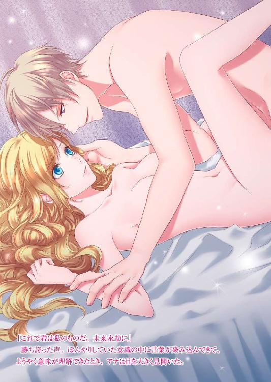
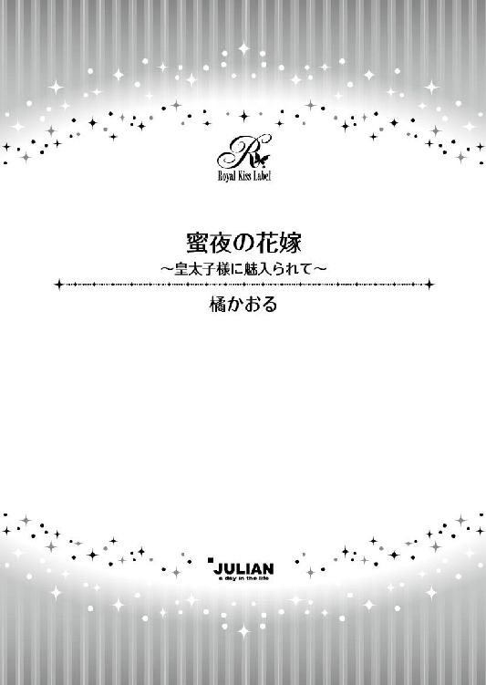
この物語はフィクションであり、実在の人物・団体・事件等とは、いっさい関係ありません。
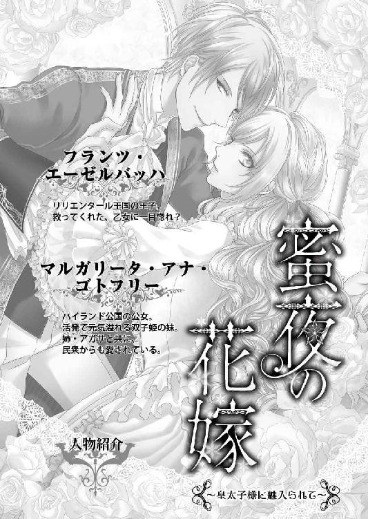
イラスト・ｇａｍｕ
序 章
「アナ、深いところに行っては駄目よ」
岸辺で双子の姉アガサが叫んでいる。
「大丈夫よ！」
アナは叫び返して、かまわずバシャバシャと水の中を泳ぎ回った。薄いシュミーズが身体にまといつき、邪魔だと思う。でもさすがにこれを脱ぐと、ばあやたちが卒倒するだろう。それでなくてもばあやは、はらはらして手を揉みしだきながらくどくどと訴えているのだから。
「姫様、どうかもう、お上がりください。ばあやの心臓を止めてしまわれるおつもりですか」
「大げさね。わたしに泳ぎを教えてくれたのはばあやじゃないの」
川の中ほどで立ち泳ぎをしながら笑ったら、ばあやがむっとしたように言い返してきた。
「それはもっとお小さいときのことでしょう。溺れたら大変ですから基本的な泳法をお教えしただけで、こんなお年頃になられてから水に入られるなんて思いもしませんでしたよ。お姉様のアガサ様はちゃんと弁えておられるのに、どうしてアナ様は......」
「期待はずれでごめんなさい。だってこんなに綺麗な水を見て、泳がないなんてあり得ないわ」
岸辺からは離れてしまったので、もう何を言っても無駄よ、とこっそり呟いて、ぺろりと舌を出す。川の真ん中くらいで上向きになって浮き、青い空を眺めた。羊のようなふわふわもこもこの雲がぽかりと浮かんでいる。
国境近くにある離宮へ避暑にやってきて、皆で川遊びをしていたのだ。ばあやと侍女しかいないから靴を脱ぎ、ストッキングも脱いで水に足をつけてみた。踝を見せるなんて淑女のすることではありませんといつもはうるさいばあやも、川遊びだからとそこまでは許してくれた。
前例や規則規律に厳しい王宮から離宮にやってきて、ばあや自身も気持ちが緩んでいたのだろう。
しばらくはアナも、アガサと一緒に浅瀬を歩くだけで満足していた。裸足の指の間を水が流れていくのが気持ちいい。日差しは暑いくらいで、水に浸かっている足はひんやりしているけれど、上半身は乳房の間をたらりと汗が伝う。足だけでなく全身水の中に入ったらどれだけ気持ちいいか。
そう思ったら、もう我慢できなかった。幸いここにいるのは姉と自分、ばあやと侍女二人だけ。しかも着ているドレスはモスリンの普段着用。宮殿にいるときのように、着るのも脱ぐのも人の手がいるような複雑な作業は必要ない。
ばあやたちがお昼の食事の準備をしているのをこれ幸いと、アナはするりと衣を脱ぎシュミーズとドロワーズ姿になった。目を丸くしていたアガサにウインクすると、制止される前に水の中に入っていく。
汗をかいていた身体に清涼な川水がひんやりと気持ちいい。昔ばあやが教えてくれた水泳で、楽々川の中程まで行き着いた。
「わたし、前世は魚だったかも」
子供の頃ばあやに教わっていたときも、まるで人魚のようにすいすいと泳げた。成長するにつれ、水泳はしてはいけないことの筆頭にあげられてしまったが。
「踝を出すだけで大騒ぎなんだから」
大人になるにつれ窮屈なことばかり増えていく。たまには羽を伸ばしてもいいはずよ。
自分で自分に言い訳をして、浮いていた身体を反転させ、反対側の岸近くまで泳いでいった。
「姫様〜」
ばあやが悲痛な声で呼んでいる。そろそろ引き返した方がいいかもしれない。心配性のばあやの心臓が止まる前に、と思ったときだった。上流から丸太のようなものが流れてきた。ぶつかりかけて危うく避けたとき、それが人間だったことに気がつく。
「うそ!?」
死体だろうかと、背筋にぞっと震えが走る。けれど目の前を流れていくとき、泳ごうというのか動いている手が見えた。
「生きてる！」
咄嗟に身体が動いていた。勢いよく水をかいて、流れていく身体を捕まえ、少しずつ岸の方へ押しやっていく。川の流れがさほど強くないからなんとかなった。浅瀬に相手の身体を懸命に押し上げたアナは、喘ぎながらその場に座り込む。
まだ若い男だ。肩から胸に傷を負っていて血が出ている。水に浸かったせいでかなり出血したようだ。ぐったりしているが逞しい身体つきで、上半身を引き上げるのにも苦労した。
顔を覗き込んで「まあ」と見惚れる。
「素敵な人」
ちょっとその辺りでは見ないハンサムだった。秀でた額、整った眉、長い睫毛。それに高い鼻梁と引き締まった形のよい唇。今は顔色は蒼白で唇は紫色だけど、もともとは健康そうに日焼けした肌色をしているのだと想像がつく。
「なんて言ってる場合じゃないわ。息をしていないじゃない！ どうしよう」
鼻先にかざした手に反応がない。水の中では手を動かしていたのに。なんとかしなければ。幸い心臓はまだ動いていた。
「こんなときは確か息を吹き込んであげればいいって」
泳ぎを教えてもらったとき、溺れた人の救助の仕方も習った。
アナは必死になって手順を思い出す。
「首を左右どちらかに向けて、顎を上げて、ばあやはなんて言ってたかしら。そうそう空気の通り道を確保して、それから息を吹き込む......」
見知らぬ男の唇に自分のそれを押し当てるのには、多大の勇気がいった。
「でもこれはキスじゃないのよ。わたしがしなければ、この方は死んでしまうんだから」
自らに言い聞かせ、えいっとばかり唇を触れ合わせた。ふうっと息を吹き込む。息を継いでさらにもう一度。それを何度か繰り返したあとで、唇を離して様子を見ようとしたときだった。首に回った腕がアナを動けなくし、触れ合った唇からにゅるりと何かが入り込んできた。
し、舌だわ。嘗められてるっ。
「んっ、んんっ」
動転したアナがなんとか顔を引き離そうとしても、強い力でかき抱かれ、身体まで密着した。逞しい男の身体を薄いシュミーズ越しに感じたアナは動揺する。
無意識にどんと肩を叩いたら、男が呻いて顔を上げた。怪我したところを叩いてしまったと青くなり、身動いで男の拘束から逃れ様子を見ようとしたら、正面から目が合った。
うわあ、バイオレットの瞳。初めて見るわ。神秘的な瞳に鼓動が激しく高鳴った。
「天使から口づけられるなんて、光栄の至り」
少し掠れた声が、ややきざっぽい台詞を吐く。天使？ わたしのこと？
戸惑っているアナに微笑みかけた男は、再びアナの身体を引き寄せる。またキスされると身を引こうとしたが、儚い抵抗にしかならなかった。怪我をしているのに男の力は強い。顔が近づき、再び唇を奪われた。
止まっていた息が戻ったからよかったとは思うものの、こうして口づけを続けられるのは不本意だ。
なんとかもぎ離そうとするのに、そのときには腰に回っていたもう一方の腕がしっかりとアナをつかまえていた。唇を嘗められる。
「甘いな」
甘いと言われ舌先でくすぐられると、なんだかぽうっとしてしまい、口の中に相手の舌の侵入を許していた。舌を絡められ、強く吸われて、身体の中心にもやもやと疼くものが目覚める。経験のないアナが、それこそが快感の萌芽だと気づくことはなかったけれど。
「ここは、天国？ 君のような素敵な乙女がいるなら、天国へ召されても文句は言えないな。天使の誘惑、なんちゃって」
溢れてきた唾液を嘗め取られ、チュッと音を立てて唇が離れる。ぼんやりした目で相手を見ていると「誘っているの？」と言われ、はっと気がつくと男の手が胸を触っていた。
「すごく、挑発的だ。透けて見えているよ。触ってと言っているみたいだ」
「ちが......、やぁっ」
そんなことはしていないと否定しかけていたのに、最後は声が裏返った悲鳴になる。男の手が乳房をぎゅむと掴んだのだ。豊かな膨らみを揉まれ、身体がじんと痺れた。さらに男の指が乳首を摘むと、
「......っ、ああん」
無意識に濡れた声が飛び出してしまう。
「いい声だ。もっと感じて。綺麗な君」
男が頭を擡げ、シュミーズの上から乳首にキスをした。甘い疼きが全身を走る。
何、これ。これが、感じるということなの？
初めての感覚に意識が蕩けていく。じわりと腿の間が潤んできた。自分がどうなってしまったのかわからない。ただ、もっとその先を切なく求めていることだけはわかった。身体の奥で目覚めたもの。これからアナを苦しめ、ときには恍惚へと誘う欲望。
男の唇が巧みに動き、やんわりと歯を立てられる。つきりと痛みが走って息を呑むと、今度は布越しに舌で嘗められぞくぞくした。
頭の芯が痺れたようになって、こんなことを許してはいけないと理性が叫んでいるのに、身体は全く従わず、男にかき立てられた快感に甘い吐息を零してしまう。
男の手がするりと腰に回り、丸みを帯びた腰を撫でられた。さらに大胆に大腿に触れられ際どい場所に伸びてくる。もう少しで密やかな場所が、と思ったとき、アナに触れていた男の手が滑り落ちていく。地面に投げ出されぴくりとも動かなくなったそれを見た途端、霞がかかっていた意識が急に鮮明になった。
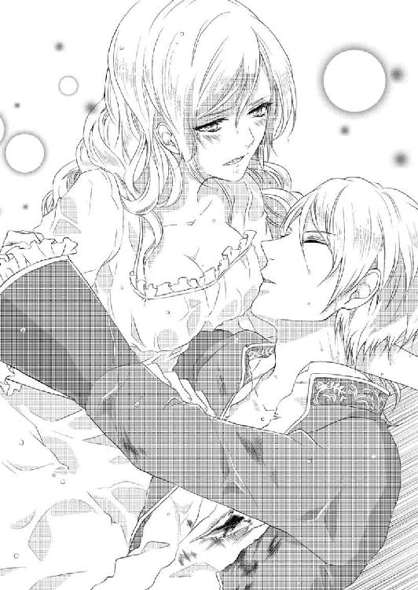
「まあ、たいへん。そうよ、手当てをしなければいけなかったのに」
激しく頭を振って、刺激されたせいで散漫になりかけていた意識を引き戻し、アナは立ち上がって向こう岸に大きく手を振った。
「怪我をした人がいるの。お医者様を呼んできて！」
普段はおっとりしているアガサが、さっと顔色を変え、てきぱきと指図するのがこちら側から見えた。ばあやがおろおろしている脇で、毅然としたその態度は頼もしい。侍女の一人が離宮に走り、もう一人はアガサの指図で上流に向かって走っていく。その先にこちらへ渡れる橋があるのだ。
声を出して知らせたあと、アナはシュミーズの裾を裂いて、意識のない男の傷口を縛った。少しでも血が止まればと思ったのだ。そうして男の頭を膝に乗せると、励ましながら助けが来るのを待つ。意識がなくても、自分の励ましはきっと男に聞こえているはずと信じて。
それにしてもこの男はいったい誰なんだろう。自分に触れた様子から、ずいぶんこうしたことに手慣れているように見えたけれど。
そのときのことを思い出して、うっすら赤くなりながらハンサムな顔を見下ろした。自分では怪我の程度はわからないけれど、なんとか助かってほしい。
間もなく侍女が息を切らしてやってきた。腕にガウンを抱えている。
「これを」
言いながらアナの肩から羽織らせる。
「警備兵が参りますので、そのお姿ではと、アガサ様が」
確かに薄いシュミーズでは身体は丸見えだ。まして濡れているから裸も同然。腕を通し、前をかき合わせた。まもなく警備兵が駆けつけ、医師も来て、アガサやばあやもこちら側にやってきた。
「姫様......」
ばあやはなんと言っていいかわからず絶句している。人助けをしたのを褒めるべきか、あられもない姿で殿方の前に現れたことを叱るべきか。その一瞬の間をついて、アガサがアナを抱き締めた。
「よくやったわ。わたし、あなたを誇りに思う」
姉姫にそう言われては、ばあやも叱ることはできないと諦めたのだろう。ため息をついて、ガウンの襟許を整えてくれた。
慌ただしく診察した医師が、出血は多いが命に別状はないと保証したので、警備兵が即席の担架を作って男を運ぶことになった。
離宮に戻ると、知らせを聞いた家宰が玄関まで迎えに出ている。その家宰が、運ばれてきた男の顔を一目見るなり驚愕して叫んだ。
「この方は、リリエンタールのフランツ王子殿下です」
王子が怪我をして川を流れてくるなど、いったい何があったのかと大騒ぎになった。おかげでガウン姿のアナは咎められずに自分の部屋に戻ることができた。川で泳いでいたことを叱られるかどうかは、これからの展開次第だろう。
浴室で侍女が用意してくれた湯に浸かり、アナはほうっとため息をつく。無意識に自分の胸許に手を触れていた。
「ここにあの方の手が......」
思っただけで乳首がじんと尖り、腰の奥が疼いた。これまで感じたことのない疼きと感情だった。
「素敵な乙女とか綺麗な君とも言われたんだわ。もしかしてあの方、わたしに恋をなさったのかしら」
呟きながら、胸を押さえた。心臓がどきどきしている。よく読む物語の中では、一目惚れする男女が出てくる。もしかするとこれがそうなのかも......。
「はぁ」
吐息が熱い。目の前にかざした手が震えている。この感覚に引きずられそうな自分が怖い。でももっと触ってほしかった。あの方の手がもう少しで触れそうだった秘密の場所。もしそこを触られていたらわたしはどうなっていたか......。
「お湯加減はいかがですか？」
侍女に声をかけられてはっとする。自分がとてもはしたないことを考えていたと気づき、アナは赤面して、顔を隠すために俯いた。
「ちょうどいいわ。ありがとう」
冷えていた身体が程よく温まったところで、バスタブから出る。
気になるのは助けた男のことだ。服を着替え、急いでアガサを探しに行く。姉なら知っているはずと思ったのだが、私室を覗いていなかったので、客室に向かった。おそらく男はそちらに運ばれたはずだ。もしかすると姉もそこにいるかもしれない。
客室のドアは少し開いていた。男がいるからだろう。慎み深い姉らしいと微笑しながら気軽に入ろうとした、その瞬間。
呼びかけようとした唇を咄嗟に押さえ、後退る。細めに開いたドアからベッドに上半身を起こした男が、アガサを抱き寄せるのが見えてしまったのだ。「私の乙女」と囁いて。
「一目惚れなんだ、可愛い人」
はっきりと聞き取れたその言葉がショックで、身体が硬直する。
なん、で？ さっきはわたしを抱き寄せてキスしたのに、今度はアガサ？
指先から身体が冷えていく。寒気がして鳥肌が立ち、アナは無意識に自分の身体を抱き締めていた。
力強い男の腕がアガサを引き寄せてキスをしようとしている。それに対してアガサもうっとりと身をゆだねているように見えた。
わたしにあんな熱いキスをしておいて！
ピンク色の靄に包まれてふわふわ漂っていた甘い感傷が、礫を伴った嵐に遭遇し吹き飛ばされた。傷つけられた痛みに、アナはぎりぎりと歯噛みする。許せないと強い憤激が身の内から込み上げてきた。
甘い夢に酔った直後だったからこそ、裏切られた感が強かった。怒り、悔しさ、勘違いした自身への嫌悪。それらが入り交じり、何も知らなかった無垢な心は煮え返った。
屈辱の苦い味を噛み締めながら、アナは中に気づかれないようにそっと後退り、十分に離れてから一目散に自室に逃げ帰った。ベッドに身を投げる。
怒りで顔が、身体が熱い。見開いた瞳は乾いてひりひりと痛みを訴えていたが、目を閉じれば今の光景が蘇りそうで。
そんなの絶対に見たくないと意地で目を開き続けると、心と身体の両方からの痛みで勝手に涙が溢れてきた。
「いやよ。こんなので泣くなんて絶対いや。これは、悔しいから、そうよ、あんな人、出会う女性みんなを口説いているに違いないのだわ。二度と気を許したりしない」
カバーを掴み嗚咽を堪える。
それが、ハイランド公国公女マルガリータ・アナ・ゴトフリーとリリエンタール王国王子フランツ・エーゼルバッハとの、不幸な誤解の始まりだった。
第一章 公国の双子姫
ハイランド公国に双子の公女が誕生したのは、今から十八年前。双子は不吉と言われた暗黒時代の迷信は脱していたが、健やかに育てるための幾つかの風習は残っていた。その一つが、双子の名前は一つしかつけない、だ。そうすることで、双子を狙う悪い妖精を、一人ですよとごまかすことができると考えられていた。これは国を支配する大公の公女でも同じだ。
誕生した公女はマルガリータ・Ａ・ゴトフリーと命名される。そして姉をアガサ、妹をアナと呼ぶことも公表された。
可愛い双子姫は、大公夫妻そして公国の民からも愛されて、すくすくと成長した。姉のアガサは読書好きで思慮深くおとなしい娘に、妹のアナは活発で冒険好きで、明るい笑顔が弾ける元気な娘に。
十六歳を過ぎた頃から、あちこちから縁談が舞い込んでくるようになったのは、姉妹の愛らしさ聡明さが、広く世間に広まったからだろう。
「いやよ、アガサと別れてお嫁に行くなんて。二人いっしょでなければ」
とアナが首を振ると、アガサも「わたしもいや」と意思表示した。
「これは難題だな。心当たりに双子の王子などおらんぞ」
大公夫妻は頭を抱えるが、もともと姫たちを溺愛していることもあって、「ま、いいか」で縁談を断り続けてきた。
双子姫たちは、父大公の名代として公式行事に参加したり、外国を訪問したりして、さらに評判を高めていく。
十八歳になるとさすがに縁談を真剣に考えざるを得ず、大公自ら何人かの候補者を姫たちに示した。大公夫妻はついに男子に恵まれなかったから、後継は双子姫のどちらかになる。だが娘を溺愛する大公は、彼女たちを地位に縛りつけようとはしなかった。
「おまえたちが残って跡を継いでくれてもいいし、嫁いだ先で生まれた子供を皇太子として迎えてもいい。だから自分が一番幸せになれる道を選びなさい」
そう言って夫人とともに、あれこれ候補者を吟味するのだった。
双子王子はさすがに無理だから、未婚の兄弟王子がいるところ。できれば近隣がいい。そうすればときどき里帰りもできるからと、大公は得々と自らの希望を述べた。傍らで夫人がにこにこと笑っている。
その候補の中に、リリエンタール王国の王子たちの名前も上がっていた。
リリエンタール王国とは、入り組んだ国境線で繋がっている隣国だ。ハイランド公国より領土は広く人口も多い豊かな国である。昔は領地を巡る係争もあったが、近年は友好関係が構築されていて、嫁取り婿取りには文句ない好条件の相手だった。
フランツはその三番目の王子で、なかなか優秀な王子と言われていた。その王子が、どうして怪我をして川を流れてきたのか。
離宮から知らせを受けた大公が調べさせると、なんとリリエンタールではクーデターが発生していた。国王と、フランツの兄二人も行方知れず。
隣国の危難に呆然とした大公は、事情を聞くために自ら離宮へ駆けつけてきた。
「たまたま演習で郊外にいた私は、知らせを受けてただちに手勢を連れ首都に取って返したのですが」
少ない手勢を指揮しクーデターの首謀者を追い詰めたものの、斬り結んでいるうちに足場が崩れ崖から落ちてしまった。
という事情を、フランツ自身が大公に語った。
「しかし、なぜまたクーデターなど」
大公が首を傾げるように、近年のリリエンタールの政情は落ち着いていた。
大事をとってまだベッドから離れることを禁じられている王子は、わざわざここまで来てくれた大公に謝意を述べつつ、「これは自国の恥なのですが」と話を続ける。
「実は石炭の新しい鉱床が見つかりまして、それが今回の首謀者である叔父の土地にあったのです。我が国の法律では、石炭は国家の管理下に置かれると規定されています。値段の高騰を抑えるためなのですが、叔父はこっそり隠匿しようとしていました。それがばれて、公爵位返上、領地没収の沙汰を言い渡されたのです」
フランツは感情を抑えているが、憤りが語感の端々に滲むのまでは堪えようがなかった。
「クーデターは判決が告げられたその夜に起きました。もともと危険な兆候があったので、父王には十分な警戒をするようにと忠告していたのですが、まさか自分の弟が、と油断していたようです」
結局、密かに警戒していたフランツの目の前で、ことは起きてしまった。
「さすがに私もその夜とは思いつきませんでしたので」
不意を衝かれ後手に回った。それでも叔父を追い詰め致命傷を負わせたから、
「おそらく生きてはいないはずです」
冷ややかに言い放つフランツに、大公がそうかと沈痛な顔でうなずいた。
「調べさせたところ、首都は反乱者たちの手に落ちているが、まとめる者がいないためこの先の展望で揉めているようだ。国全体が争乱に陥っているわけではないから、首都と国を取り戻すには今がチャンスなのだが、王党派も指揮官不在のため混乱しているみたいだね」
「早く戻らなければ」
王子が歯噛みする。大公は同情の眼差しを向けつつ、首を振った。
「今起き上がってもその怪我ではまともに動けないだろう。戦いの指揮などとても無理。しばらくは養生しなさい」
そう諭す大公に、王子は短く「わかっています。しかし」とあらがおうとする。大公は手を振ってそれを宥めた。
「長年の友好を考慮し、わしが後ろ盾になろう。身体を癒す間に、王党派を秘密裡にここに集結させてはどうかな。そして準備を整え、一気に攻め入るのだ」
フランツは咄嗟にその申し出の裏を考えつつ、表面上は丁寧に礼を言う。
「それはありがたいご厚意です。よろしくお願いします」
うんうんとうなずいた大公は、機嫌良さそうに出て行った。
大公を見送ったあと、フランツは吐息を零しながら、起こしていた上体を横たえる。肩から胸にかけて包帯が巻いてある。怪我自体は比較的軽傷と言えるが、川に流されている間の出血が多すぎた。それに身体のあちこちに崖から落ちたときの打ち身も残っていて、この身体で戦うことは無理だと自分でもわかっている。
ままならない状態がもどかしい。
「それにしても、今の大公の申し出をどう考えたらいいのか。無条件で手を貸してくれるとは考えにくいのだが」
国と国の利害が絡むときは用心が必要だ。部下たちが指示通りに動いていれば首都奪還の成算はあるから、ハイランドの恩恵は受けたくない。とはいえ、命を助けられ、手当てを受けている現状ではフランツに選択肢などないのだが。
「まずは身体を治すことが先決だな」
その間に自分が犯してしまった痛恨のミスを挽回できれば。
あれはまさにとんでもない大失態だった。目覚めたとき、側にいた相手を命の恩人と勘違いして求愛してしまうとは。川の中で出会った運命の人。それがまさか、双子の別人だったなんて。
川を流されながらなんとか岸に辿り着こうとして果たせず、体力が刻々と失われていくのを自分でも感じていた。決して諦める気はなかったが、それでもさすがに弱気になりかけたとき、天使が現れたのだ。
気がついたとき自分は、その天使に口づけられていた。眩い金色の髪、空の色を写したような澄んだブルーの瞳、そして摘んで食べてしまいたい苺のように瑞々しい唇。表情豊かな整った顔に魅せられた。まさに一目惚れ。
彼女がいるなら天国でもいいと手を伸ばした。口づけてくれたのだから、向こうも自分のことを気に入ってくれたのだろうと。
甘い唇を味わったら、それだけでは済まなくなった。命ぎりぎりのところにいたというのに、いやそうだったからこそなのか。欲情をかき立てられもっと欲しいと触れていた。
乙女の可愛らしい反応にますますかき立てられ、もし体力が限界状態でなかったら、その場で最後まで挑んでいただろう。
あそこまで許してくれたからには乙女も自分に好意を持ってくれたはずと確信して、目覚めたとき側にいた彼女を抱き寄せたら抵抗されてしまったのだ。そして衝撃の事実を告げられる。
「わたしはアナではありません。姉のアガサです」
改めて見ると、確かに別人だ。似ているが雰囲気がまるで違う。彼女は控えめでおとなしい印象だが、自分の乙女はもっと溌剌としていて、表情豊かだった。
こんなに違うのに、どうして間違えてしまったのか。
「これは失礼した。私を助けてくれたのは、ではアナ公女？」
それには肯定のうなずき。フランツは思わず額を押さえて唸った。自分としたことが。
助けてくれた相手がハイランドの公女だとわかっていれば、彼女たちが双子だという知識もあったのに。
「本当に申し訳なかった」
率直に謝罪すると、青い顔をしていたアガサは、それでも微かに微笑んでくれた。
「謝罪を受け入れますわ。でもたぶんアナは......」
心配そうに少し開けてあるドアを振り向く。今の一幕を見られたかもと呟くアガサに、まさに最低の気分になった。きっとアナは誤解しただろう。
すぐにでも誤解を解かなければ、とベッドから下りようとしたら、身体がふらついて目眩がした。何かに掴まらないと立つこともできない。もともと頑健な質で病気などしたこともないから、自分の状態が信じられなかった。
「無理をなさってはいけません」
警戒して離れていたアガサが、それを見て慌てて駆け寄ってきてくれた。ベルを鳴らして人を呼び、医師も駆けつけてくる。起きようとしたのだとアガサが告げると、安静にしていないと回復しませんと脅された。
「出血多量で、一時は重体だったのですよ。すぐには元どおりにはなりません。食事をきちんと取って静養に努めてください」
重体だったと言われて、今の体調不良に納得した。仕方がない。体力の回復を待つしかない。起きると目眩がするほどの脱力感の理由がわかれば、諦めもつく。
早く起きられるようになって、アナ公女への謝罪と弁明に努めなければ。
一人になるとフランツは、横たわったままうっとりと指を動かした。この手に触れた彼女の温かさ、ふくよかな胸、甘い唇。命の輝きそのままの溌剌とした存在。彼女が自分を、死の淵から引き戻してくれた。
きちんと説明して謝罪すれば、きっとわかってくれるはず。反乱者たちから国を取り戻すという大事が待っているのは承知しているが、そのときフランツの脳裏を占めていたのは、いかにして失態の許しを得て彼女に自分の気持ちを伝えるかということだった。
「アナ」
「何？」
「違うのよ」
「何が？」
アガサが話しかけてくるのが煩わしかった。迷惑顔で移動しようとしたのに、アガサは腕を掴んで行かせてくれない。
「避けていても、いつかは話さなくてはならないのよ」
おとなしく控えめなアガサだが、いざというときには行動力がある。フランツを助けたときの采配もそうだし、今も。
でも自分は聞きたくないのだ。アガサが、たとえ自分はフランツが好きではないと言ったとしても、彼が告白したのは彼女なのだから。
プライドがあるからなんとか平静を取り繕っているが、大好きな姉であっても今はその顔を見るだけで胸が痛む。
父大公は、すでに王宮へ引きあげていた。公女たちを残したのは、表向きは、大公代理として隣国の王子であるフランツをもてなすためとされている。
だが実際は、もともと婿候補だったフランツがこの地に来たのを幸い、交流を通じて公女たちの気持ちが動くかどうか見定めようという腹らしい。溺愛する娘には政略結婚などもってのほかと考える大公らしい思惑だ。
とはいえ、安全が確保される状況になければ、大公も愛娘を置いて帰りはしなかっただろう。
反乱軍に占領されているリリエンタールの首都リエラからここは、直線距離だとそれほど離れていないが、実際は渓谷と急峻な山に隔てられている。王子の生存を聞きつけて攻め寄せてこようとしても、道がないため、敵方の奇襲を受ける懸念は少ない。
さらに、離宮を警護するために近衛騎士団を呼び寄せているし、またリリエンタール側との実務交渉には、任命された特使が滞在している。
彼らはフランツ王子の監視役も兼ねていた。後ろ盾になると約束し、婿候補と大公が考えているにしても、本来は別の国の王子。用心は必要だ。
左翼部分をリリエンタール側に提供しているせいで、そちら側ではリリエンタールの兵が巡回しているが、離宮全体の警備はハイランド側がしっかり受け持っている。
父大公を見送ったあと、アナはことごとくアガサを避けていた。
国境近くのこの離宮は、中央と左右にある三つの大きな塔を中心とした長方形の建物だ。城の周囲は、三方が川から引き込まれた運河で囲まれていて、残りは狩猟のために残された森林になっている。
もともとは簡素な狩猟小屋だったのを、何代か前の大公夫人が瀟洒な離宮に造り替え、主に夏場の避暑地として活用されていた。ほかの季節は狩猟時に訪れるだけだ。
だから隠れるところはたくさんある。惜しむらくは、幼いときに見つけたそれらの隠れ場所は、アガサも知っているということ。
だから、逃げても結局は見つけ出されてしまう。今のように。
双子だからといって今まで喧嘩がなかったわけではない。普段は離れられないと互いに言っているくせにやはり意見の相違はあって。そんなときはアガサがそっと譲ってくれ、いつの間にか喧嘩も収まっている。
自分などよりよほど大人で、思慮深い。控えめで黙っていることが多いけど、自分の意見はちゃんと持っている。だからアガサのことは大好き。でも今だけは......。
頑なに顔を背けていると、とうとうアガサも諦めたように嘆息する。
「わかったわ。そこまで拒むのならもういいわ。でも、聞かなかった責任はあなたにあるのよ。後悔しても知らないから」
そう言って、手を離してくれた。
自由になると足早に自室へ向かう。ベッドに身を投げ、痛む胸を押さえた。じっとしていれば、すでに馴染みになってしまった痛みは次第に収まっていく。
ふうっと息を吐き、その頃になってようやくアナは、アガサの言葉が気になりだした。少し冷静になったというか。
後悔しても知らない？
彼女は何が言いたかったのか。自分の目で見たことがすべてで、それ以上でもそれ以下でもないと思うけれど。アレに何か理由がある？
耳も傾けなかった頑なな自分を後悔する。次にまたその話が出たら、今度はちゃんと聞いてみよう。
だがアガサはそれきり、この話題に触れなかった。おっとりと微笑み、見事なまでにこれまでと同じ態度で接してくる。
不安がじわりとアナの心を包んだ。アガサが口を噤んでしまった以上、彼女が言いたかったことはもうわからない。これでアガサはなかなか頑固なのだ。アナが撥ねつけたことで傷つき怒ってもいるだろう。
どうしよう......。
思い惑うことばかりで、それまで溌剌として明るかったアナが、淡いかげりを纏うようになった。その陰影が、なんの屈託もなかった子供時代から大人への、第一歩なのかもしれない。
木立に囲まれた四阿のベンチにぼうっと座っていたアナの耳に、一つ先の小道を歩く侍女たちの笑い声が聞こえた。こちらには気がついていないようで、けっこうあけすけにフランツの噂話をしている。彼女たちからすれば、ハンサムな隣国の王子は楽しい話題なのだろう。
「とっても気さくな方なのよ。わたしのような者にもありがとうと言ってくださったの」
今朝食事を運んだ侍女が言う。
「あら、わたしもベッドのシーツを取り換えたら礼を言ってくださったわ」
「あんな素晴らしい方なのに、クーデターに遭われたなんてお気の毒よね」
「あの方の軍服姿、素敵でしょうね」
「あらあら、そんなにうっとりしても駄目よ。王子様はアガサ様のものだから」
聞くともなく聞いていたアナは、侍女の一人の台詞にぎくりとした。無意識に胸を押さえて息を詰める。鼓動がいきなり速くなった。
「わかってるわよ。お二人並んでいらしたら、うっとりするほどのカップルだもの。この間見つめ合っていらしたときなんて、甘い雰囲気でこちらの方がどぎまぎしたわ」
「早くお元気になられるといいのに」
ずんと気持ちが重くなった。心臓がズキズキと痛い。
やっぱりそうなのだわ。アガサはあの王子と......。
アガサがときおり見舞に行っているのは知っていた。儀礼上行くのが当然だと理解もしている。アナ自身は「一緒に」と誘われて断ったら、アガサは「わかったわ」と仕方なさそうな顔をしていた。
顔を見なければ痛みは薄れるのかと言えば、逆に彼の話題にはつい聞き耳を立ててしまう。自分からは容体を聞けないから、侍女の話やアガサが家宰に話しているときに耳をそばだてる。
それによると回復は順調のようで、まもなくベッドから離れられるだろうとのこと。また、王子がここにいるのを密使から知らされて、王党派がぞくぞく集まり始めているとも聞いた。
こんなふうにこそこそする自分は自分じゃないと思うのに、変に曲がってしまった臍は、なかなか素直には戻らないらしい。
「こんなところで何をしているのです」
侍女頭の咎める声が響き、侍女たちもアナもびくっと身体を震わせた。慌てて四方に散っていく侍女たちと同じく、見つからないようアナも身を縮める。幸い侍女頭はこちらには気づかず行き過ぎていく。
あたりはしんと静まり返った。
しばらくその場を動けずにいたアナだったが、午後のピアノのレッスンが迫っていることに気づき、しぶしぶ立ち上がる。スカートを摘んで四阿の階段を下りようとしたときだった。レースの裾をうっかり踏んづけてつんのめる。
体勢を崩したまま柱に掴まろうと焦って手を伸ばしたら、逞しい腕にふわりと抱き留められた。ぶざまに倒れずにすんでほっとしたが、一瞬で相手の正体を知り、固まった。腰に回された腕の感触に総毛立つ。
フランツ王子......！
「大丈夫ですか？」
耳許で魅惑的な低い声が尋ねてくる。その声に反応して、身体がぶるっと震えた。硬直した時間が解ける。
「ありがとうございます。平気です」
堅苦しく礼を言って、身を捩った。フランツの手が離れていく。温もりが消えると、なぜか引き戻したい思いに駆られる。気のせいだと自らに言い聞かせた。
「お元気になられてよかったですわ。わたしはこれで......」
口早に告げて、急いで立ち去ろうとしたら、すっと腕を掴まれ引き止められる。
「ちょうどよかった。あなたを探していたのです」
「......っ。なんでしょう」
「ベッドから離れられたら、真っ先にあなたにお会いしなければと思っていました」
公女として見舞いに出向かなかった行為を責められるのかと思った。だがフランツは責めるどころかアナに感謝していることを告げる。
「あのときあなたに助けていただかなければ、命も危うかった。心からお礼を申し上げたい」
「それはわざわざ。ご無事でよかったです。それでは失礼を......」
話がそれだけならと、掴まれた手を引き抜こうとしたら、なおいっそう強く引き止められた。まだ何かあるのかと困惑する。
「溺れかけ意識も朦朧としていたときあなたを見て、天使に助けられたのだと思った」
「......大げさな......」
「一目惚れでした」
アナの言葉を遮るように告げられた言葉に、一瞬放心状態になった。ふわりと舞い上がりかけた心は、アガサと彼との一場面が蘇った途端、地の底に叩きつけられる。彼はアガサにも同じことを言ったのだ。
わなわなと身体が震えた。そのあとのことは、ほとんど無意識の動作だった。
アナは掴まれていた反対側の腕を振り上げ、振り下ろす。パンと小気味いい音が響き渡った。
叩いたアナも、叩かれたフランツも呆然と目を瞠って棒立ちになる。
最初に我に返ったのはアナだった。
「わ、わたしはっ、貞潔な方しか認めません！ あなたは姉にも同じことをおっしゃっていたわっ」
肩で息をしながら怒鳴るように言ってしまった。涙が噴き出しそうなのをぎりぎりで堪え、力の抜けたフランツの手を振り解き走り去る。建物のドアをくぐり抜けるときにちらりと見ると、フランツはまだその場に立ち尽くしていた。
叩かれたことなんてないだろうから、それだけ衝撃が大きかったのか。
「後悔なんかしないわ。あんな、誰にでも言い寄る人なんて、当然の報いよ」
屈辱に震える唇をきゅっと噛み締めると決然と背筋を伸ばし、肩を聳やかして自室に向かう。
「やってくれる」
呟いたフランツは、叩かれた頬を軽く撫でた。あの程度の打擲は痛くも痒くもない。それよりも、きっとこちらを睨みつけた眼差しに痺れた。
アナの心情は理解できる。別の相手に求愛し、その舌の根も乾かないうちに同じ言葉をかけられたら、激昂するのは当然だ。配慮がなかったとフランツは苦笑する。
だが「一目惚れ」という言葉以外に、自分の気持ちに相応しい言葉は思いつかなかった。アガサと一緒のところを見られた直後に弁解に赴かなかったのも、マイナス要因だろう。動けなかったからとか、自身の口から謝罪したかったからなども、今となっては言い訳めく。
乙女の潔癖な気性を甘く見ていた。心からの謝罪と弁明で誤解は解けると根拠もなく信じていたが、聞く前から拒絶されるほど激烈な反応を示されてはお手上げだ。
「だが......」
フランツは頬を撫でていた手を下ろし、にやりと笑った。
「それだけ彼女の心を揺さぶっていたという証拠でもある」
誤解を解く方法はいくらでもあると、フランツはアナの駆け去った方を眺めやる。
「殿下、大丈夫ですか」
密やかに声をかけられ振り向くと、フランツ付きの副官クラウスが立っていた。二メートル近い大男で、動乱時も最後までフランツを守って側にいた忠誠無比の男だ。
フランツが敵もろとも落ちる寸前に駆けつけたクラウスの、悲痛な表情が忘れられない。手を差し伸べ、それが届かないとわかったとき自分も飛び込もうとした。
ずるずると崖を滑り落ちながら、
「来るな！ おまえは兵をまとめて待機しろ！ 必ず生きて戻る！」
怒鳴って命令し制止したが、その言葉を忠実に守り、フランツがハイランドで生きているとわかると早速部下を連れて駆けつけてきた。
その後も続々と王党派が集まってきているが、日和見だった連中の決心を促すのに、率先してやってきたクラウスの行為が役立っていた。彼はもともとリリエンタールでも有力な家系の出なのだ。
リリエンタールを取り戻す準備は着々と進んでいる。動けずに横たわったままでいたとき、信用できる者を密使として派遣し、手筈を整えた。あとは自分の体力の回復を待って行動するだけだ。
問題は死んだと思っていた父王が、首都で拘束されているのがわかったこと。これは吉報ではあるが、同時に作戦を複雑にする要因にもなった。
クラウスは心配そうな顔でフランツを見ていた。少しでもよろけたら、支えようと構えている。無理もない。フランツはつい先ほど、ようやくベッドから離れたばかりなのだ。久しぶりにまともな服に袖を通し、アナの居所を尋ねてから、ゆっくりと歩いてここまでやってきた。
起き上がれたら真っ先にすると決めていた、アナへの感謝と謝罪を伝えるために。
「心配ない。体力を戻すには多少の無理も必要だ」
「そうかもしれませんが」
クラウスは肯定しつつも心配顔を緩めない。ようやくここまで回復した王子に、またベッドに逆戻りなんてしてほしくないのだ。
「今は、情けない自分を早くなんとかしたい思いでいっぱいなのだ。この私が、逃げた乙女を追うこともできないんだぞ」
怪我をする前は、体格の勝るクラウスとも互角以上にやり合えていたのに。
「もう一度鍛え直しだな」
自戒を込めて呟くと、クラウスはうなずきながらもなんとなく不服そうだ。なんだと水を向けると、躊躇いながらも口にする。
「あの公女様は、一度もお見舞いに来られなかったと聞いていますが」
言外に、こまめに見舞ってくれたもう一人の方がいいのでは、と告げている。フランツは笑った。
「従順なだけの女性は好みではない」
「ですがアガサ様は......」
「わかっている。表向きは従順でも、しっかりした女性だと言いたいのだろう。だが私は、自分の意見を主張しない相手は物足りないのだ。何を考えているのかと穿った見方をしてしまう。きちんと思いを伝えてくれれば、こちらも反論できる。言葉を呑み込み、不満も呑み込んでしらっとした顔をされるのは、面白くない」
「はあ。......まあ好みは人それぞれですから。リリエンタールのことさえ忘れないでいただけたら」
生真面目に忠告まがいの台詞を告げるクラウスに、フランツが苦笑した。
「片時も忘れてはいないさ。叔父のクーデターに加担したのは、近隣の欲深どもだ。一気に粉砕してやるさ。今は帰国できる状況にないから、自身の一大事に取り組んでいるだけだ」
「一大事？」
「そうとも。ここで未来の花嫁を見つけたんだ。口説き落として我がものにできるかどうか、人生の一大事だろう？」
そう言うとフランツはアナが消えた建物に目を向けた。傍らでクラウスが放心したように「花嫁」と呟いている。驚いたようだ。それにはもうかまわず、フランツは計画を練る。
「さて、どうやって誘い出すかな」
こぢんまりとした離宮だが、それは王宮と比較するからで、ここも十分な敷地がある。自分を避けるつもりらしいアナを捕まえようとしたら、広大な土地で鬼ごっこをしなくてはならない。そんな無駄な時間を費やすより、アナ自身に出向いてもらえばいい。
「茶話会などがいいかもしれないな。リリエンタールからここへ集まってくれた者たちにも、少しくらいは息抜きをさせてやりたい」
ふふっとフランツは口許を緩めた。優先順位の第一は、今はアナのこと。帰国のための戦旅に旅立つときには、ぜひ彼女から祝福を得たいものだ。
「さてアガサ公女はどちらにおられるかな」
率直に謝罪してから、アガサは物わかりのいい姉として接してくれている。茶話会を開きたい、そしてその席にぜひアナ公女もお連れくださいと頼めば聞いてくれるだろう。特に親善のためと銘打てば。
「まずは彼女と普通の会話ができるように」
着飾ったアナの姿を思い浮かべて、フランツは微笑んだ。
第二章 宝石菓子の甘い誘惑
アガサから茶話会のことを告げられて、アナは反射的に出席を断ろうとした。フランツと顔を合わせる機会はできるだけなくしたい。
「でもこれは、フランツ様がご快癒なさったお祝いの、公式のお招きなのよ」
「うちの料理人や菓子職人を使うのに、公式？ おかしいんじゃない？」
「うちのじゃないわ。離宮の半分をお貸ししているあちら側には、もう王宮を脱出してやってきた料理人や侍従たちも集まってきているわ。だから食事や身の回りのことは、リリエンタール風に整えられていて、あなたもお邪魔したら、ハイランドとずいぶん違うからびっくりするわよ。今もどんどんお味方が増えているし。顔合わせの意味もあるのかも」
そこで言葉を切ったアガサは、持ち前の柔らかな表情を引き締めた。
「我が儘もたいがいにしなくちゃね、アナ。あなたは公女なのだから責任を果たさなくちゃ」
公女としてしっかりその役目を果たしたアガサに比べ、アナは何もしていない。責任を果たしていないと言われればその通りだ。アナはキッと唇を引き結びわかったとうなずいた。
茶話会には、フランツに味方するために集まったリリエンタールの貴族たちが出席するという。ハイランド側も、公女二人を筆頭に、大公から派遣されてきている特使、特使夫人、近衛騎士団の主立った者、近隣の貴族などが招かれた。
「アフタヌーンティですから、肌を出すのは控えめに、けれども誰よりも華やかに装っていただかなくては」
ばあやが張り切ってドレスの指図をしている。アガサにはバイオレットの、アナには濃いピンクのドレスが選び出された。どちらも豪奢なレースが手首と胸許を飾っている。レースの先端には小粒真珠が縫い止められ、それよりも少し大きめの真珠が飾りボタンになっていた。
一つ一つ嵌めていかなければならないから、侍女の手を借りないと着られない。
ドロワーズ、コルセット、ペチコート。順に身につけてから、絹の靴下を穿く。ドレスと共布でできたサテンの靴が差し出され、アナは華奢な足を滑り込ませた。
ドレッサーの前に座ると、小間使いが髪を結い上げた。額と耳許に幾筋か垂らし、残りは束髪にして巻き上げる。大粒の真珠のついたピンで留めつけた。耳許にも真珠のイヤリングが揺れている。
きちんと化粧も済ませ、いよいよドレスを取り上げる。するりと足から通し肩まで引き上げてから、腕を通す。前を押さえている間に後ろについている真珠のボタンを侍女が嵌めていった。けっこう時間がかかる。
ばあやが前に後ろにと動いて襞を整えた。アガサとアナの双子公女が正装で並ぶとそれはそれは煌びやかだ。
「さあ、できました。本当にお二人ともお美しい。ばあやは誇らしいですよ。これならフランツ様の目を釘付けにできます」
ばあやが惚れ惚れと見上げる。支度を手伝った侍女たちもうなずいていた。
「アナ、笑顔」
フランツ王子のために着飾ったんじゃないわと、反射的に仏頂面になってしまったアナを、アガサが窘める。唇を無理に引き上げて、アナがしぶしぶ笑顔をつくると、それでいいとアガサも微笑んだ。
茶話会の会場はこの離宮でも一番大きな広間だ。天井には繊細な格子細工が施され、銀の紐で留められた花綱からたくさんの釣りランプが下がっている。豪華なシャンデリアより明るくて、隅々まで光が届く構造だ。
広間の周囲には幾つかのアルコーブが付属していて、ちょっとした休憩のために長椅子などが置かれていた。カーテンで仕切られたアルコーブの一つに、今はハーブとバイオリンの奏者がいるようだ。会話の邪魔にならない程度の静かな曲が流れている。
中央にやや低めのテーブルが幾つも据えられ、三段重ねのティースタンドに、様々な具材を挟んだサンドイッチ、一口サイズのケーキ類、シーフードや野菜、ハムなどを使ったキッシュ類が彩りよく並んでいた。
茶話会だから飲み物も紅茶が基本だが、シャンパンやワインの爽やかなドリンク系、チョコレートなどやや重めのものも取り揃えてある。
「見て、アナ。このケーキまるで宝石のよう」
手近のテーブルにあるプチケーキ類を見て、アガサが感嘆の声を上げる。柔らかく盛り上げたメレンゲの上に色とりどりの糖菓がきらきら光っている様は、確かに宝石箱をひっくり返したようにも見える。
「うちの離宮の料理人では、こんな洒落たものは作れないわね」
アナが面白くなさそうに言うと、くすりと笑ったアガサは「でも」と続けた。
「お父様の料理人なら作れるわ」
王宮の厨房を預かる主料理人と、ときおりの訪れだけに利用する離宮の料理人とでは、当然技量が違う。わかっていて口にしたので、アナもそれ以上は言わない。反感を表に出してしまった狭量さが自分でも嫌だ。わたしはこんなねちねちした性格じゃなかったはずなのに。
上座へ導かれる間も、アガサは頬を紅潮させ感嘆の言葉をアナに囁きかけてきた。いつもならはしゃいでいるのは自分の方なのに。
アナは、唇をきゅっと引き結び目を伏せ気味に歩く。
すれ違う相手にときおり会釈しているのも、いつも控えめで引っ込み思案のアガサとは様子が違う。見舞いのために何度も訪れているから、自然に顔馴染みになったのだろう。
自分が動かないから、アガサが慣れない社交を一手に引き受けてくれていたのだと、申し訳ない気持ちが込み上げる。しっかりしなくては。わたしはハイランドの公女なのだから。
そう言い聞かせて顔を上げたとき、すぐ目の前に立っていたフランツと目が合った。神秘的なバイオレットの瞳に吸い寄せられるように、ふらりと身体が揺れる。何か彼の瞳から磁力のようなものが出ているのだろうか。
「この度はお招きありがとうございます」
揺れた身体が前に出ようとして、アガサの声で我に返った。逸れていくフランツの視線が残念そうに見えたのはきっと錯覚に違いない。
「ぜひ楽しんでいってください。もっとも離宮をお借りしている立場でお招きするのも、微妙ですが」
フランツは笑いながら、今の自分の立場を軽やかに皮肉ってみせた。
「まあ、そんな。喜んでお招きを受けましたわ。宝石のようなケーキがたくさんあって本当に楽しみです」
「そう言っていただけると嬉しいです」
話している二人を直視できなくて、アナは俯いていた。どうしても垣間見た求愛のシーンが蘇るのだ。それに叩いてしまったし。
フランツは怪我から回復したばかりだからか少し面やつれしていて、かげりのあるその表情が彼の男の艶を増していた。
肩幅の広い長身には銀綾織りのウェストコート、ミッドナイトブルーの上着がしっくりして似合う。ふんだんにレースを使ったクラバットは大粒のダイヤで留めてある。靴の留め金にも同じ意匠のダイヤがついていて、目立たぬ部分にも気を配った装いが洒脱だった。
歓迎の挨拶をするその声も、耳に心地よい美声だ。アガサのあと、差し伸べたアナの手にフランツが口づける。ただの儀礼なのに、彼の唇の感触は、アナの身の内に震えをかき立てた。無意識にさっと引き抜こうとしたら、強く握って止められ、アナはきっとフランツを睨んだ。
「先日は驚きましたよ。しばらく痕も残りましたし」
もう一方の手で頬を撫でながらフランツが言う。
「アナ？ 何かしたの？」
フランツの台詞を聞き咎め、アガサが心配そうな目をアナに向ける。アナのフランツに対する反感を知っているから、非礼を働いたのかと懸念しているようだ。
フランツは人好きのする笑みを向け韜晦する。
「ご心配には及びませんよ。アナ公女とお話しできて嬉しかっただけです」
「それならいいのですが」
そのやり取りの間、アナの手はフランツに握られたままだ。さりげなく何度も引き抜こうとしたが、そのたびに強く握られて叶わなかった。それどころか指を微妙に動かして刺激してくる。触れられただけで震えが走るのに、そんな触り方をされたら困る。背筋を何度もぞくぞくしたものが上下し声を漏らすまいと唇を引き結ぶ。
フランツはこちらの反応を試しているようだ。嬲るようなその態度に、だんだん怒りが込み上げてきた。公式の場であってもかまわない、決然と振り払おうと決意した途端、フランツが手を離す。アナが思い切ったことをしそうなのを察したのだろう。
ようやく自由になった手を握り締めてドレスの襞に隠し、アナはつんと顎を上げた。
フランツに促され、二人は席に着く。彼女たちとフランツは王族として、慣例に従って上座に席が設けられているのだ。宴が始まってしばらくは動けない。でもこれは茶話会だから、さほど我慢しなくても席を立てるだろう。もし晩餐会だったら客が揃うまで、つまり食前酒が遇される間、じっとしていなければならないのだ。
自分の隣がフランツでアガサはその向こうという配置が、アナにとっては苦痛でならない。早く側から離れたい。
やがて招待客が全員揃ったのか、玄関回りにいた侍従たちが一斉に壁際に移動した。威儀を正して一列に並ぶと、その中の侍従長が一歩前に出て金の装飾のついた杖で床を突く。
フランツが立ち上がり、来客者に挨拶した。最後はハイランドへの感謝の言葉で締め括る。それに対してアガサが答礼し、さらに大公から派遣された特使がグラスを掲げて謝辞を呈した。
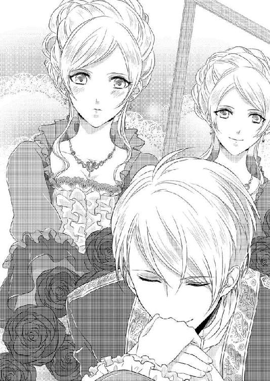
形式張った行事はそこまでで、和やかに茶話会が始まった。
さざめく人々が会場の中を自由に行き交い始める。ケーキやサンドイッチなどを載せた皿を持ち、トレイを抱えて通りかかった侍従から飲み物を受け取って、そこここでハイランド側とリリエンタール側の会釈が交わされていた。和気藹々と、それでいて他国ゆえの一抹の緊張感も含んだ雰囲気だ。
その様子をアナたちは上座の席から見ていた。
目の前のテーブルには同じように三段のスタンドが置かれて、料理やケーキも同じように載っている。だが、入れ替わり立ち替わり挨拶の者がやってくるせいで、食べる暇がない。
それに気がついたフランツが、ちょうどやってきたリリエンタールの貴族に待つように合図し、彼自ら皿に取って二人に勧めてきた。
「うちの料理人や菓子職人の自信作です。どうぞ」
悪戯っぽく笑うのがまた魅力的だ。縁に金細工の施された華奢な小皿に、宝石のような菓子を二つばかり載せて差し出される。配慮に感謝しながらアガサがその一つを口に入れた。たちまち「おいしい」と笑顔になる。フランツがアナに皿を示す。そうまでされては断れない。
口許に笑みを貼りつけたまま「ありがとうございます」としぶしぶ礼を言って食べた。
確かにおいしい。口の中でほろりと溶け、するっと喉を通ったあとも舌に爽やかな甘さが残った。甘味の余韻に陶然とし、もっと食べたいと無意識にティースタンドに視線が動いたとき、フランツが笑っているのに気がついた。
嘲笑っているんだわと思うと、途端に口の中のものが苦みを帯びる。さっと目を落とし、意地でも食べるものかと唇を引き結んだ。
「もう一ついかがですか？」
猫なで声で言われても、もう聞かないわ。食べたらまた笑うに決まっているもの。
アナは視線を伏せたまま首を振って断った。アガサが気がかりそうに見ていたが、アナは頑なに拒否を貫く。
強張った顔のまま心の中で数を数え、適当な時間が過ぎたと判断して立つことにした。近くにいた侍従が目敏く気づいて椅子を引いてくれる。
「挨拶してきます」
漠然と手を振って歩き出した。アガサが小さな声で引き止めようとしたが、聞こえないふりをして遠ざかる。
公女の一人が上座から下りてきたとあって、場がざわつき、たちまちリリエンタールの貴公子たちが近づいてきた。いきなり囲まれて、アナは目をしばたく。ちらりと上座に視線を走らせると、フランツがアガサの方に身を寄せて、何か話しかけているところだった。こちらを気にする様子も見せないのにむっとし、必要以上に愛想よくしてしまう。
話しかけてきた彼らとわざとらしく話に興じ、たいしておかしくもないのにころころと笑った。アナを中心に賑わいが広がる。一人が皿にサンドイッチやケーキを盛りつけて渡すと、ほかの者も我先に真似をした。四方から皿を差し出されて、アナはくすりと笑う。
「そんなに一度には食べられないわ。どれもおいしそうだけれど」
フランツには出し惜しみした笑顔を大盤振る舞いしたら、誰のでもいいから受け取ってと迫られたじたじとなる。
困惑しているとさっと傍らに現れたフランツが、拒絶する暇もなくアナを輪の中から連れ出した。
「諸君、しばらく公女をお借りするぞ」
「殿下、独り占めはずるいです」
フランツと親しいのだろう、一人が抗議すると取り巻いた若い貴族たちも同調した。
「諸君はもう一人の公女がおられるのを失念しているのではないか」
上座にはまだアガサが残っていて、心配そうにこちらを見ている。貴族たちが色めき立った。我先にアガサのいる上座に押し寄せる。アガサが困った表情になるのがここからも見て取れた。
「まあ、だめよ」
公女らしく振る舞うことはできても、本来内気なアガサだ。周囲をあんなふうに若い男性に囲まれたら困惑し狼狽するに違いない。助けに行かなくちゃ。
元の席に戻ろうとすると、フランツに邪魔をされた。
「あなたが守らなくても、彼女はちゃんと振る舞えますよ」
「でも側にいてあげないと」
ここのところフランツの件でアガサには素っ気ない態度を取っていたが、双子の絆は強いのだ。それなのに、フランツの身体に遮られ押されるように一歩ずつ後退り、気がつくとアルコーブの中に入っていた。
「フランツ殿下！」
咎めようと睨んだら、フランツはわざとらしい甘い笑みを見せた。
「そんなに心配なら、私の部下に守らせましょう。クラウス、アガサ公女の元へ」
「承知しました」
アルコーブの外にいた一際大きな男が、急ぎ足で離れていく。
「さあ、これで大丈夫。クラウスは忠実な部下だから安心です」
礼を言うべきなのかとアナは迷った。いや、自分をこの場にとどめているのはクラウスで、その代わりに部下を行かせたわけだから、礼を言う必要はないはず。
そう考えている間も、アナはじりじりと下がり続ける。アルコーブの入り口は、レースをたっぷり使ったセンタークロスのカーテンで仕切られており、奥側に入れば外からは見えない。しかもフランツの広い肩で、視界は完全に塞がれてしまっている。
袋小路に追い詰められた気分だ。
「どうしてこんなことをなさるの？」
これ以上は下がれなくなり、アナは抗議を込めてフランツを見上げる。
「あなたと話す機会が欲しかったからですよ」
「話すことなんて、ありませんわ」
「そう言わず、ぜひ聞いていただきたい。アガサ公女と一緒のところをあなたに見られたようだが、あれは誤解なのです」
「誤解？」
「双子だと知らないで、川で助けてくれたあなたを彼女だと勘違いしたのです......」
フランツは真摯な表情で語るが、アナからすれば言い訳としか受け取れない。
双子だからどうだというのだ。顔は確かに似ているが、仕草や雰囲気が違うから、ごく小さい頃を除いて間違えられたことはない。
公務で出かけた先でも、集まった民衆は、アガサとアナ、ちゃんと二人を見分けて歓声を送ってくれた。
それなのに、好きだと言いながら相手を間違える？ あり得ない。というか本当に間違えたのなら、フランツの「好き」はものすごく軽い「好き」に違いない。アガサでもアナでもどちらでもいいという類の。
そういう「好き」に振り回されるなんて、冗談じゃないわ。
出会った直後のときめきさえ悔しく感じるアナだった。そんなアナが、フランツに気持ちを和らげるわけがない。
「好きな相手を間違えるなんて、本気の好きではないと思います」
きっぱり言い切り、「もうお話しすることはありませんわ」とフランツの手を振り払った。邪険にされてフランツもむっとしたようだが、それを抑え気持ちも新たに説得を試みてきた。
「ない？ 本当に？ ではこれは？ あのときあなたは応えてくれたと思ったが勘違いかな」
言いながらフランツは繊細なガラス細工に触れるように、そっとアナの頬に触れた。
「水辺であなたに触れたことが忘れられない」
「な......っ」
慌てて身を引こうにも、すでに壁際に追い詰められている。フランツは口許を緩めながら、綺麗な肌だ、と呟いている。指でなぞり、手の甲で擦られると、肌が粟立った。頭を振ったがフランツの手を振り払えず、強く振りすぎて身体がぐらっと揺れた。
「おっと」
フランツに支えられ抱き留められる。
「いやっ」
思わず小さな悲鳴を上げて、彼を押しやろうとした。が、フランツの方は好機とばかり、アナを腕の中に閉じ込めてしまう。
「ああ、そうだ、この感触。まさにあなたこそ私の乙女だ」
「やめて、いやよ」
抱き締められて恐慌状態のアナには、フランツの呟きは聞こえなかった。逃れようとあがくばかり。
「しーっ、落ち着いて。何もしないから」
宥めるように言いながら、フランツはアナの髪を撫で肩や腕を擦った。その一方で、ウエストに回した腕を緩めようとはしない。アナを羽交い締めにして、逃がさないと男の強い力でその意志を明確にしている。
正面からぴたりと合わさったフランツの胸。乳房が押し潰され、顔が近づく。それから少しでも離れようと彼の肩を両手で押し、上体を反らした。ところがそうすると、上半身は少し離れたがその分下半身が密着してしまう。
いやいやと身悶えしてなんとか逃れたのに、逃げだそうと背を向けたら今度は背後から腕が巻きついてきた。勢いよく引き戻され、フランツの胸に背中がぶつかった。体温が伝わってくる。その熱に、アナ自身も影響されて熱が上がっていく。
あの川の畔で、フランツに灯された淫らな欲望の芽は、それとは知らないまま育っていてアナを落ち着かなくさせる。
「......離して......っ」
「まだ何もしていないのに、そんなに怯えなくても。......胸がどきどきしている」
フランツの手が、後ろから伸びてきて柔らかな膨らみを押さえた。押し潰すようにされて、アナは息を呑んだ。
「ぁ......」
胸の鼓動は、フランツの指摘通り早鐘のように鳴っている。不安と怯えで、アナは息を喘がせた。
「そうこの感触だ。片時も忘れたことはなかった。生へ引き戻してくれたあなたの温もり」
呟きながら、フランツが手を動かす。豊かな胸の膨らみを味わうように掌で擦り、下から掬い上げて重みを確かめた。
「やめ......っ」
逃れようともがいても、しっかりとウエストに回されているフランツの腕は緩まない。代わる代わる胸を揉まれ、ぞくぞくする痺れが何度も背筋を上下した。指で突起を摘まれる。敏感なその場所は、それだけの刺激できゅうっと先端が張り詰めた。
「い、たい......」
「痛い？ 本当に？」
揶揄しながらフランツは、乳首を摘んでいた指を動かした。擦り合わせ、押し潰し、ときに摘み上げる。翻弄されたアナは、乳首を弄られるたびに不可解な感覚が脚の付け根に生じるのを覚えた。もどかしい、そしてなんだかうずうずする。
どうしてそうなってしまうのかわからず、アナは無自覚に脚をもじつかせた。
「気持ちいい？」
耳朶に舌を這わせながらフランツが囁いてくる。
気持ちいい？ これが？
わからないから返事ができない。というより唇を開けば変な声になりそうで、懸命に閉ざしているのが真相だ。
頭の片隅にはここはアルコーブで、今は茶話会の最中で、いつ誰が入ってくるかわからない状態だとちゃんと理解している。しかも相手は自分とアガサを間違えるような人で。こんなところを見られたら、いったいどんな評判が立つか。フランツだって今は大事なときなのに。
頭の中で自らを窘めているのに、アナの身体は施される愛撫になす術もなく蕩けていく。飽和状態でもう何も考えられない。
布の上から胸を触っていたフランツが、我慢できないと甘く囁いて、背中のボタンを幾つか外し、襟許をぐいと引き下ろした。レースで隠されていた豊満な乳房が露わになる。弄られていたせいでつんと突き出した乳首が、芯を持ち赤く色づいていた。
「何をなさるの！」
さすがにアナは狼狽し、両手で胸を庇う。が、
「しーっ」
フランツは悪びれずにこちらを制し、「声を出すとばれてしまいますよ」と揶揄してくる。いったい何を考えているのかさっぱりわからない。その間にフランツはアナの手を押しやって直接掌に乳房を収めてしまった。
「ああ、この手触り。絹のような滑らかさ。それに赤くなった可愛い乳首も。......堪らないな」
フランツは荒い息を吐きながらアナの胸を鷲掴む。耳朶に触れる彼の息が熱い。胸を揉みしだかれながら、耳の下を強く吸われた。なんとも言えぬ甘美な震えが走り抜ける。
こんなの、いけないのに。ここはこんなことをするところではないわ。
「では、どこならいい？」
囁かれても意味がわからない。胸の中で呟いたはずが声に出していたなんて、アナの意識にはないのだ。
「どこでも、駄目」
「つれないな」
フランツはじっとりと耳朶を嘗め、耳の中に舌を入れてくる。ねちゃねちゃと嘗められやんわりと歯を立てられた。
「や......」
何かが腰から頭まで突き抜けていった。立っていられなくなって膝から力が抜ける。支えていたフランツの腕の中にくたりと身をゆだねた。前屈みになり剥き出しになった項にフランツの唇が触れる。ちゅっと音を立てて吸われると、じんじんする快感をアナの身体に生みだした。
どこでもいい。もっと触って。もっと......、なんとかして。
引き結んでいた唇から、とうとうあえかな息が漏れてしまった。もはや自力で彼を振り払うことはできず、弱々しく頭を振るだけ。
胸はフランツの手で弄られ続け、先端の突起は赤く火照っている。ほんの少し触られるだけでも、身体の奥に火花が散る。目も眩むような快感だ。
与えられるそれは、随所に異変を引き起こしていた。顕著なのはとても言えない場所の変化だ。腿と腿が合わさった秘密の場所。誰にも触れられたことのないそこが疼き、じわりと何かが湧き出てくる。今にも零れだしそう。
フランツの手が乳房から下に向かおうとしたが、コルセットその他に阻まれて思うようにならないらしい。
「......っく、女性のこれは鉄壁の貞操帯だ」
ぼやきながら、いったん手が引いていく。触ってほしいとはちっとも思っていないのに、フランツが触るのをやめるとなぜか失望の吐息が零れた。
「あなたも触れてほしいの？」
含み笑いでからかわれたアナは、絶対に二度と反応は示すまいと歯を食い縛る。
どうしてわたしはこんなことを許しているの？ しかも彼相手に。
ぎゅっと閉じた瞼の裏にアガサとフランツの場面が蘇る。その瞬間だけは、胸に生じた痛みがアナの理性を引き戻すのだが、すぐにフランツの施す愛撫にわけがわからなくなる。
「もどかしい。あなたが欲しくて堪らないのに。こんな中途半端じゃ生殺しだ」
言いながらフランツがさらにぴったり腰を寄せてきた。何か硬いモノが臀部にあたっている。経験のないアナにはそれが何かわからない。
腰を擦りつけられて、その硬いモノが尻の割れ目に入り込んできた。服越しとはいえ、ひどく生々しく感じて、アナはなんとか身体を離そうともがいた。ところがそうして身動いだことが刺激となったのか、そこがまた一段と大きくなった。
「なに？」
わからないから発した問いはだから無邪気なもので、フランツの苦笑を誘う。
「ほんとに知らない？ それともわざと知らない振り？」
アナが答えられないでいると右の手首を握られた。誘導されて背後に回され膨らみに押し当てられる。
「これは私だ」
私だ？ 最初意味がわからなかったアナだったが、ようやく以前ばあやに教えられたことを思い出した。ばあやも具体的な物言いはせず、ただ性的に興奮すると男性の一部が変化することをほのめかし、そんなふうになった相手の側には絶対に行ってはいけないと忠告された。
最初から最後まで比喩だったのでアナも十分に理解したわけではないが、変化するというのはこれなのではないかと思い当たる。
だったら側にいてはいけない、とぱっと引っ込めようとしたのに、フランツの手が上から被さりそのままぎゅっと強く握られてしまった。
服の上からでもその大きさ、熱さは伝わってくる。しかも耳朶に触れるフランツの息は荒く、何かを堪えているかのようにときおり苦しそうな喘ぎ声になるのだ。
なんとなく、今動いたら取り返しのつかないことになりそうで。本能のままアナは前屈みの不自然な格好でじっとしていた。
フランツは勝手にアナの手を動かし、自ら腰を揺すっている。
「駄目だ、このままではイけない」
しかしすぐにそう呟くと、アナをかき抱いたまま、側の長椅子に倒れ込んだ。
「きゃっ」
どうなっているのかわからないまま押し倒されたアナは、至近距離にフランツの顔を見る。眉を寄せたその顔は、苦行でもしているかのように苦しそうだった。思わず現状を失念し、どうかなさったのと聞こうとして、その顔がどんどん近づいてくるのに戸惑う。
いよいよ唇が合わさったとき、アナは驚愕で目を見開いていた。どうして、キス......？
フランツとのキスは、出会いのとき以来だ。
あのときも執拗に嘗められ唇を開かされた。そしてするりと忍び込んできた舌に翻弄されたのだが、今もそうだ。
フランツは傍若無人にアナの口腔を我がものとし、舌を絡ませたり甘噛みしたりする。いやいやと首を振ると、顎を掴まれ固定されて、さらに深く貪られた。
舌が最後にぺろりと唇を嘗めて下がっていく。顎を齧られ、喉を晒すようにされてそこも唇と舌でくすぐられた。
「震えてる」
フランツに指摘された震えは、もう恐怖や怯えからのものではなくなっていた。快感、あるいはそれに類似したものによって引き起こされている。
剥き出しにされている乳房まで、あっという間にフランツの唇が辿り着いた。手で揉みながら舌で嘗められるとぞくぞくする。しかも、いきなり乳首を含まれ舌でしゃぶられて、あられもない声が飛び出してしまう。
「あっ、あんっ」
自分で聞いても恥ずかしい声だった。これ以上は駄目だと強く言い聞かせて唇を噛むのだが、フランツの巧みな愛撫はアナの頑なな意識を蕩かせる。
片方が終われば今度はもう一方へ。アナはびくびくっと身体を撥ね上げた。刺激が強すぎて、どうかなってしまいそうだ。もじもじと腿を擦り合わせていると、その辺りにフランツが視線を据えるのが見えた。
慌てて動きを止める。我慢できずに自分で動くなんて、はしたなさすぎる。それでもじっとしていると疼きがひどくなって、次第に我慢できないようになって腰を揺らめかしてしまった。
我慢できないと呟いたフランツに、いきなり裾を捲り上げられる。
「きゃっ」
恥ずかしさのあまり完全に正気に戻って、慌てて手で裾を引き戻した。
「しーっ、おとなしくして。ぜったいに傷つけないから」
そう言われても、もはやアナの耳には届かない。なんとか逃れようとするのを、フランツは押さえ込みドロワーズの中に手を入れてしまう。内股の皮膚を直接撫でられて、肌が粟立った。脚を閉じて手の動きを止めようと思いついたときにはもう遅く、フランツの手は密やかな花園に辿り着いていた。
「いや、触らないで」
悲痛な声でアナが懇願するが、ごくりと喉を嚥下させたフランツは、かまわずにビロードのような和毛を撫でた。しっとりと湿ったその部分をさわさわと撫で擦ったフランツの指は、いよいよ秘められた場所に伸びていく。
アナは息を詰めて身体を硬直させた。なのに、誰にも触れられたことのない密やかな場所は、触れられた途端フランツの愛撫で綻びていく。じわりと奥から滴るモノ。フランツが指を動かすとくちゃりと音がした。
「濡れてきた」
「......言わないで」
まるで粗相をしたような感覚が、恥ずかしくて堪らない。次から次に溢れてくるモノがなんなのか、フランツが教えてくれる。
「これは私が欲しいと、あなたの身体が告げている徴だ。ほら、ここ、こんなに濡れて......」
フランツは、滑りのある液体を纏わせた指をアナの中から引き出して、目の前にかざして見せた。アナはぱっと目を背ける。嫌だ、認めたくない。
フランツはくすりと笑い、再びその指でアナに触れてきた。和毛を悪戯めいて引っ張り、秘裂を指で確かめ、まだ狭い場所をくつろげながらじわじわと奥に忍ばせていく。指が目指そうとしている場所が、きゅんと疼いた。
「......ぁ」
吐息が零れ、フランツが笑みを零す。慌てて唇を引き結び、諦めずに彼を押しやろうと頑張ってみるが、その抵抗も一瞬だけ。
奥深くに埋め込んだフランツの指が二本になり、中を弄られると途端に力が抜けていく。圧迫感はあるのだけれど、それ以上に触られているところからじわじわと広がる快感に、なす術もなく流される。なんとかしてほしくて、でもこれ以上進むのは怖くて。
「もう、やめて、お願い」
淫らな肢体を晒して悶えているという意識はまるでないまま、アナはフランツを見上げた。泣き濡れた瞳に、フランツが息を呑む。
「そんな顔で見るのは逆効果ですよ」
情欲を滾らせた低い声でフランツが言い、アナの中心に、浮かしていた腰を押しつけてきた。硬い彼自身が秘裂に触れる。布越しではあっても滾る男の情熱をまざまざと感じさせられた。
まさかここで最後までされてしまうのだろうか。誰でも入ってこられるこんな場所で。カーテンでかろうじて遮られただけの向こうでは人が行き交い、微かなざわめきと音楽が聞こえてくる。誰かに見られたら身の破滅だというのに。
「あなたが淫らに誘うから」
誘っていないとアナは必死で首を振る。そもそも自分はこんなこと望んでいなかった。
ふっと笑ったフランツは押しつけた腰をゆっくりと動かす。
「でも誘われたから私はこんなになっているのですよ」
「知らない......、やっ」
熱塊が秘裂にめり込んでくる。アナは目を瞠った。刺激を欲しがっていたその場所が震えて、勝手に開こうとするのを感じたのだ。指で弄られて蜜液を零した場所。中が疼いて切なく何かを求めている。
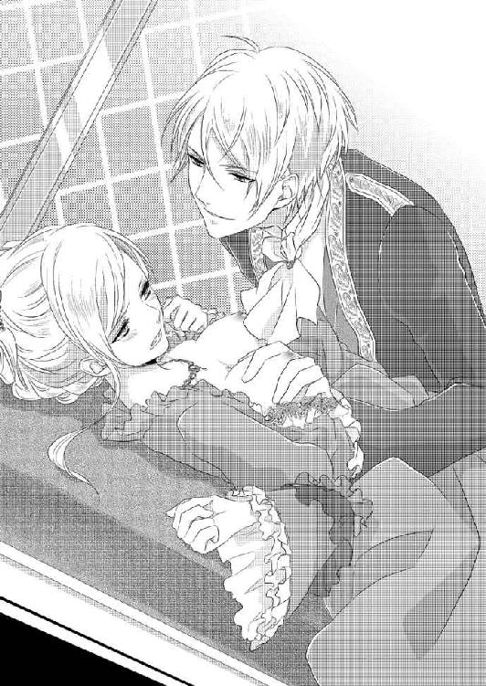
わたしは、これを欲している？ 嘘よ。そんなはず......！
アナは慄然とした。呆然とフランツを見上げる。不誠実なことを平気でするこの彼を？ わたしに言ったのと同じことをアガサにも告げていた。きっとほかの誰かにも！
なんとかこの場を逃れなくては。身体の欲求に屈する前に。
ようやく理性が戻ってきて、懸命に抵抗し始めたアナに、フランツが困惑している。
「どうしてあらがうのです？ こんなに感じているのに」
抑えきれなくなったのか、あるいは証拠を見せようとしたのか、フランツがドロワーズの中に差し入れていた手を抜き出した。指先が濡れている。
羞恥で身の置き所がない気分だ。そしてこんな恥ずかしい思いをさせるフランツを強く恨んだ。誰でもいいのなら、わたしに手を出したりしないで！
そんな気持ちで睨み上げる。涙に濡れた瞳で睨んだとて、フランツにとってはかえって誘惑の焔となり、牽制の役にはちっとも立たないとは、アナの与り知らぬこと。
そのタイミングで、折よくというか、折悪しくというか、アルコーブの入り口カーテンの向こう側から声がかかり、アナは凍りついたように動きを止めた。先ほどフランツがアガサの警護を命じたクラウスだ。
「殿下、アガサ公女がアナ公女を探しておられます。間もなくこちらに来られるでしょう」
フランツは舌打ちした。
「わかった。少しだけ時間をくれ」
「お早く」
大きくため息をついたフランツは、押し倒していたアナを抱え起こした。肩に額を押しつけてくる。抵抗するアナの手を取り自らの股間に押しつけた。逞しいモノがどくどくと脈打っている。びくっと身をすくめ、必死になって手を引き抜く。
「最悪だ。こんな状態で放り出されてどうしろと......」
恨みがましくアナを見たあと、再びため息を零し、フランツはまずアナの身なりを整えていく。我が身よりもアナを優先するところが、フランツなりの好意の表し方なのだが、残念ながらアナにはわからない。両手を握り締め、どうしていいかわからずただ放心していた。
その間にフランツは、胸のレースを引き上げて剥き出しだったその部分を覆い、外した後ろ側のボタンを留める。髪の毛も、ほつれ毛を綺麗にかき上げ、わからないように撫でつけてくれた。
「これでよし。元どおりです。その火照った頬の赤味さえなければ、ここで今起こったことはなかったことで通せますよ」
呆然としていたアナはその言葉で我に返り、身体に回されていた腕を勢いよく振り払う。勢い余って半回転しよろけた身体を、フランツが危うく抱き留めてくれた。さもなければみっともないことになるところだった。
「いやよ、もう。放して、放して......」
アナは身悶えしてフランツの手を押し退ける。身体の奥ではまだ熱が燻っていて、フランツに触れられるとそれがかき立てられてしまう。とにかく彼から離れたい。そうでなければ、はしたなくも、自分から縋りついてなんとかしてと懇願してしまいそうなのだ。
もちろんフランツはアナがそんな状況なのを知らない。
「冷たいな。さっきまであんなに可愛く喘いでいたのに」
冗談めかして耳許で恨み言を囁かれた。その息にすらぞくりとする。
アナは歯を食い縛り腕を突っ張った。こうすると腕の長さの分だけフランツから逃れられる。
「そんなに邪険にしなくても、あなたがちゃんと立てるのなら手を離しますよ」
嫌、ばかりを繰り返され、さすがにフランツも面白くなさそうだ。アナがしゃんと立つのを確かめるとすっと身を引いた。手を放されて一瞬だけよろめいたがなんとか立ち直り、フランツに背を向ける。
慎重に足を踏み出してみた。どこか頼りないが歩くことはできる。
身体の中心に灯された熱はまだ燻ってるし、アルコーブに追い詰めて自分をそんな状態に陥れたフランツへの怒りも滾っていた。何よりちょっと触られたくらいで言いなりになった自分が、一番悔しくて情けない。
とにかくここを出よう、と気持ちは逸りながらも足許が覚束ないので、慎重に動いて出入り口まで辿り着く。カーテンをかき分けたとき、ふと気になって振り返ると、フランツは長椅子に腰を下ろしてこちらを見ていた。
どうしてまだそこにいるのかと疑問に感じたのが顔に出たのだろうか。フランツはふっと笑い、意味ありげに言った。
「収まるまでは出て行けないのです。あなたも触ったからおわかりでしょうが、男は隠せませんから」
意味ありげに言われ、なんのこと？ と首を傾げたのは一瞬。真っ赤になったアナは、ぱっと顔を背け急いでその場を離れた。背後からフランツの楽しそうな含み笑いが追ってくる。
もうもうもうっ。
自分でも何に腹を立てているのかわからないほど頭に血が上った状態でアルコーブから出たアナは、何度か深呼吸して気を落ち着かせ、アガサを目探しした。
いた。十重二十重に囲まれて困惑した顔をしている。自分を見つけるとほっとしたような表情になり、周囲に詫びを告げこちらに向かってきた。アナ自身も姉の顔を見て波立っていた心がさらに収まりをみせる。
あとは今の出来事を気づかれないように細心の注意を払って、と胸に手を当てて自身に言い聞かせた。
「どこにいたの？ 探していたのよ」
アガサの方は少し青ざめて、縋りつきたそうな表情だ。もともと社交が苦手のアガサのフォローはアナがしていた。いざとなったら強さを発揮するアガサも、普段はとにかく人目に立ちたくない、隅に引っ込んでいたい性分だ。
公式行事で気を張っているから余計に、長時間の茶話会で疲弊したのだろう。しかも自分とは微妙な空気のままだし。頼れないと思ったらなお気疲れしたはずだ。
「アルコーブで休んでいたのよ。少し人に酔った気がして」
アガサの問いにそう答えると、
「あ、わたしもそうすればよかった。そうしたら少しは神経を休められたのに」
残念そうにアガサが言った。本当に疲れていたのだろう。申し訳ない気持ちが込み上げてきた。ここのところの自分は、公女の役目を放棄してアガサに全部押しつけていたから。反省し、でもそれとこれとは別だとアガサを諭す。
「駄目よ。わたしとアガサと二人していなくなったら、皆さん困るでしょ」
アガサは恨めしそうにアナを見た。
「今まで人に酔ったことなんてないじゃない。そんなにわたしのこと許せない？」
先日来の不仲が言わせた言葉だ。確かにアガサを恨む気持ちはあるが、原因は彼女ではなくてフランツなのだから、いい加減仲直りをすべきだろう。
「あら違うわ。本当に気分が悪かったのよ。アルコーブには長椅子があるから、凭れかかるにはちょうどよくて」
「ならいいけど。それでもう気分はいいの？」
納得すると今度はアナの体調を気にしてくる。じっと覗き込むようにして、
「顔が赤いわ。熱でもあるんじゃない？」
などと言うアガサに、アナは後ろめたい思いを味わう。本当にこの姉は、人がよくて優しい。それに比べて自分は......。
意識がついいましがたの出来事へと流れていく。熱いフランツの欲望。それに押し流されそうだった自分。手慣れた愛撫に全く抵抗できなかった......。それがまた悔しくて堪らない。
でもとにかく終わったことだ。身体の中に燻る熱も欲求も、なかったことにするわ。
強く決意し、アナはなんとか気分を奮い立たせる。
手を差し伸べて額に触ろうとしたアナからすっと身を引き、
「大丈夫よ」
と笑ってみせた。自分からアガサの肩を抱いて促す。
「熱なんてないわ。さ、二人で挨拶して回りましょ」
アガサを促して、二人で会場内を回る。自国の貴族たちには会釈し、リリエンタール側の招待客には微笑んで。
不協和音を奏でていた二人の友情は復活した。これまでだってそうだったし、これからもそうだろう。双子のシンパシーは些細な仲違いなど、すぐに吹き飛ばしてしまう。
ふと気がつくと、フランツも客の中を歩き回っていた。長身のさらに上を行く大男のクラウスを従えて。
アソコは収まったのだろうかと考えて、慌ててぶんぶんと首を振る。考えるなと自分に命じた。うっかり想像したら、ずるずるとすべての記憶が蘇ってしまう。
それからしばらくして茶話会は閉会となった。三々五々帰っていく招待客を見送ったあと、アナたちもフランツに見送られて会場をあとにする。
最後にそれぞれの手に別れの口づけを受けたが、意味ありげに下から見上げられ「また近いうちに」と言われて戦慄した。脅しのように聞こえたのだ。
庭園内の小道を歩いて戻りながら、あれはどういう意味だろうと考えていたアナは口数少なく、アガサがときおり心配そうに見ていたのには気がつかなかった。
「殿下、首都から密使が来ています」
茶話会の数日後、クラウスと剣の手合わせをしていたフランツの元に侍従長がやってきた。ほかのリリエンタール人と同じくこの侍従長も、王宮が占拠された中、決死の覚悟で抜け出して駆けつけてくれた男だ。
危険を冒し、父王が王宮の地下牢にいることを探り出して知らせてくれたのも彼だった。それまではあの混乱の中、死んだものと思われていたのだ。
生きていてくれてよかった、と単純に言えない状況にあるのがもどかしい。王の生存で、首都奪還は難しい局面を抱えることになってしまったのだ。
攻め入れば必ず敵は王を人質として利用するだろう。それを見殺しにしたら大義が立たないし、人々の支持を失いかねない。だがうまく救い出せるかどうかは微妙なところだ。親子の情からすればなんとしても助けたい。がそのせいで犠牲者が多く出るようでは困る。
フランツは、何人もの密偵を放って王の居所を確認させている。総力戦の前に救出する方法はないかと策を巡らせつつ。
剣を引き汗を拭いてから、フランツは密使を中庭に呼び入れた。クラウスがさりげなくフランツの斜め前に立つ。万一の危険に備えているのだ。密使が敵方に寝返っていた場合、この位置からだと素早くフランツと相手の間に割って入れるとの判断だ。
「リエラの市長が市の鍵を持ってやってきます」
フランツの前でうやうやしく膝を折って、男が報告してくる。
「市の鍵を......。よく持ち出せたな」
「市長も反乱者の側では生きた心地がしなかったようです」
市の鍵を渡すという行為には、その都市の命運を託すという意味がある。かつては征服された側が服従の証に渡していた。
「今反乱側の指揮官は誰だ」
フランツの問いに、男が答えた。
「ルツ公爵の息子です」
「ああ、あのふとっちょ」
「それと彼の兄弟たち。皆人望がないので恐怖で縛りつけていますが、櫛の歯が抜けるように味方が減っています。それがまた苛立たせるようで、些細な失策で処刑を命じているようです」
フランツは眉を寄せた。
「痛ましいな。一刻も早く首都を奪還しなければならないが。父上の居場所は特定できたか」
「いえ......」
密偵は気まずそうに俯いた。地下牢のどこかということはわかっているが、まだ位置を割り出せていない。宮殿下の地下牢は重層構造で、最地下などは地球の真ん中に届くと揶揄されているくらい深いのだ。
「責めているのではない。引き続き探索を頼む」
下がって休めと男に声をかけ、侍従長には飲み物や軽食を届けるように命じる。
クラウスと二人残されて、フランツは思案しながら顎を触る。
「おまえと互角に戦えるようになったのに、肝心の父上の居場所がわからないでは、総攻撃もかけにくいな」
床上げを果たしてから、少しずつ体力の回復を図ってきた。クラウスに手加減なしで相手をさせ、なんとか引き分けに持ち込むまでになっている。戦っている最中に息が切れることもほとんどなくなった。
今なら軍の指揮を執れる。手勢も十分集まっているし、一刻も早い進軍が望ましい。だがそこに父王の監禁という障害が立ち塞がった。
フランツは嘆息する。
「悩ましい。生きておられたと聞いたときには喜びしかなかったのだが」
油断してクーデターを起こされたり、失政も多いが、王としての覚悟だけはある人だ。なんとしても助け出したいが、最悪の場合の覚悟も......。
「まだ希望はあります」
「そうだな。ぎりぎりまであがいてみよう」
そこできっぱり頭を切り替えた。どうにもならないことをくよくよ考えても益はない。次の全体会議で決行の日が決まるから、そのとき改めて皆に諮ることにしよう。
クラウスを下がらせたフランツはシャワーを浴びに行く。
リリエンタールでは当然の設備だったが、ハイランドでは驚きの目で見られた。が基本原理を理解すると、便利なものだとあっという間に離宮内に設けられた。今王宮でも増設中だと聞く。すぐに一般にも普及していくのではないか。
隣国でも違うのだと当たり前のことに気がついた。逆にハイランドで普及していてリリエンタールにはないものもあるのではないか。
今は余裕がないが、国を取り戻したら調べさせようと、フランツは考えている。一番の理由は、「アナに不自由はさせたくない」からなのだが、相互に受け入れたらそれぞれの国の発展に役立つかもしれない。
国を超えて嫁ぐ王族の女性には、些細な風習の違いから溶け込めず生国を切望して生涯を送る者も多い。現にフランツの母もそうで、気鬱で引き籠もったまま亡くなった。
アナには絶対そんな寂しい一生を送らせるつもりはない。自分の愛情でくるみ込んで......。 そこまで考えて、フランツは苦笑した。
プロポーズするどころか、その前の、心を通わせるところで足踏み状態だ。アガサとアナを間違えたのだと伝えたら、それはそれでまた別種の怒りをかき立てることになってしまった。
これほど気持ちがすれ違うのも珍しい。
「先に身体から堕とすべきか」
呟いて、フランツは淫蕩な笑みを浮かべた。成算は十分ある。現に少し触れただけで、あの身体は反応したのだ。
頑なに拒絶されてこちらも意地になった部分はあるが、しかし茶話会の会場で、つまり公共の場所だったにもかかわらず、アナはこちらの愛撫で蕩けていた。甘い吐息を漏らし熱情に屈した彼女に煽られて、フランツまでが理性を飛ばしかけた。
危うくあの場で最後まで突き進むところだったのだ。
冷静に振り返ることのできる今からすれば、信じられない暴挙だ。万一誰かに踏み込まれていたら、とんでもない騒ぎに発展していただろう。
あのときはただアナに溺れ、降りかかる危険など無視してしまえた。欲しくて欲しくて頭がどうにかなりそうだった。彼女もそうだったはずだ。乙女なのに、あんなところまで男に許したのは、おそらくこちらに惹かれる想いがあったからだろう。
「これで相思相愛でないだと？」
フランツはふっと含み笑いを漏らした。
アナの拒絶は傷ついた気持ちの裏返しだ。言い換えれば、それだけ傷つくほど、自分に心があるということ。
だから手加減する気はない。すべてを手に入れ征服して、アナに覚悟を決めさせる。大公や周囲の理解は、自分がリリエンタールに復帰できれば得られるはずだ。頑ななアナの心を解すのも楽しみのうちと決めている。
シャワー室に着くと、侍従にかまうなと言い置いて中に入った。アナのことを思い浮かべただけで少し反応しかけているのだ。
シャワーを浴びながら、フランツは自身に触れた。脳裏にアナの肢体が蘇る。豊かな胸。鮮やかに色づいていた乳首、滑らかな肌。快楽に酔い半開きの唇からあえかな吐息を漏らしていた。そしてドロワーズの下の秘めた部分。
触れただけで見ることはできなかったが、ビロードのような恥毛の手触り、そしてたっぷりと蜜を蓄えた奥深い場所。
そこまで考えたとき、フランツはあっけなく達した自分自身に驚いた。
「早すぎるだろう」
思わずそうぼやいて、シャワーで洗い流す。脳裏ではまだアナの痴態が残影として残っていた。艶めかしく腰をくねらせていた彼女。見ることができたのは上半身、しかも胸周辺だけだが、それでも絹のような光沢のある肌だった。
着ていた服をすべて脱がせたときの裸体は、どれほど美しいだろうか。
とそこまで思念を巡らせたとき、フランツの欲望は再び力を取り戻していた。元気に猛っている自身を苦笑して見下ろす。
「この思いの丈を早く受け止めてもらわなければな」
そうだとでも言いたそうに、その部分の猛りが増す。
フランツはおもむろに自身を握り、二回目のフィニッシュに向けて手を動かすのだった。
「間違えていた、なんて！」
しゃあしゃあと言ってのけた相手に、アナはかっかと腹を立てていた。
「この国では誰一人間違ったりしないのよ。公務で出かけた先の、初対面の民だって、わたしとあなたをちゃんと区別して歓声を上げてくれるわ。それを！ 好きだという相手を見間違えてどうするの。その気持ちがどれだけ軽いかわかるってものよ」
二人の共通の居間で午後の日課である刺繍を続けながら、アナは捲し立てている。怒りのあまりぐっぐっと力を込めて針を刺していて、今にも穴が開いてしまいそう。せっかくの柔らかな布が駄目になるわ。
はらはらしながらも、アガサは妹の憤慨を黙って聞いていた。仲直りができたので、また拗らせることはやめようと決めているのだ。
だから、公国の民が自分たちを見分けるのは、幼いときから何度も絵姿が公開されて見慣れているからだとか、あのときフランツは意識を取り戻したばかりで判断力が鈍っていたなどと指摘することはしない。その代わり相槌も打たない。
言えばあの刺繍は、アナの憤慨で使えないものになってしまう。白いリネンに銀糸で刺繍しているのは可愛い天使の似姿。恵まれない母子へのプレゼント用だ。公女様のおくるみとしてとても喜ばれている。慈善活動は、彼女たちの大切な公務の一つなのだ。
アガサが控えめなのはいつものことなので、アナは気にせず持論を続ける。
「絶対に靡いたりしないわ。アガサもうっかり口車に乗せられては駄目よ」
口車というか、フランツが自分に言ったのは、間違えて申し訳ないというきちんとした謝罪と、アナへの気持ちだけなんだけど。
それを告げてもアナは納得しそうにないから、やはりこれも黙っておく。
その日の午後はなんとか一つ仕上がって、かえすがえす出来栄えを確認したアナが、ため息をついた。
「やっぱりアガサの方が綺麗よね」
お疲れでしょうとお茶を淹れてきたばあやに愚痴っている。
「そうですね、人には向き不向きがあるということでしょう」
ばあやにあっさりうなずかれて、アナはさらにがっくりした。
「そんなにはっきり言わなくても」
いじけてリネンの端を指で弄っている。アガサはくすりと笑った。
活発な妹はじっとしていることが苦手だ。義務だから取り組んでいるが刺繍などの女らしい仕事より、馬に乗ったり動き回ったりすることの方が好きなのだ。
「もういいわ。とにかくこれで終わったのね」
すぐに気持ちを切り替えたアナは、あとは自由にしてもいいでしょとばあやとアガサに確認を取ると、ぱっと楽しそうな顔になり馬に乗ってくると駆けだしていった。アガサも誘われたが、「一人で行ってらっしゃい」と送り出す。
乗馬の腕が違いすぎるから、自分がついていくと気持ちよく走らせたいアナの足手纏いになるのだ。アナが留守の間にしておくこともあるし。
「フランツ様にお知らせしておいて。アナが馬に乗りますって」
ばあやに使いを出すように言ってから、アガサはアナの残した刺繍を取り上げる。自分のと違って独創的な図案だ。でも仕上げが雑で。
「少し手を入れればとても素敵なものになるのに」
刺繍針を手にしたアガサに、ばあやがやれやれと首を振った。
「よろしいのですか？ 本来アナ様がきちんとなさることですよ」
「わたしはこういうことが好きで、アナは違うことが得意というだけよ。ばあやも言ったでしょ。人には向き不向きがあるって。それぞれが補い合えばいいの」
慰問に言った先でもアナは気さくに皆に話しかける。そして不満や困っていることを敏感に察し掬い上げるのだ。その後は自分とも話し合い、父大公に助言したり関係各所に話を通じたりして問題解決を目指す。よく気がつくものだと本当に感心する。
引っ込み思案な自分にはそんなことはできない。精いっぱい微笑みかけてはいるけれど、その場の空気にすっと溶け込むなんて、あれはアナだからこそできること。
「それでどうして、あちらの王子様にアナ様の乗馬をお知らせするのですか？」
わからないという顔をするばあやに、アガサはそっと微笑した。
「いいから、早く」
あんなふうにかっかとするくらいなら、アナにも満更でもない気持ちがあるはずなのだ。ちゃんと話し合えば......。
「うまくいけばいいけど」
呟きは静かな午後の日差しの中に消えていった。
離宮の背後の森には、乗馬コースが設けられている。馬場でしばらく飛越の練習をしたあとで、アナは厩番に告げた。
「遠乗りをしてくるわ」
「お待ちください、従者がいません」
見守っているだけだった厩番は慌てて止めたが、アナは「必要なくてよ」とにこりと笑って馬の向きを変えた。そのまま最初は速歩で、馬場を抜け森に入ると駈歩に変えた。森の中には乗馬道が作られているが、何が起こるかわからないので襲歩にはしない。
木漏れ日が心地よく、しばらくの間アナは深呼吸しながら緑の風を楽しんでいた。背後から蹄の音が聞こえてきたのは、泉に着いたときだ。こんこんと湧き出る清水を楽しむように、ほとりには休息用の四阿が設けられている。ときどきはここでピクニックも楽しんできた。
手綱を持ったまま振り向いたが、まだ誰かわからない。厩番が誰かに注進したのかも。
アナだって一人で村へ行こうとは思わない。でもここはいわゆる離宮の裏庭だ。慣れた場所でもあるし、一人でも問題ないはず。
と自分は考えたが、警備責任者の思惑は違うのだろう。仕方がない。おとなしく守られてあげようと覚悟を決めたときだった。木立の間から、漆黒の流麗な馬体がちらりと見えた。
「まあ、あの方だわ」
見覚えがある。フランツの愛馬だ。王宮から逃げ出した厩務員が、危険を冒してまで連れてきたらしい。慕われているのだろう。三男で王位を継ぐ立場ではないのに、兄たちより人望があったと聞く。そのせいで軋轢もあったとか。
「そんなこと、わたしには関係ないわ」
聞きたくないとそっぽを向きながら、密かに耳をそばだてている。そしてフランツに関することにどんどん詳しくなっていったのだ。
「ここにおられたのですか。危うく行き過ぎるところでした」
フランツがアナを認め足取りを緩めて、泉に通じる小道に踏み込んでくる。その言葉から、フランツが気軽に馬を走らせていたのではなく、自分のあとを追ってきたのだと知る。
なぜ？
単純な疑問がぐるぐるしている。
その間にフランツは軽快に馬を飛び降り、括りつけていたバスケットを下ろした。
「言づかってきました」
バスケットを軽く持ち上げて示したあと、四阿のテーブルに置く。しぶしぶ近寄っていった。
「あら、ワインとパン、冷製肉にトマトやハーブも」
「挟んで食べてくださいと厨房からの伝言です。それとこちらは紅茶も持ってきました。まだ温かいはずです」
テーブルに広げられては、一緒に席に着くしかない。お茶の時間をパスして乗馬を優先したから、実のところ空腹でもある。
おなかが空いたから、を言い訳に、フランツの隣に腰を下ろす。すると彼が、手早く材料をパンに挟み、ナプキンに包んで差し出してきたのには驚いた。王子という身分だから、すべて人任せで、何かを自らの手でするとは思わなかった。挟んだだけとはいえ。
見直しましたと言うのもちょっと変なので、小さな声で「ありがとう」と礼を言って受け取る。ワインより紅茶がいいと告げたら、保温容器に入れられていた紅茶をカップに注いでくれた。まさに至れり尽くせり。
真珠のような歯でかぶりつくと、ジューシーな肉の旨味がじわりと舌に染みた。
「おいしい」
思わず呟いて、全部食べてしまう。はしたなかったかしら、とちょっと気になったが、側にいるのは嫌いなフランツ。彼にどう思われてもかまわないでしょと自らに言い聞かせる。
食べ終えてナプキンで手を拭いていたら、お代わりはいかがですかと次のパンを差し出される。今度は野菜中心に具材が挟んである。断る理由もないので受け取り、今度は気をつけて上品に食べた。先ほどの食べ方が自分なりに気になったせいだ。
あ、これもおいしい。香辛料が効いている。
ふと顔を上げると、フランツの目がじっとこちらを見ていた。いや、凝視されている。
「なんですか？」
喉が詰まりそうになって、咎めるつもりでフランツを睨む。
「食べている唇が......」
「唇？」
何かついているのかと首を傾げ指で拭ったら、すっと近づいてきたフランツにその手を押し退けられ舌で唇を嘗められた。
「な......にをっ」
慌てて身を引いた拍子に、手にしていたパンが落ちていく。それを途中で受け止めたフランツの敏捷さに驚いた。
「どうぞ」
差し出されたので反射的に受け取る。そのまま呆然とフランツを見ていたら、
「誘っていますか？」
と再び顔が近づいてきた。
「ち、違います」
焦って否定して、でも今度は手にしたパンを落とさないように気を使いながら、用心深く彼と距離を置く。フランツがくすりと笑った。
どうしてわたしはここで彼と二人でいるのだろう。素朴な疑問が浮かんだのはそのときだ。彼が追いかけてきて、食べ物を持ってきてくれたから......。
「油断しましたね」
二度目のキスは、目を開いたまま。フランツはアナの手からパンを取り上げてテーブルに置き、本格的に抱き締めてきた。抵抗を思いつく前に、何度か唇をついばまれる。
「んっ、やっ」
顔を背けると、フランツが嘆息する。
「あなたは最初のキスには必ず嫌と言うのですね」
「最初も何も、あなたとキスをするつもりはないので、いつも嫌と言いますわ」
「そうでしたか？ 途中でもっとと言った記憶は？」
アナはぐっと詰まった。ないと言いたいが、実は記憶が曖昧なところがある。それをほのめかすフランツは、やはり嫌いだ。
きゅっと唇を引き結んで答えるのを拒んだが、今はフランツの腕の中、心臓がどきどきしているのは伝わってしまっただろう。
フランツが微笑する。
「そんな顔は、私には挑発しているとしか見えないのですが」
言いながらフランツの指が、不服そうに突き出している唇をつんとつついた。やめて、とアナは首を振る。
「一生懸命に逆らっているあなたは、本当に可愛い。可愛すぎて苛めたくなる」
「じ、冗談じゃないわ。わたし、おとなしく苛められたりなんかしません」
「そう？ でも男の腕には逆らえないでしょう。今も私に抱かれたままでいるし？」
からかうような言い方をされてカッとなる。この人はわたしを怒らせるのが本当にうまい。挑発されてすぐ乗ってしまう自分も悪いのだが。
腕の拘束から逃れようと、身体を捩る。引き離そうと突っ張ってもみた。あれもこれも駄目だったので、最後の手段とばかり靴先で思い切り脛を蹴ってやる。
「......っ、さすがにそれは反則ですよ」
フランツは苦笑し、ベンチにアナを押し倒した。
「こんなことをする気はなかったのですが、自衛手段ということで」
「何が自衛手段ですか、放して！」
腕を上げて肩を押したら、両手をとらえられ、掌に代わる代わる唇を押し当てられた。ぞくぞくする。きゅっと眉を寄せたのを見て、フランツが喉で笑う。
「感じましたか？ やはり敏感なのですね」
「ち、違います。気持ち悪くて悪寒がしているだけ......っあ、や、やめて、ン」
強気で言い返した語尾が艶声になったのは、両手を押さえつけられたまま、胸にキスをされたからだ。ただのキスではない。布地の上から歯を立てられやんわりと噛まれた。ずきんと腿の間が疼く。
いやいやと首を振るが、男の体重で圧し掛かられては身動きするのも難しい。
「嫌というわりに、乳首はピンと尖っていますよ。触ってほしいのかな」
「そんなことあるはずが......」
反論する間も、フランツは舌で乳首をくすぐった。何度も舐られると、布が唾液で濡れてくる。
「ほらレースの下に赤い実が見える。芯が通ってこりこりしていますよ」
濡れたせいで透けてしまった乳首を、フランツがぎゅっと押した。びりっと快感が走り、アナはなんとか口を閉じたままやり過ごしたが、耐えきれない吐息が我慢できず零れてしまう。
「艶めかしい。声を聞くより吐息の方がよほど......」
覆い被さったままフランツが耳許に息と声を吹き込んだ。そのまま耳を嘗められて、周囲の肌が粟立った。
四阿の中といっても屋根があるだけで四方は素通し、全くの野外だ。いつ誰が来るかわからない。こんなところを見られたら、ひどい噂を立てられるのは目に見えている。
頭の中ではわかっているのに、施される愛撫で、逃げようと動かしていた手足からどんどん力が抜けていく。なし崩しに抵抗する気持ちも薄れていった。残るのは淫らな疼きと喘ぎ声ばかり。
腕は一纏めにされ頭上で押さえられる。もう一方の手でフランツは胸を覆っていたレースを引き下ろした。
乳房が白日の下に晒される。風に嬲られて、それでなくても硬くなっていた乳首がきゅっと凝った。それをさらにフランツの指が押し潰す。痛いのにその下から快感が生まれてくる。片方を指で弄られ、もう片方は唇に含まれて強く吸われた。
「ああ......っ、あっ、んんっ」
強い快美がアナの全身を震わせる。堪らなかった。ここがどこかなど些細なことに思えてくる。そんなことを考える余裕もすぐになくなった。頭の中が快感で染め上げられていく。
いつ腕が自由になったのかわからない。気がつくとフランツの頭を抱え込んで、胸を突き出していた。代わる代わる嘗められ吸われ、指で弄られたり爪を立てられたり。何をされても気持ちがいい。
髪を乱しながら、アナは喘いだ。ぴったりと合わさった身体で、フランツも昂っているのが伝わってくる。彼は腰を卑猥に動かしながら、布越しに自分のモノを擦りつけてきた。深い官能的な呻き声が聞こえてきて、フランツも感じているのだと思うと、総毛立った。触れられたところすべてが疼いて堪らない。
腰をぐりぐりと押しつけられているが、実は一番それを擦りつけてほしい場所は、とても口では言えないところだ。疼きを少しでも和らげようと、腿を擦り合わせる。
それを察したらしいフランツが手を這わせてきたが、コルセットその他に阻まれて、上からの侵入は諦めたようだ。
「本当にこれは貞操帯だな」
ぼやいて、今度は直接下半身に触れてきた。スカートの上から腰などを触っていたが、もどかしくてアナが身動ぐと、裾を捲り上げる。
「可愛い膝だ」
ストッキングを穿いた膝を撫でられた。
「困ったな。こんなところでするつもりではなかったのだが。だめだ。止まらない。あなたのせいだ。どこまで深みに誘うつもりか」
誘ってなんかいないと言い返そうとしたのに、その前にフランツにキスされて、言葉を呑み込んだ。舌と舌を絡めるいやらしいキスが、ますます身体の熱を高めていく。
身体をずらしたフランツが膝にキスを落とす。その手が這い上がって、布越しに内股の際どいところをなぞった。けれど疼いているのはそこではない。無意識に腰をずらし、フランツの手を中心に誘導する。
「ん？ おねだりかな？ ここに触れてほしい？」
手が下着の中に入ってきて、ふっくらと盛り上がった場所を指で触られた。和毛に包まれた場所を何度も撫でたあと、試すように指が一本中に入ってくる。奥を探られると、じわりと華蜜が滲んだ。
「濡れてきた」
くちゃりと卑猥な水音がする。弄り回されて快感が広がった。ぞくぞくするモノが背骨を這い上がり産毛が逆立つ。じんと脳髄が痺れた。
「あ、や......、そこ、やめて。おかしく、なる......、やあっ」
「おかしくなればいい。私はあなたに出会ったときからおかしくなっている」
ドロワーズの紐を解かれ、引き下ろされる。敏感な内側の腿にフランツが口づけ、愛撫の痕を散らしていった。秘密の場所にも口づけられる。
「いやっ、あ、ああ、......んっ。そんな......、ところ、やめ......ン」
あられもない肢体を晒しているのはわかっていた。こんなことを許してはならないことも。胸は剥き出しで、スカートは捲り上げられ下着もずらされて。でも快楽に蕩けた身体ではどうしても抵抗できない。そうして無自覚な媚態に身体をくねらせ、フランツを淫らな罠に捕らえ続けていた。
「ここも綺麗だ」
フランツの息がかかり、秘めやかな場所が戦いた。何度も指を入れられかき回される秘裂の奥からは、次々に蜜が溢れてくる。二本目の指が挿入されてもほとんど痛みは感じなかった。それどころか、疼いて堪らないところをもっと強く刺激してほしい。
「すごいな。中がうねっている。いい子だ、ここの使い方をもう覚えたんだね」
奥を擦られて堪らない気持ちにさせられる。
もっとして。
唇が動いて言葉を綴る。潤んだ瞳がひたとフランツをとらえた。逞しい身体がぶるっと震える。
「これ以上、挑発しては駄目だ。本当に我慢できなくなる」
呻いたフランツは、いったんずり下げたドロワーズを引きあげ、剥き出しだった場所を隠してしまう。アナをぎゅっと抱き締め、腹部に額を押しつけてくぐもった声で訴えた。
「しばらくこのままで。じっとしていて」
いきなりすべての快感を止められ、アナも混乱した。続けてとフランツを揺さぶりたいほどなのだ。だが切羽詰まったようなその声に絆されて、我慢する。フランツが呼吸すると腹の辺りに生温い息がかかり、疼いて堪らないのだけれど。
やがてフランツが深く息を吐いて、顔を上げた。伸び上がってアナの髪を撫でながらチュッと口づけ、苦笑する。
「こんなに何度も寸止めを食らうとは。いや、場所を弁えずに襲いかかる私が悪いのだけれど、あなたは本当に私をおかしくさせる。自分の魅力をちゃんと自覚なさい。凄まじいまでの吸引力に逆らえる男なんていないのだから」
そう言ったあとでフランツはアナの手を取り自分の股間に当てさせた。ぱっと朱を散らして狼狽するアナを楽しそうに見る。
「今日は少しだけ協力してもらおうかな」
自身を取り出しながら悪戯っぽく言って、フランツはアナの両腿を閉じさせて、その間に己自身を挟み込んだ。ゆっくりと抜き差しをして腰を使い始める。
布で隔てられたとはいえ、男の熱量が敏感な場所に触れている。腿の間を行き来する男の熱に、アナ自身も快楽をかき立てられた。しばらく単調な抽挿が続き、やがてフランツはその動きを速めていった。いきなり彼自身が膨れ上がり、熱い液体を迸らせる。寸前に先端をハンカチで覆ったせいで、粘りのある白い液体が服を汚すことはなかったけれど。
そんなモノが出てくるのかとアナ自身はとても驚いた。
全力で駆け抜けたフランツはさすがに息を切らしていて、ドサリと身を投げかけてきた。狭いベンチの上でアナは彼の身体を受け止める。重みが心地よくてしばらくそのままでいた。
嫌いなこの人と関係を結ぶつもりはさらさらないのに、どうしてこうなってしまったのか。
フランツが腰を揺り動かしているとき、めくるめく陶酔の瞬間があった。ぎゅっと縋りついたから彼にも伝わっていただろう。心臓が早鐘のように鳴り、意識が遠くなりかけた。もしかしてあれが「イく」ということではないのか。
フランツによれば「まだ」処女だそうだから、はっきりとはわからないけれど。
慣れない運動に身体は疲れていたようだ。フランツを受け止めたまま少しの間微睡んだ。フランツが優しく髪を撫でてくれるのが心地いい。
「いつまでもこうしていたいのは山々だけど、そろそろ身支度を整えないと」
言いながらフランツは、甲斐甲斐しくアナの世話をやき始めた。胸許のレースを引き上げ、スカートの襞を整える。
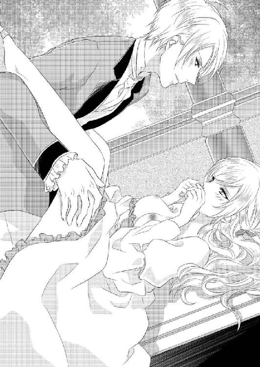
「次は絶対ベッドで......」
思わせぶりに囁かれ、
「そんな機会なんてありませんわ」
今の今まで喘いでいた声で、つんとフランツを拒絶する。至近距離でじっと見下ろされ、何か辛辣な言葉を浴びせられると覚悟したのに、フランツは居心地が悪くなるまでアナを凝視したあげく、にやりと淫蕩な笑みを浮かべただけだった。
「いや全く、あなたはことごとく私のツボをくすぐってくれる。一生退屈しないで済みそうだ」
いったい自分の何がフランツを刺激したのかわからず、アナはむっと唇を尖らせた。
「一生なんて、軽々しく使ってはいけません」
抗議したのに、あっさりと流される。
「軽く言ったつもりはありませんよ。ですがここでそれを議論しても、平行線のようだ。送りましょう。これ以上ゆっくりしていると捜索隊が派遣されかねない」
自分でできるというのに、起き上がるのも手を引かれ、馬に乗るときも手を添えてくれた。これではまるで、大切な女性をエスコートしているみたいではないか。
アガサと自分を間違えても平然としている軽い人なのに、そうされるとなんだか嬉しくて複雑だ。
その後もことあるごとにフランツはちょっかいを出してくる。アナは二人きりにならないように用心していたが、フランツの方も、人前での接触にとどめている節もあって、それはそれで面白くなかった。自分が避けるのは当たり前だが、どうして彼に避けられなくてはならないの！ という、アガサが聞いたら理不尽でしょとでも言いそうな怒りだ。
いったい自分はフランツをどうしたいのか、どうされたいのか。
自分でも自分の気持ちがわからず、アナの昏迷は深まるばかりだった。
第三章 王子の溢れる愛に蕩けて
午後のお茶を飲み終えた頃、ばあやがやってきた。
「門外に施しを求める者が集まってきているようです」
「あら、もうそんな時間？」
アガサが立ち上がって時間を確かめた。週に一度、離宮近くの貧しい人々が施しを求めてやってくる。公女たちがいるときはパンと温かいシチュウを手ずから配り、不在の時も家宰が手配していた。身分に伴う義務の一つだ。
二人はあっさりした服に着替え、頭からベールを被ると人々が待つ裏門に向かった。背後に食べ物を入れた器を持つ侍女たちを従えている。
途中、リリエンタール側に貸している中庭を横切ると、たまたま立ち会いをしていたフランツとその部下が目に入った。
歩きながらアナは、ちらちらとそちらに視線を向ける。気になるのはフランツだが、隣にいる一回り大きな人影にも興味を引かれた。確かクラウスといったわ、あの身体の大きな人。
フランツでさえ見上げるほどの背丈なのに、クラウスはそれより拳二つ分以上も身長がある。だがその彼との手合わせで、見た感じではフランツが優勢のように感じられた。
「まあ、フランツ王子はお強いのね」
でも感嘆するアガサの言葉を聞くと、素直にそれを認めることができない。
「相手は部下の方でしょ。手加減しているに決まっているわ。まさか自分の主人を打ち据えるなんてできないでしょうから」
「アナ」
アガサが困ったようにアナを制した。ちょうど打ち合いが一段落したところだったので、小さな声で喋ったはずが、大きく響いたのだ。フランツがこちらを見て苦笑している。聞こえたのだろう。
「いらっしゃるわよ」
アガサが、どうしましょうと焦ったように口走る。
つかつかと歩み寄ってくるフランツに、アナも動揺する。失礼なことを言ってしまったのだから謝らなくては。でもなんと言って？
意地でも頭は下げたくない気持ちがあるから、取りあえずは平静を装う。何か言われたら、そうしたら、そのときはちゃんと......。
「ごきげんよう、公女様方。こんな時間にどちらへ？」
ところがフランツは、アナの失言など聞こえなかったように、愛想よく声をかけてきた。
レースの襟がついた白いシャツの前が大きく開いて、逞しい胸が見えている。肩幅があるのに腰はぎゅっと締まり、ぴったりしたズボンが張り詰めた筋肉を露わにしていた。
剣を交えていたせいか汗をかいていて、髪をかき上げる仕草がひどく男っぽい。近くまで来ると運動したあとの熱気が伝わってきた。汗の匂いも。
アナは我知らずこくんと喉を鳴らしていた。フランツの男性美に、彼女の中の女性性が反応したのだ。性的にまだ未熟なアナ自身にはその自覚はなかったが。
視線が合うと、フランツの眼差しの中に愉快そうな光が踊っているのが伝わってきた。
馬鹿にして。
理由もなくそんなふうに感じてしまい、アナはぷいと顔を背ける。アガサがおろおろしているのに、
「早く行きましょう」
かまわず腕を引っ張った。
「今日は慈善の日なのです」
手を引かれながら振り返って説明したアガサに、フランツは「ああ」とうなずいた。背後に従う侍女たちを見て納得したのだろう。
「私も手伝いましょう」
フランツはクラウスが差し出した上着をラフにはおり、重そうに下げている侍女から鍋を一つ受け取った。
「クラウス」
彼の呼びかけで、クラウスも侍女から鍋を引き取り、彼の場合は両手に軽々と提げて従ってくる。
裏門の外には大勢の貧しい人々が押しかけていた。門衛がアナたちを見て閉ざしていた門を大きく開ける。門扉が開いても雪崩れ込んだりはせず、人々は辛抱強く待っていた。彼らを見るたびにアナは我慢強い人たちだと感心する。
こうした貧困層が存在するのは、国として恥ずかしいことだ。政策が機能していないということだから。
無論父大公らが努力していないわけではない。産業を興したり、観光を誘致したり、農畜産業に補助金を出したりして国を富ませようと頑張っている。それでも、貧しい人たちが完全にいなくなることはないのだ。
公女としてアナたちができるのは、週に一度の慈善の日に、せめておなかいっぱい食べてもらうこと。だからいつも余るほど食べ物を用意する。
それを知っているから、集まった人たちも他人を押し退けたりせず順番を待てるのだ。ちゃんと自分の分もあるとわかっているから。そして何杯でもお代わりができると知っているから。
門の外に台を据え平べったい器の蓋を開けると、焼きたてのパンの香ばしい香りが漂った。続いて別の鍋の蓋も取る。こちらには具だくさんのシチュウが入っていた。
器を持った人々が並び始める。左右に別れたアナとアガサの前に長い列ができた。人々は公女からシチュウを注いでもらい、中央の侍女からパンを受け取って列を離れる。
フランツたちは運び終わったあともその場に残り、空になった鍋を下げては次の鍋を台に上げたりして力仕事を手伝ってくれた。重量があるので、いつもなら侍女が二人がかりでやる作業を、さすがに彼らは一人でこなす。かなり時間の節約になって、助かった。
途中でアナとアガサは困惑の目配せを送り合う。
『なんだか今日はいつもより多いみたいね』
『足りるかしら』
双子ゆえのシンパシーがあるから、視線一つでこれくらいの意思疎通はできる。
『厨房へ誰かを行かせた方がいいかも』
『でも、何もないわよ。全部持ってきたから』
公女たちの目配せ、そして鍋の減りようから察したのだろう、フランツが声をかけてきた。
「うちの料理人のところに取りに行かせましょう。何かはあるはず」
「ありがとうございます」
アガサがポッと頬を染めて礼を言った。アナは言わないだろうと気を使ったのだ。その上擦った声に、侍女たちが訳知り顔を見せる。彼女たちの間では、アガサとフランツはとうの昔にカップル認定されているのだ。アナはなんとなく面白くない。
フランツがクラウスを使いにやった。クラウスは外の群衆を見て心配そうな顔をしていたが、フランツの「大丈夫だ」に急き立てられて走っていく。
アナはクラウスが何を懸念していたのかと周囲を眺めやった。あたりにはいつもの慈善の日と同じ光景が広がっているだけ。特に変事の気配は感じられない。
それにしてもなぜフランツはこんなに自分の近くにいるのかしら。先ほどよりずっと近づいている気がする。彼の存在を意識すると、挙動不審になってしまうのに。
今も、鍋を入れ替えるときに手が触れそうになって、慌てて避けた。そのせいでシチュウの入った鍋が揺れ、危うくひっくり返すところだった。なんとか回避できたけれど。
アガサの方に行けばいいのに、どうせカップルだと思われているんだから。
実際に彼がアガサの側に立っていたら複雑な気持ちになっただろうに、八つ当たりめいてそんなふうに考えてしまうアナだった。
フランツの存在に苛立ちながらもなんとか頑張って笑顔をキープし、振る舞いを続ける。ただ追加の食べ物が届くまで、注ぎ分けるスピードをゆっくりにした。途中でなくなったりしたら、困ったことになる。早く何か届けばいいのだが。
とそのときだ。並んでいる人々の間にざわめきが起こった。真ん中辺りで列が不自然に揺れている。悲鳴と怒号が響き、フランツが緊張を漂わせながら伸び上がって騒ぎの元を確かめた。
「まずい！ アナ、後ろに下がって。アガサ、あなたもだ。早くっ」
いきなり名前を呼び捨てにされ、乱暴に腕を引かれて、背後に押しやられる。舌打ちして「クラウスを行かせるのではなかった」と言うフランツの言葉を聞いたときには、目の前に刃物を持った暴漢が迫っていた。覆面で顔を隠した男が躍りかかってきたのを、フランツは手近の棒を掴んではっしと受け止める。
侍女たちの間から甲高い悲鳴が上がり、逃げ惑った。それが邪魔になって、フランツが苦戦している。皆を守ろうとして守勢になってしまうのだ。門衛が駆けつけて、侍女たちを誘導し始める。アナとアガサも「早く」と急かされた。
自分たちがいてはフランツの足手纏いになるのはわかっていても、見捨てるようで足取りが鈍る。それでなくても刃物と棒では分が悪いというのに。
そうよ、フランツの剣は！ クラウスと立ち会いをした直後にこちらに来たから、手に持っていたはず。気がついてアナが目探しすると、台の横に立てかけてある。手伝いをする間そこに置いたらしい。
「剣よ！」
駆け寄って剣を掴み、叫んだ。棒で鋭い刃を受け止め、至近距離に迫った暴漢の腹を蹴って押し退けたフランツが、まるで背後でアナがしていることがわかるかのように右手をあげた。アナが鞘ごと剣を投げる。
はっしと受け止めたフランツは、素早く剣を抜き放つと、躍りかかってきた暴漢の手から刃を弾き飛ばした。ほっとする間もなく、フランツが顔を上げて前方を睨む。馬の蹄の音だ。
「来る！」
暴漢は一人ではなかった。正面から襲いかかってきたその男のほかにも、別の暴漢数人が馬で乗り込んできた。皆覆面をして顔を隠している。
門衛や駆けつけてきた護衛に守られて、門の内側に避難しようとしていたアガサとアナが襲われた。フランツ自身にも、別の手練れが向かってくる。
「いやあっ、放して」
アガサが馬上から腕を掴まれた。アナが飛びついてアガサを引き戻す。周囲では味方と敵が入り交じって戦っていた。アナはアガサを引っ張って、離宮に駆け戻ろうとする。
だがそこに馬が回り込んできた。アナはアガサを背後に庇う。
「無礼者！」
「放して！」
悲鳴と怒声。アナはなんとかアガサを守ろうとし、アガサもアナを庇おうとする。だが二人とも非力だった。武器もなく抵抗は儚いものになってしまう。最初にアガサが、そしてアナが、馬上に引き上げられた。ジタバタと精いっぱい暴れるが、拘束する男たちの力は強かった。
離宮警備の騎士たちが駆けつけてきたときには、アガサとアナを乗せたそれぞれの馬たちが逃げ去ろうとしていた。剣を抜き払った騎士たちが周囲を取り囲んで行かせまいとする。馬上の敵が舌打ちした。
馬を宥めて頭上を跳び越えさせようと男が身構えたとき、ようやくフランツが目前の敵を倒して助けにやってきた。彼は躊躇せず馬に斬りつける。騎士たちが躊躇うのを叱りつけた。
「馬を攻撃するのを躊躇って公女を奪われるつもりかっ。馬と公女とどちらが大事だ！」
その叱咤で騎士たちが奮い立つ。一斉に斬りかけられて、驚いた馬が竿立ちになりかけたのを、遅ればせながら騒ぎを聞いて飛んできたクラウスが、頭絡を掴み強力で引き止めた。
馬は激しく鼻を鳴らしながら自由になろうと頭を振り立てるが、クラウスも手足に太い筋を浮き上がらせながら全力で押さえ込む。数人の騎士たちも反対側から手綱を掴んで加勢した。
フランツが体勢の崩れた男を引きずり下ろす。その間アナは必死でたてがみにしがみついていたが、ついに男の落馬に引きずられ仰向けに落ちていった。
「アナ！」
フランツが、かろうじて受け止める。衝撃で二人してその場に倒れ込みながら、フランツが狂おしい眼差しでアナを確かめる。
「怪我は！」
切羽詰まった声に、アナはなんとか首を振る。が次の瞬間、はっと顔を上げ姉を探した。
「アガサが！」
フランツもさっと振り向いた。騎士たちの頭上を跳び越えて、アガサを拉致した男が逃げるところだった。
「ここにいて！」
アナの肩を強く押さえ、クラウスを呼んで彼女を守るように命じると、フランツは馬に飛び乗って追いかけた。騎士たちも襲撃者たちを撃退し、馬を分捕りあとに続く。
アガサを乗せた暴漢は、集まった民衆を容赦なく馬で蹴散らして逃げていく。だが悲鳴を上げて逃げ惑っていた民衆の中からも、公女の危機に立ち向かう者が現れた。駆け去ろうとする馬の足許に、次々に障害物が投げ込まれ、馬が足取りを乱す。
「俺たちの公女様だ」
「返せ！」
叫びながら数の力で取り囲む。おかげでフランツや騎士たちが追いつけたのだ。
クラウスや残った騎士たちに守られながら、祈る思いで追跡劇を見守っていたアナの前で、先回りしたフランツと、背後から追走した騎士たち、それに石や棒や手近の得物を手に取り囲んだ民衆とに囲まれて、とうとう襲撃者がギブアップした。
馬を止め、降参すると叫んでいる。
ほっとした空気が流れたその瞬間、暴漢はいきなり抱えていたアガサを突き落とした。
「きゃーっ」
アガサ自身も、そしてこちらで見守っていたアナの口からも悲鳴が迸る。その他の騎士たち、群衆もてんでに何やら叫んでいる。誰もがアガサが大怪我をするか、最悪の場合は死ぬ、と覚悟した。
そのとき、またしてもフランツが、信じられない速さで馬を飛び降り救いの手を差し伸べる。
懸命に伸ばした腕の中にドサリとアガサが落ちてきた。フランツは、自らはその場に倒れながら、アガサの身体を抱きかかえる。衝撃でひどく背中を打ちつけ息が止まりそうになったが、それでもアガサの身体は放さなかった。
「くそう、おまえの大事な者を奪ってやるからな！」
アガサを振り落とした男は捨て台詞を残して駆け去っていく。
「フランツ様」
しばらく動けなかったフランツの周りに騎士たちが集まり、アガサを抱え起こし、続いてフランツも数人の介添えを得てなんとか身体を起こした。
その間に男は逃げてしまったが、襲撃者の何人かは捕らえることができた。
彼らは離宮の習慣を調べ、慈善の日には門扉が開いてつけ込みやすくなると知って襲ってきたようだ。
捨て台詞を残した男は顔を隠していたが、どうも背格好や声に覚えがある。叔父の血縁者の誰かに違いないとフランツは確信した。となれば狙われたのは自分。公女たちを拉致しようとしたのは、彼女らを人質に自分を誘き出すためだったのだろう。
走ってきたクラウスが、その場に膝をつき悲痛な顔で見上げてくる。
「お怪我は......？」
「大事ない。打ち身だけだ」
断言してもクラウスの顔からは憂いが去らない。クラウスだけでなく、心配顔で集まってきた民衆にも平気だと見せなければ。無理を承知で立ち上がり、手を振る。
「諸君、感謝する。諸君のおかげで公女方は無事だ」
フランツが声を張り上げる。よく通る声だった。わあっと歓声が上がる。一人一人は力のない庶民が、自分たちの公女を守ろうと団結した。彼らの力がなければ、アガサは連れ去られていただろう。
アガサが左右から支えられながらフランツの側に立つ。
「皆、ありがとう。わたしはあなたがたと、そしてリリエンタールの王子フランツ様のおかげで拉致を免れました。本当にありがとう」
アガサの言葉で、「公女万歳」と「フランツ王子万歳」の声がいつまでも木霊したのだった。
事件後、離宮の危険性がクローズアップされた。捕虜たちを厳しく尋問した結果、離宮の地図まで手に入れていることがわかったのだ。これではいつ侵入されて寝首をかかれるか、わかったものではない。
ハイランドの特使や警備責任者、フランツ及び側近たちが話し合い、公女たちは直ちに首都に帰還することになった。
「渓谷と急峻な山に隔てられているからと油断した」
フランツにすれば痛恨の出来事だ。大部隊での進軍は難しくても、今回のような小規模の襲撃は可能だと認識していなければならなかった。またハイランド側も、リリエンタールの王子を受け入れているのに、襲撃の危険性を過小評価していたと反省しきりだった。
公女が無事だったこと、身を挺して救出したのがフランツだったことで、ハイランド側から非難の言葉はなかった。とはいえ、こうした事態がまた起きないという保証はない。国境警備隊を増派して守りを固めようというハイランド側から申し出に、フランツは首を振り宣言した。
「近日中に帰国するので、その配慮は無用」
「殿下！ しかしそれは......」
「お父上の救出が」
味方から異論が噴き出すのを目で抑えたフランツは、どこかほっとした気配のハイランド側に再度明言した。
「準備が整い次第、出発する。ハイランドの諸君には、これまでの好意を心から感謝する」
「必要なことはなんでもお申し付けください」
特使が気を使った言い方をする。奪還に向けて動き出すのは歓迎しても、フランツがこれまで逡巡していたのは、父王を救う手段を模索していたせいだと知っているので複雑なのだろう。救出の目処が立たないままの出撃は、父王の死を招きかねない。
「お気遣いは大変ありがたい。幾つかお願いしたいことがあるが、それは実務者同士で話し合わせよう」
「兵站部に話を通しておきます。存分にご利用あれ」
会議のあと、フランツは公女たちへ挨拶に向かった。
離宮の半分、公女たちの住まいは首都帰還の準備でごった返していた。そんな中、居間に通されたフランツは、心配そうなアガサに軽く会釈し、こんなときでも意地を張って強張った顔を崩せないでいるアナに視線を向ける。
「もう聞かれたでしょうが、リリエンタールへ帰還します。これまで本当にお世話をおかけしました。大公殿下にはよしなにお伝えを。首都まで往復していては時機を外すので、伝言で申し訳ないのだが」
「わたしたち、何もできなくて。ご武運を......」
アガサが言いかけたのをアナが乱暴に遮った。
「お父様はどうなさるの。そのために今まで攻撃を遅らせてきたのでしょう？ ここで急がなくても......」
怒ったような口ぶりだ。傍から聞けば非難しているとも受け取れる。だが、両脇できゅっと小さな拳を握っているのを見れば、本当はこちらを心配しているのだと伝わってきた。
これまでのつき合いでフランツにも、アナがなかなか本音を言えない性格だとわかってきている。彼女の本心は口からではなくボディランゲージで読み取らなければならない。
「確かに父のことは気がかりですが、それよりももっと我が民のことが心配です。反乱者らの気まぐれで獄へ繋がれている者も多いようです。遅延すればするほど、犠牲が増えます」
「でも、だからと言ってお父様を見殺しにするなんて......」
「アナ！」
アガサが慌てて窘めた。アナは言いすぎたと自分でも思ったのだろう。唇を噛んでいる。
こんなときだというのに、フランツは可愛いと思ってしまった。一生懸命こちらの身を案じてくれている。時間があれば頑ななアナの心を根本から蕩かして、すべて我がものにできるのに。だが、こんなときだからこそ出会えたのだともいえる。
これから始まる戦いで万一のことがないとも限らない。できればその前に気持ちを確かめ合っておきたかったが、仕方がない。とにかく国を取り戻すことが先決だ。そのあとでもう一度アナを口説くことにしよう。
「では、これで」
一礼して暇乞いをしようとしたら、アガサが「待って」と呼び止めた。
「何か？」
「あの、その......」
アナはそっぽを向き、アガサはおろおろとそんな彼女と自分を代わる代わる見ている。アナはきゅっと口を噤んで、意地でも開かないわと示している。気にしてくれるアガサの好意はありがたいが、今アナの心を解きほぐす時間はない。
「御用がなければ」
「あります！ ありますわ。わたしたち、離宮をあとにするときはいつもお別れの晩餐会を開きますの。今回はあなたへの壮行会を兼ねて、明日開催します。ぜひご参加ください」
言い切ったアガサに、アナが目を丸くしている。居合わせた侍女たちも、寝耳に水なのだろう。唖然とした表情だ。
この場でアガサが苦しまぎれに出した案。すべてアナと自分を心配してくれたゆえだ。だが帰還の準備で慌ただしい中、しかも明日開くとなれば、かなりの負担になるだろう。料理などの準備は間に合うのか。ここは謝辞を告げつつ断るべきだろう。
「しかし壮行会となれば、私が国へ帰ると宣伝することになります。お気持ちはありがたいのですが、それはちょっと困りますので......」
フランツはそんな言い方でやんわり辞退し、気持ちは嬉しいですと微笑んだ。
「あ、だったら名目はお別れ会で。心は壮行会に。急なことですから、それほど豪華にはできないと思いますけれど、皆であなたのご武運をお祈りしたいのです」
アガサが必死で目に願いを込めて目配せしてくる。これで断ったら、逆に気持ちを傷つけることになりそうだ。受けることにした。
「そういうことでしたら喜んで」
優雅に一礼して、公女たちの前を去る。
自分たちが借りている片翼に戻りながら、クラウスがそっと尋ねてきた。
「殿下は招かれた席でアナ公女をダンスに誘われるのですか？」
「いけないか？ 下手をしたら最後になるかもしれないのだ。最初のダンスは当然彼女と踊りたい」
「不吉なことは言わないでください。殿下は必ず勝利なさいます」
クラウスが強い調子で言い返した。この忠義な男は、もしものことなど考えたくもないのだろう。
「私だって失敗するとは考えていないさ。それでも万が一ということはある」
クラウスはしばらく黙っていたが、嘆息して話を続けた。
「わたしは襲撃者の言い残した言葉が気になるのです」
「『おまえの大事な者を奪ってやる』か？ あんなのはただの捨て台詞だ」
「ですが、捕らえた者から聞いた話では、逃げたのは反乱軍の領袖の一人ですよ。そのまま帰ったら責任を問われるでしょうから、どこかに潜んでチャンスを狙っているかもしれません。もし殿下がアナ公女を優先なさったら、公女こそあなたの大切な人だとわかる可能性があります。戦場で身動き取れない間にあの方に危機が迫ったらどうなさるのです？」
「脅すな。戦いに行きたくなくなるじゃないか」
フランツは軽い調子で言ってのける。油断は禁物とわかっているが、たかがダンスではないか。取り合おうとしないフランツに、それでもクラウスは忠告した。
「この度はご自重ください」
「わかった。考えよう」
不満はあったが、頭から否定せずにうなずきクラウスを下がらせた。一人で部屋に籠もり、これからの作戦に遺漏はないか反芻する。今回は奇襲作戦を取ることになっている。拠点づくりのため、すでに一部はリリエンタールに向かっていた。
川を遡ればある程度までは隠密行動が取れるが、上陸後は一気に攻めなければならない。そのためには、場所を決め、あらかじめ物資を運んで蓄積しておく必要がある。設ける拠点はできるだけ首都に近い方がいいが、といって易々と見つかるところではまずい。
資材、武器弾薬、馬に馬車、船。運ぶものはほぼ調達済みだ。ほんの少量、ハイランドの顔を立てる形で融通してもらうことにしている。恩は受けたくないが、事後のことを考えると、こちら側が辞を低くしておく必要があった。
そんなことに考えを巡らせながら、夕食も部屋に運ばせた。一人で黙々とたいらげ、シャワーを済ませて窓際に立つ。夜風が気持ちいい。
クラウスの忠告は心に留めている。明日、アナをダンスに誘うかどうかは、もう少し考えてみよう。だが今夜は......。
佇んだまま少し迷い、やはり行こうと決心した。行かないで悔やむより、行って悔やむ方がましだ。
辺りが静まり返るのを待って、フランツは部屋を出る。アナの部屋がどこにあるか、すでに知っている。丈夫な蔦を掴んで木に登り、バルコニーに飛び移った。ほとんど音を立てない素早い動きだ。バルコニーからするりと部屋に入る。鍵がかかっていない。
「不用心だな」
忍び込んだ当人が眉を寄せる。建物の外での警備が厳重なので、中までは注意が行き届かなかったか。しかし妙齢の公女の部屋だぞ。敵でなくても忍び込んでくる不逞の輩がいたらどうするんだ。
「私のように」
ついにやりと笑ってしまう。足を忍ばせてベッドルームに向かった。
静かにドアを開けると天蓋つきのベッドが見えた。周囲にはレースのカーテンが下りているが、寝ているのはアナ公女のはず。
つかつかと近づいていき、カーテンをかき分けた。豊かな金色の巻き毛が枕の上に広がっている。色白の整った顔、優美な眉、ほっそりとした鼻、ふくよかな唇、そしてピンク色の頬。
まさにゴージャスな眠り姫だ。双子で顔は同じなのに、アガサには惹かれずアナに一目惚れしたのはどうしてなのか、とフランツ自身不思議に思う。
性格や普段の言動、それに助けてもらったときの感謝の念？
理由はなんであれ自分が今、この公女に惹かれているのは確かだ。攫って連れていきたいと願うほど。
フランツはベッドに腰をかけ、艶やかな金髪を優しく撫でた。
「精いっぱい突っ張るところも可愛いし」
髪をかき上げ、露わになった額に口づけた。それから顔のあちこちにキスを落とす。その一方で、夜着の襟許のリボンを解いた。指で喉許をくすぐる。いつ目覚めるかと内心でわくわくしながら。
最初はくすぐったいという感触だった。首筋がスースーする。と、なんだか柔らかいものが顔に触れた。
熟睡していたアナは、ゆっくりと眠りから引き戻される。それを待っていたかのように唇を塞がれた。ぬるっとしたものに嘗められその感触にぱっと目を開けると、キスをされている！
不埒なキスを仕掛けていたのはフランツだった。
「んっ、んんっ、んーっ」
どうして彼がここに、と顔を振って逃れようとしたが、顎をとらえられ逃げられない。唇を嘗められ、舌で合わせ目をくすぐられた。歯を食い縛っていたら、僅かに放した唇で「挿れてくれないの？」と甘く囁かれ、背筋がぞくぞくするような色気のある眼差しで誘われる。
とんでもない、と口をぎゅっと噤んだまま首を振った。フランツがくすりと笑う。
「つれないね」
「な、何をしにいらしたのですか」
彼が離れたのを幸い上半身を起こし、襟許を握ってフランツを睨む。
「ん？ 夜這い」
聞いた途端激しく後ろに身を引いた。しかも言ったフランツはその場で服を脱ぎ始めている。上着とシャツをあっさりと取り払った下から現れたのは、逞しい胸。肩から胸に、うっすらと傷跡が残っているのも、雄々しく感じられた。さらに下衣の衣服に手をかけるのを見て、慌てて顔を逸らしさらに逃れようとしたアナに、
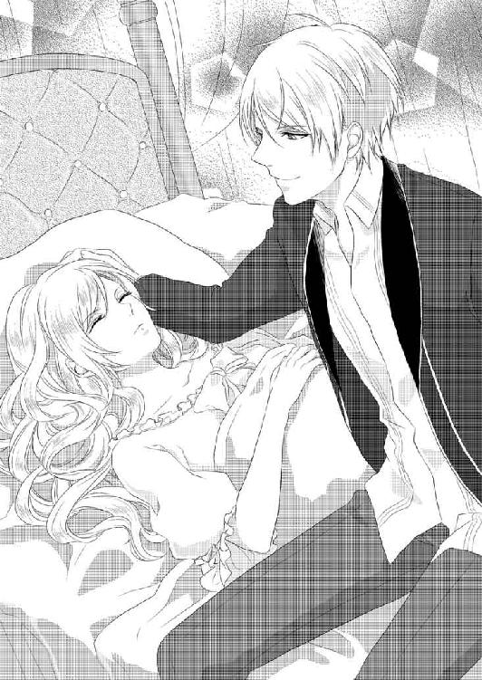
「そんなに嫌わなくても。......男の裸は見たことない？」
慌ててぶんぶんと首を振るとフランツがくすりと笑い、伸ばした指で唇をなぞられた。
「そう、よかった」
何がよかったのか、さっぱりわからない。
触れられた唇がやんわりと熱を持つ。指は掌になり優しく頬を撫でられた。心地よさに一瞬目を閉じそうになって、慌てて首を振る。
駄目、今度こそ絶対に感じたりしないわ。夜這いだなんて失礼なことをされているのに。
アナは自らに言い聞かせる。
これまでフランツに言い寄られ、巧みなやり方で陥落させられてきた。淫らな様を晒すなんて、結婚もしていない男女であってはならないことだ。
そう固く決心しているのに、頬から首筋に移動するフランツの手を拒めない。近づいてきた唇も。触れられたところから快楽の焔がちろちろと燃え始めた。
襟許を強く握っていたはずなのに、ふっと息を吹きかけられると、強張った指から力が抜けていく。いつの間にか夜着の紐を緩められ、開いた襟からフランツの手が侵入してきた。喉を嘗められ、やんわりと歯を立てられて喘ぐ。
どうして抵抗できないのか、自分でもわからない。
フランツの唇が喉を彷徨っている。ときおり強く吸われて痛みが走った。手が薄い夜着をずり下ろして乳房に触れる。乳首を摘まれて「あ......ん」などと恥ずかしい声を上げてしまう。
「可愛い......」
フランツがぎゅっと抱き締めてきた。男の逞しい胸に包まれ、身体中がざわつく。喉から鎖骨、胸、腋下、脇腹と、フランツの手が触れていった。そのたびに湧き起こる愉悦を、アナは嫌だと呟きながら甘受する。
これはいけないこと、と頑固に理性が主張しても、膨らんでいく快感はアナの抵抗をなし崩しにした。そして中途半端なあらがいはかえってフランツの雄をかき立て、着ている薄い夜着にそそられると耳語される。腰を押しつけられ、成長しきった熱い塊が脈打っているのを直に感じてぞくりとした。
どうしようもなくて固まっているのに、フランツは含み笑いを漏らすとどんどん先に進んでいく。「待って」も「やめて」も喘ぎ声の中に溶けていった。
フランツはさらに夜着を引き下ろし、滑らかな腹を露わにする。手で下腹を撫で擦りながら、乳首を含み吸い上げられた。
「ああっ」
堪らず背筋を引き攣らせて仰け反った。硬く凝った先端を嘗め回され、吸われる。さらにやんわりと歯を立てられ、痛みが走った。その直後、今度は癒すようにそっと舌でくすぐられる。
「んっ、ふ......、っあ、あぁ......」
ほかに言いようがない。ただ悦い。皮膚の下に快感が溜まっていき、意識がぼうっと掠れていく。
反対側の乳首もフランツの指で摘み上げられ、ときに爪を立てられた。痛いと思ったら、次にはそれが快感に変わっている。フランツの巧みな愛撫は、何も知らなかったアナの身体に高らかな喜びの歌を歌わせた。
胸を弄られ続け、身体はどんどん熱くなる。吐く息も熱を孕み、喉が渇いて堪らなかった。唇も乾いている。無意識に舌を突き出して嘗めたら、フランツが伸び上がって口づけてきた。湿り気を纏って入ってきた舌を反射的に吸ってしまう。
水分を求めてのことだったが、フランツはそれをアナが応えたように受け止めたらしい。いきなり愛撫が粘着質になった。執拗に感じる場所ばかりを狙って触られる。
「っあ、や......、あぁんっ、おねが......、やめ......っ」
腰の奥がじわりと潤んでいくのがわかった。滲み出るそれがゆっくりと内壁を伝い落ちる。じっとしていられなくて、もじもじと内股を擦り合わせた。そうすると摩擦で淡い快感が弾けるのだ。とても足りないが、ほかにどうしていいかわからない。
震える息を吐き出したとき、下半身がスースーするのに気がついた。おそるおそる首を擡げて見ると、フランツが夜着をすべて取り払い、剥き出しになった秘密の場所に触れようとしているところだった。
びくっと身体をすくませると、フランツはいったん手を内股にずらし宥めるようにそこを撫でたあと、アナが吐息を震わせるのを聞いてから、そっと指で触れてきた。あられもない部分を覗き込みながらなぞり、感嘆の言葉を漏らす。
「繊細な花びらのように綺麗だ」
言ったあとで小さな肉芽を弄ったり、縁をなぞったりして強張っていたアナの身体が緊張を解くのを辛抱強く待った。頃合いを見計らって、そろそろと指を侵入させてくる。くちゅりと卑猥な水音がした。
「濡れてる」
満足そうに呟かれて、恥ずかしさのあまり消えてしまいたいと思った。閉じようと自然に動く脚を逆に開かれ、「いやっ」ともがいた。
「しーっ。怖いことはしない。気持ちいいだけ。だからじっとしていて」
言われても、おとなしくできるわけがない。秘めるべき場所を暴かれ、露わにされているのだ。あまつさえそこに触られている。誰にも許してはいけない、将来の夫だけがその権利を持つというのに。
「そっとするから」
アナの葛藤を察しているのかどうか、フランツはあくまでも慎重で、指がさらに奥に潜り込むときも、決して強引にはしなかった。内壁を内側から弄られる。その一方で親指は、入り口のこりこりした部分をなぞっていた。
「やめて、お願い......やあっ」
背筋をぞくぞくしたものが何度も走り抜け、頭の後ろがじいんと痺れる。
「どうして。どんどん溢れてくる。感じている印だろ」
「いや、そんな...の、言わな......で」
掠れた声で哀願する。
「聞けないな。ほら、もうこんなだ」
粘つく液を纏わせた指が中から引き抜かれ、アナの目の前にかざされる。見たくないと顔を背けると、フランツはくくっと笑いながらその指を口に含んだ。
「君の味がする。甘いな」
アナは信じられないと目を瞠った。
「なぜ......、できるの」
「君のものだから」
あっさりと告げたフランツは、再びその指をアナの体内に埋め込んだ。今度はもっと奥深くを探られる。慎重にされているせいか、痛みなどは全くなく、ただ違和感と、そしてその中に潜む甘い疼き。アナの身体が、フランツに触られることは気持ちいいと言っているようだ。
そんなの違うと否定したくて首を振ったのが、フランツには拒絶に見えたのだろう。
「嫌がってもする、今夜は最後まで」
宣言されて、アナはフランツを凝視した。
「どうして......？」
唇を震わせて理由を問うと、フランツは首を傾げ企むような笑いを見せた。
「わからない？」
「......わかるわけ、あっ、ん」
わかるわけないと素っ気なく即答しかけたら、身体に埋められたままだった指を動かされた。途端に自分でも聞きたくないような艶声が出てしまう。
「よく、考えてみることだな」
そんなことを言われてもこの状態で、何かを考えるなんてできない。中を弄られるたびにくちゅくちゅと、耳を塞ぎたいような淫らな音がした。蜜液の量が増えたのか。フランツが指でかき回すと濡れた感触が広がっていく。心を置き去りにして身体だけが昂っていってしまう。
「これはすごいな。べとべとだ」
ここも、ここもだ、と秘部を掌で撫でられる。花芽を指で摘まれて一瞬ふわりと浮遊感を覚えた。頭の中が白くなり息を止める。
「イったのか」
呆れが滲んでいるように聞こえて、アナは反射的に首を振って否定した。
「でも今、私の指を食んでいるようにきゅっと窄まったぞ、中が」
そんなこと、知らないともう一度首を振る。フランツの気配が苦いものを含んだ。
「強情を張るならそれもいい。どうせ、可愛いだけだ」
口だけのはずなのに、可愛いと言われて胸がきゅんとした。そんな馬鹿なと自分でも認められない感覚。アナは極力喘ぎ声を押し殺し、息を逃す。
中の指が二本になった。フランツがこれ見よがしにアナの前で振ってから挿れてきたのだ。
「痛っ、や、それ。やめ......はぁっ」
「きついとは思うが、でも感じているね。ここなんか特に」
中から押されて、脳天まで刺激が駆け抜けた。突然のそれに我慢できず、荒い息が漏れる。確かに痛いだけではなかった。
「感じてなんか......」
それでも精いっぱいの強がりで否定の言葉を返したけれど、蜜液がどんどん溢れてくるせいで、フランツには嘘だとばれているだろう。案の定、中を探っているのとは別の手で唇を押さえられた。
「下の口は素直なのに、上のこの口は嘘つきだね。こんなにいやらしい液が滴っているのに」
恥ずかしい指摘をされて、唇を押し上げられ、食い縛った歯を剥き出しにされる。
「おやおやそんなにぎゅっと噛まないでも。感じれば素直に声を上げればいいのに」
歯列を優しく撫でられて、そのタイミングで腰の奥を突かれた。
「ああ......っ」
どんなに頑張っても快楽には敵わない。一度唇が解けると、どこに触れられても濡れた声が出るようになった。何度も中をくじられ嫌だと言い続けるが、
「嘘つきな唇は封印しておこう」
などと言われてキスで塞がれてしまう。舌を絡められ吸われたり甘噛みされたりすると、また意識がぼうっと霞んでいく。そうして感覚を逸らしながら、フランツはアナを上手に誘導していった。さらに深い快感が味わえる高みへと。
キスをした唇が胸に下りてくる。しばらく放置されていたその部分も、代わる代わるキスをされ愛撫を受けると再び性感帯として機能し始める。
あられもない格好で身体を開かれ、誰にも許していない場所を弄られる。抵抗できないのが悔しくて、でも感じてしまってどうしようもない。もどかしくて腰を捻りながら、眦から涙が一滴零れ落ちた。それを、目敏く見つけたフランツに吸い取られる。
やめてと顔を背けると、フランツが喉の奥で笑うのが聞こえた。その低い笑声に官能を刺激される。
「そろそろいいかな」
呟かれたが、なんのことかわからない。指が引き抜かれ、腰を持ち上げられても、まだその先は未知のまま。何をされるかなんて、されて初めて知る。
指で広げられていた入り口に、何か硬いモノが押し当てられた。硬いけれど、温かくて柔軟性がある。丸い先端が、次の瞬間狭い入り口をかき分けて入ってきた。
激痛だった。それまでは甘く蕩けるような快感に包まれていたのに、いきなり剥き出しの欲望に苛まれる。天空から地の底へ一気に叩き落とされた。
苦痛のためにのたうち、仰け反って悲鳴を上げる。
「いやあぁぁ、痛い、痛い......やめてっ」
腕を突っ張ってフランツを押し退けようとした。悲痛な声で啼いて戦慄く指でフランツを掴む。目を見開いて彼をとらえ、いややめてと首を振り、ずり上がって逃れようと試みた。
だが、引き戻され腰を押さえ込まれては、それ以上のあらがいは封じられる。力の差は歴然としていた。
フランツは力尽くでアナの抵抗を封じながらも、優しく口づけを繰り返し、落ち着いて、大丈夫だからと宥め続けた。
「息をして、身体の力を抜くんだ。もう一番大変なところは過ぎた。君がほんの少し協力してくれれば、よくなる。このままでは私も動けない。ほら、ここの強張りを解いて」
腰を撫でられ、あやされる。そうされると熱棒で串刺しにされた衝撃と痛みが、ほんの少し和らいだ。
さらに「こっちに集中して」と伸びてきた手に乳房を揉みしだかれ、唇に含まれて吸われると、体勢を変えられた瞬間は痛みが脳天まで突き抜けたが、すぐに縮こまっていた快感が目を覚まし、激痛がまた少し遠のいた。
聞こえるのは自分の荒い息、激しい鼓動。そして体内でどくんどくんと脈打つ他人の一部。
気がつくとフランツの腕に抱き込まれ、ぴたりと合わさった胸から彼の心臓が脈打つ音が直接聞こえてきた。自分の速い鼓動に合わせたように、彼の心臓も高鳴っていて、ときおりそれがシンクロする。
不思議に心地よい。
下肢からの痛みは鈍くなっていき、その代わりにフランツが目覚めさせる官能が、ざわざわと肌の下を駆け巡った。むずむずするというかうずうずする。
なにこれ、と目を見開くと敏感にアナの変化を察したフランツがキスをしてきた。唇を貪られ、舌でかき回される。口の中にある快感帯までもが目覚めた。
ついに痛みより官能が先行する。でもまだもどかしい。手が届きそうで届かない。ほんの少し先にある快楽の深淵。垣間見えるだけで、果たして行き着けるのか。
と、そこで僅かにフランツが腰を動かした。最初に来たのは痛み、しかしそれはもうアナの快感のスパイスでしかなかった。
少しずつ少しずつ、フランツの灼熱が進んでいく。たっぷりの蜜液で滑りを帯びた内壁をかき分け押し退けて。途中で小刻みに腰を揺すられて、ざわりと官能が動いた。火花のように弾けて、とらえきれないうちに消えていく。
奥深くを穿たれるまでに、何度かそんな発火する感覚があり、それは次第に寄り集まり、大きく長く続くようになった。
じりじりと進んでいたフランツの動きが止まる。どうしたのかと見上げたら、屈み込んできたフランツに唇を齧られた。
「全部、入った」
吐息のような声で告げられる。
「全部......？」
ぼうっとしていたから意味がわからずそのままフランツを見つめていると、彼は唇の端を吊り上げて笑みを見せ、そして宣告したのだ。
「これで君は私のものだ。未来永劫に」
勝ち誇った声。ぼんやりしていた意識の中に言葉が染み込んできて、ようやく意味が理解できたとき、アナは目を大きく見開いた。唇がわなわなと震える。
「そんな、わたし、は......、っぁああっ」
我に返って再び抵抗しようと身体を動かすと、フランツを包み込んでいた内壁に刺激が走り、鋭い快感が立ち上った。動きかけた身体が硬直する。
「な......に、これ......」
つい先ほどまでは、身動ぐだけで激痛が走った場所の、明らかな変化。フランツによって、自分が根本から変えられてしまったのだと悟った瞬間の衝撃。狼狽して、変えた張本人であるフランツの腕を掴む。
「助けて......、いやよ、こんなの。どうして......」
胸の奥深くから慟哭が込み上げる。
アナにもささやかな夢はあった。愛した人に愛されて、純白なドレスに包まれて結婚式をあげ、そして皆の祝福の中、その人の腕に抱かれるという。
もちろん公女の自覚はあるから、必ずしも愛した人とは結ばれないかもしれない。それでも乙女らしい夢はずっと心の中にあったのだ。
それなのに、今のこの状況は......！
純潔を奪われた自分には、純白の花嫁衣装を着る資格はもうない。
目を見開いたまま涙を零すアナを、フランツが抱き締める。
「着ればいい。君は純白を着る資格は十分にある。私と結婚するのだからな」
「え!?」
意味が呑み込めず、瞬きしてフランツを見る。観念したように彼が苦笑した。
「何度も打ち明けたし態度にも表していたのにわからないなんて言われて、言うものかと意地になったが、君の涙には敵わない。愛している。君は私の花嫁になるのだ。だから純白の衣装を着て嫁いでおいで」
「あなたの、花嫁？」
まだ腑に落ちなくて呟くアナに、フランツが大きなため息をついた。
「本当は結婚式までするつもりはなかった。だがこれから私は戦場に赴く。勝利し生きて帰れる公算は十分にあるが、戦いに絶対はない。現に私は、見くびっていた相手に怪我を負わされ、君に助けられた。だから......」
そこで言葉を切ったフランツは、アナに噛みつくようなキスをする。
「抱かないで行ったら未練が残りそうだったのだ。戦いに意識を集中しなければならないときに君のことばかり考えていたのでは、勝利は覚束ない」
目を丸くして聞いていたアナを、フランツは強く抱き締める。
「ああもう。とにかく今は感じていてくれればいい。大丈夫だから、私を信じて」
力強い言葉に、まだ完全には納得していないアナも、反射的にうなずいていた。そして、ふっと笑ったフランツの、魅力的な表情に釘付けになる。
その顔のままのフランツに口づけられて、初めて素直に自分から唇を開いた。なぜだろう、彼の舌を甘く感じる。そんな思いでうっとりとキスに酔いしれた。
口づけを受けながら腰を動かされると、肌の下で燻っていた炎が一斉に噴き出し燃え広がる。小さな火花が寄り集まれば、大火となるのは自明の理。どこに触れられても感じた。頭の中に白光が明滅し、アナの意識を根底から攫っていく。
フランツによって目覚めさせられた、魂の奥深くに眠っていた熱情がアナの身体を染め変えていく。乙女から愛される女の身体へと。
フランツは強靱な腰使いで、アナを高みに押し上げる。それに連動するようにアナも腰を揺らし、中の粘膜がフランツを放すまいと締めつけた。
抽挿が激しくなると、ついていくのが精いっぱいになる。腰を強く掴まれているのに、痛いともなんとも感じない。痛覚が痺れて、快感しか感じないようになってしまったのだ。いや、痛みさえ快楽に変換しているのだろう。深い官能だけがなせる業。
「ああっ、あ、そこ、や......んっ」
次々に零れでる無我の境地での艶めかしい喘ぎ声。無意識だからこそ相手に響くとは、アナが知る由もない。その声にさらにフランツが奮い立ったなど。
実感としてわかるのは、体内に含んでいる彼自身がさらに猛りを増し、鋭い凶器となってアナを切り裂いたこと。そしてそれがめくるめく快感となって、アナの意識を深い悦楽に導いたこと。
アナの頭の中で次々に火花が弾け散る。一際深く奥を突かれたとき、それまでばらばらであちこちに点在していた快感が、一つになって膨れ上がった。
「............!!」
喘ぎすぎてもう声も出ないアナの喉から、嬌声が迸る。声にならない声。仰け反ってひくひくと震える身体を、フランツがぎゅっと抱き締めた。
達するときの凄まじい痙攣は、アナの内部にまで及び、耐えがたい強さでフランツの熱塊を締めつける。
「......っ」
訪れた予期せぬ絶頂に踏み止まろうとしたフランツだが、圧倒的なアナの快楽の渦から逃れることはできなかった。そのまま強く深く二度ほどアナの奥を犯したあとで、自身を引き抜いたフランツは、アナの腹部に法悦の証を叩きつけた。
「やってくれる」
荒い息を吐きながら夥しい飛沫を放出し終えたあとでアナを腕に抱き、フランツは小さく罵った。その悪罵が、ぼんやりしていた意識に退き、アナが身をすくませる。
「ああ、これは違う」
傷ついた光を浮かべて見上げたアナに、フランツが口づける。
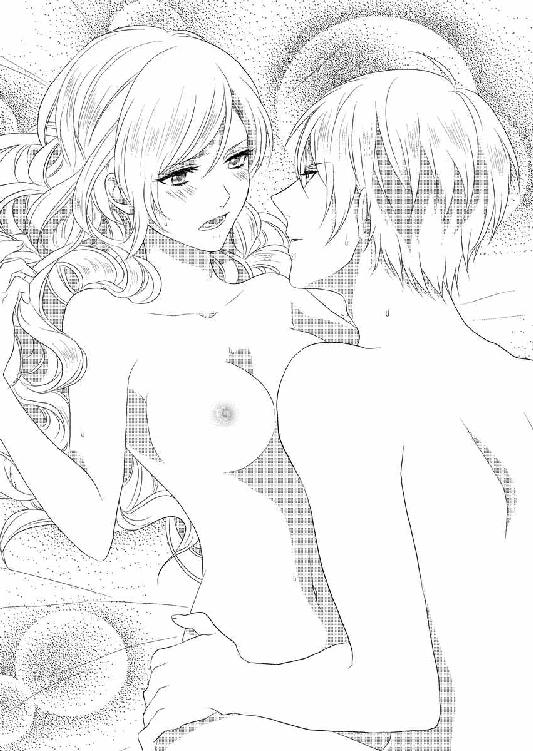
「君に負けたのが悔しいんだ」
「......悔しい？」
まだ絶頂の余韻から完全に復帰していないアナが、とろりとした口調で繰り返し、濡れた眼差しをフランツに向けると、イったばかりの彼自身がいきなり力を取り戻した。アナは目を丸くして、みるみるうちに復活していくフランツ自身を凝視する。
「アナ、それは反則だ」
反則と言われてもよくわからない。アナが戸惑うのにもかかわらず、フランツは彼女の腰を抱え上げ、再び秘裂に己を潜り込ませた。
「リベンジだ。今度は私が君をイかせる」
と言いながら。
ゆったりと腰を動かすフランツは、アナの肌を汚した自身の白濁を楽しそうに広げている。腹を撫でられて、びくっびくっと肌が反応するのに眉を寄せていると、フランツが可愛いと眉間にキスをしてきた。
「君が相手だと際限なく欲しくなる。本当は君の中でイきたかったが、式までは自制しなくてはね」
性の知識に乏しいアナには、フランツの配慮がよくわからない。曖昧な表情を見て、フランツが苦笑する。白濁で濡れた手をアナの前で軽く振って見せた。
「これが君のおなかに入ると子供ができる。それは知っているね。ただ、今は子供ができたら困るだろう？」
アナの顔が凍りつく。拒絶されたと勘違いしたのだ。フランツが慌てて彼女を宥める。
「違う違う。今は、と言っただろう？ 君との子供なら大歓迎だが、宮廷には鵜の目鷹の目で落ち度を探す嫌な連中も多い。結婚式の前に妊娠していたら、その子は誰の子供だと言い出す輩がきっと出てくる。君の名誉にも関わることだから」
フランツは、何か言いかけたアナの唇を塞いで言葉を封じる。キスの直前、アナはフランツの耳たぶが赤くなっているのに気がついていた。貴婦人を守っても自らの行為を吹聴しないのが騎士の鑑と言われる時代だから、アナを気遣う自分のことを口にするのが恥ずかしかったのかもしれない。
胸の中が温かなもので満たされていく。
「今は、感じてくれればいい。今度は君に負けないぞ」
さっきもわたしを絶頂に押し上げたのはこの人なのに、おかしな人、と思ったアナはフランツの言葉に少し笑い、キスに酔いしれるべく目を閉じた。
まだ性に目覚めたばかりのアナには、絶倫を誇りたい男の矜持も、初心者にイかされたと感じた彼の屈辱も、さっぱり理解できない。イく寸前まで高めておいて引き戻すという鬼畜めいた行動の意味も。
まさかすべてがただの八つ当たりだったなんて。
そうしてせっせとかき立てられた快楽の奔流に、アナはあらがうことなく素直に流されていった。フランツに告げられた「信じて」との台詞を免罪符として。
どこで意識を飛ばしたのか。ぼんやり目を開けると、フランツが心配そうに覗き込んでいた。カーテンの外がうっすらと明るくなっていて、一晩中睦み合っていたのだと知る。
「あ......」
何か言おうとして声が出ないことに愕然とした。それを見たフランツが、いきなり頭を下げてくる。
「すまない」
謝られて、ふわふわしていた意識にいきなり冷水をかけられた気がした。昨夜から何度こうして感情の上下動を味わわされたことか。傷ついた目を瞠りすくんだ身体を、焦ったようにフランツがかき抱く。
「違う。謝ったのは行為のことではなくて、いや、行為のことなんだが......」
言い淀むフランツを、アナは小首を傾げて注視する。抱き締められて彼の体温を感じたことで、一瞬の衝撃の余波は和らぎ、言葉の続きを待つ余裕が生まれている。
彼の言葉に一喜一憂するなんて、と心の隅では思いつつ、もうそれだけの影響力がある人、あってもいい人なのだとの認識もあった。
「つまり、初めての君に無理をさせたことへの謝罪だ。したこと自体への謝罪ではない」
言い淀んだもののすぐにフランツは開き直ったように断言し、アナもわかったとうなずいた。承諾したという意味だったが、それを見たフランツは眉を寄せ、なんだか不機嫌な表情になる。
「どうしてそんなに簡単に許すのだ」
責められても、責められる意味がわからない。アナは再び首を傾げた。フランツはアナの肩を掴み懇々と説教する。
「君は初めてだったんだぞ。普通なら細心の配慮を示されてしかるべきなのだ。何しろ初夜なのだから。それなのに、けだものの私は何度も君を抱いて貪ってしまった。本来許されないことだ」
苦々しく告げられて、アナはにこっと微笑んだ。喉を押さえながら、なんとか囁き声を振り絞る。声が出ないことも、フランツの罪悪感を煽っているようなのだが。
「合意だからいいのです」
「アナ......！」
感極まったように、フランツがアナを覗き込んでくる。アナはこくんとうなずいた。フランツはそれ以上何も言わず、強くかき抱いた。
「明日、いや今夜開かれる晩餐会で、ぜひ最初のダンスの相手をお願いしたい」
甘い抱擁にくるまれながら囁かれ「もちろん」と承諾しながら、アナは男の腕に抱かれて心地よい眠りに落ちていった。
再び目覚めたとき、すでにフランツはいなかった。キスをされ、騒ぎになる前に帰るからと耳語されたのはぼんやり覚えている。わかったとうなずいた記憶もあるが、できればこの瞬間ここにいてほしかった。
汗や体液は綺麗に拭われていて、ちゃんと夜着を着せられていた。シーツも取り換えられており、そのすべてをフランツがやってくれたのだ。『王子様がそんなことまで』と驚いたアナに『戦いに赴けば自分のことは自分でするのだよ。これくらいできなくては』とフランツは笑っていた。
その途中シーツに純潔の証を見たときは、『アナ！』と再び強くかき抱かれて感動を伝えてくれた。『一生大切にする』と改めて誓ってくれて、今はただ彼が無事に帰ってくることを祈るばかりだ。
そんなことをぼんやり思い返していると、小さなノックの音がしてばあやが入ってきた。目を開けているアナを見てほっとした顔になる。
「お食事はどうなさいますか？ あまり遅くになりますと夜に差し支えますよ」
「まあ、もうそんな時間？」
起きようとして全身を襲う怠さに気がついた。どこが痛いとかはないが、気怠い。いつものようにきびきびと起きられないのは、フランツのせいだ。
ちょっぴり恨めしく思いながら、アナはばあやの手を借りて着替えを済ませた。フランツは完全にアナを支配し我がものとしたものの、身体に痕は残さなかった。ばあやや侍女たちの前での体面を気遣ってくれのだ。『結婚したら遠慮しない』と宣言はされたけれども。
強引にことを運んでおきながら、こんなところには細やかな気遣いを示してくれる。なんだかくすぐったくて、でも嬉しい。
濃い交情のあとにもかかわらず、怠いという感覚以外は、さして不都合はなかった。このあたりにもフランツの配慮が感じられる。
朝昼兼用のブランチを取るために階段を下りて、燦々と日の入るこぢんまりとしたダイニングに向かうと、アガサが優雅に紅茶を飲んでいた。挨拶を交わし食事を始めると、穴が開きそうと思うほどアガサに凝視された。
「何？ 何かついている？」
サラダに手をつけながら聞くと、アガサは慌てて首を振った。
「なんでもないのだけれど......」
そう言いながらまだこちらを見るので、少しでも引っかかることがあるなら言ってよとやんわりと詰った。
「......なんだか雰囲気が変わったみたいで、目が離せない感じ？」
自分でもあやふやなのか語尾に疑問符がついている。さすがに双子の姉。鋭いわとアナは思った。昨夜一晩で、自分でも変わったと思う。何がと具体的に示せるものではないが、たとえば世の中は喜びで満ちていると感じたり、日常の普通の景色なのにキラキラと輝いて見えたり、そういうこと。
「いろいろ反省したのよ。ここのところわたしってハリネズミになっていたなって。自分の我が儘で責任をアガサに押しつけたり、些細なことに突っかかったりして」
「アナ......」
「命をかけて戦おうという人がいるのに、甘えてばかりじゃ情けないでしょ？」
冗談めかして告げてから、ふと真摯な目をアガサに向けた。
「心配かけてごめんなさい。ちゃんと話を聞かなくてごめんなさい。公女としての責任を全部押しつけてごめんなさい」
言わなければと思っていた謝罪を一気に告げる。アガサは「まあ」と口許を押さえ涙ぐんだ。そこまで悩ませていたのだとアナももう一度反省する。
「その反省に至った理由を聞いてもいい？」
眦の涙を振り払ったアガサに冗談めかして尋ねられ、アナはふふっと意味深に笑った。
「わたしが想像していることでいいのかしら」
「好きに想像してかまわないわ。そんなに間違ってはいないと思うから」
正面から顔を見合わせて、二人一緒に笑った。互いの間に真の信頼が戻ってきた瞬間だった。心地よい沈黙が続く。
食事のあとは二人で庭を散歩した。突然晩餐会を決めたので、離宮の使用人はてんてこ舞いしている。なるべく自分たちのことで手をわずらわせないように、庭を散歩したあとは居間に籠もって読書をしたり刺繍をしたりして過ごす。
その夜の正装は、アナが深紅のシルクタフタのドレス、アガサがミッドナイトブルーの繻子のドレスを選んだ。繊細なレースが胸と袖口を飾り、アナのドレスはダイヤで、そしてアガサの方は真珠で縫い取りがある華やかなものだ。
スカートには細かな襞が寄せられていて、身動ぐだけでもさらさらと乱れて綺麗なドレープを形作る。
金糸でできた絹の靴下を穿き、靴は金とシルバーのサテン地。髪を結い上げて額と首筋にさらりと垂らし、首にはそれぞれダイヤと真珠を埋め込んだチョーカーをつける。
並び立ったときの効果を考えて対照的なドレスを身につけた公女たちが、晩餐会の会場に現れたとき、居並ぶ人々はただただ感嘆のため息を漏らしたのだった。
主賓であるフランツが出入り口で待ち構えていて、二人にそれぞれの腕を差し出した。右手側にアガサが、左手側にアナが掴まり、しずしずと上座に向かう。
フランツが催した茶話会にも出席していた貴賓たちが招かれていて、それぞれの席についた。晩餐のあと舞踏会を予定しているので、間を置かずに最初の料理が運ばれてくる。短い時間で離宮のスタッフたちはできるだけのことをしてくれていた。
料理は様々に工夫を凝らした見事なもので、招かれた人々も満足そうに談笑しながら会は進んでいく。その中で一人、アナは強張った笑みを貼りつけて全く食欲を感じない状態にあった。原因はフランツの態度だ。
ドアの前で待っていた彼に微笑みかけたのに無視され、硬い表情のまま上座に導かれたあとは、話しかけても短い返事しかしてくれない。それもしぶしぶ一言か二言返すと、さっと背けられてしまう。冷淡な横顔にアナは呆然とした。
アガサがはらはらした顔を向けてくるが、わけがわからないのはアナの方だ。昨夜というより今朝方、あんなに甘くときめく告白をしてくれた、これが同じ人だろうか。
無視されないがしろにされた戸惑いと憂いが、アナの美貌をさらに特別なものにしていたのは皮肉なことだった。
宴の半分が過ぎる頃まで状況に翻弄されていたアナだったが、次第に元来の勝気さが蘇ってくる。結局わたしはからかわれたのだわ、ときっぱり踏ん切りをつけると、意地でも晩餐会を楽しむと決意し、いきなり華やかな笑みを振り撒き始めた。
上座の三人席の横には、ハイランドとリリエンタールの貴顕がずらりと居並んでいる。声が届く範囲にいる彼ら、彼女らに果敢に話しかけて魅了した。
もともと麗しい魅惑的な顔を持つ社交的なアナだ。その気になれば話す相手を自分に惹きつけるくらい簡単なことだった。
フランツと話しながらアガサが大丈夫かと気がかりそうな視線を向けてくるが、目でかまわないでと制して、さらに腕によりをかけた。そのせいでリリエンタールの貴族の一人が、ダンスの申し込みをしてきた。
本来は王子であるフランツの意向を聞いてからすべきことなのに、アナの誘惑に意識が散漫になってしまったのだ。
アナは内心これでよしとうなずいた。晩餐会のあと、フランツが最初のダンスを申し込んできても、先約がありますと断れる。相手がリリエンタールの男だというのが、さらにアナの勝利感を高めていた。
顎をつんと上げ、今の誘いが聞こえていたはずのフランツに挑戦的な視線を向けると、ちょうどこちらを見ていたフランツと正面から目が合った。一瞬何か言いたそうに見えたが、すぐにそれは消え、口許に皮肉な笑みを浮かべた。そして、
「アナ王女は気が多い方なんですね」
と痛烈な皮肉を投げかけると、それきり興味をなくしたようにハイランドの特使夫人と話し始めた。アナはテーブルの下で手を握り締める。あからさまな侮辱に、身体がわなわなと震えた。こちらが反論する前に顔を背けられたのも堪えている。
あれは空耳だったのか。真剣な顔でプロポーズしてくれたあのフランツは、いったいどこに消えてしまったのか。
悪夢を見ているようだった。あるいは海の底で浮上しようとあがきながら、水圧に押しひしがれて動けない、そんな感じ。今にも心が潰れそうな痛みを感じているのに、アナの見かけはそうではなかった。
快活に、いつもより少しはしゃいで、社交性を存分に発揮している。すべてアナの意地から発しているのだが、薄々でもそれを感じ取れるのはアガサだけだ。
だからアガサはずっと、心配も露わにアナを見つめ続けている。誰かに話しかけられても上の空で。
ようやく晩餐会が終わった。続きの大広間が舞踏会場だ。部屋のあちこちにテーブルが据えられ、軽食や果物などが自由に取れるように並べられ、飲み物もふんだんに用意されている。
他にも幾つか別室が用意され、踊らない、あるいは踊りに疲れた人たちが、カードゲームやビリヤードなどが楽しめるようになっていた。もちろんそちらにも十分な食べ物飲み物が準備されている。
アナたちを先頭に、立ち上がった貴顕たちが思い思いの場所に移動していった。生演奏が静かに流れ、公女たちが幕開けのダンスに立つのを、皆が待っている。
そのときまでアナはまだ僅かな希望を抱いていた。心を入れ替えたフランツがやってきて、自分の前に跪いて非礼を詫びるという。そうすれば自分もほかの男性に申し込まれたダンスを断って、フランツの手を取るだろう。
いよいよ幕開けのダンス。曲がすっと変わった。ステップの踏める軽快な曲だ。アガサの前にはハイランドの特命大使が、そしてアナの前には先ほどダンスを申し込んできたリリエンタールの若い貴族が立つ。彼はフランツの方をちらちらと気にしていたが、いっこうに立つ気配がないのを見てほっとしたようだ。
「ダンスのお相手をお願いできますか」
と笑顔で申し込んできた。アナは強張った顔で男の差し出した手に自分の手を預ける。
公女二人が立ち上がって中央に進み出ると、その場は驚きの囁きが湧き起こった。主賓のフランツが立たなかったせいだ。本来なら彼は、公女のどちらかとダンスをしなければならない立場なのだ。
公女二人が中央のポジションに立ったときになって初めて、フランツが立ち、席に残されていた特使夫人の方に歩み寄る。そして丁寧にダンスの相手を請うた。
それを見て、一同の間に理解のざわめきが広がる。双子の公女の片方を選ぶことを避けたのだと。どちらの手を取っても角が立つからな、と訳知り顔に言う者もいた。
軽快な曲に乗ってアガサがステップを踏み、アナが続く。アナに申し込んできたリリエンタールの貴族は公女が相手だと意識してがちがちになっていた。
胸の中は大嵐なのにもかかわらず、アナは柔らかく微笑みかけて男を落ち着かせ、無事に最初のダンスを踊り終えた。
続けてハイランドの近衛隊長がやってくる。彼と、そしてそのあともリリエンタール側、ハイランド側と誘われるままに踊り続けた。その間、あえてフランツは見ない。
にこやかに軽やかにステップを踏むアナを見て、心に深い傷を負っていると見て取る者はいないだろう。
アガサもダンスが始まってからは、アナの元に来ることができないでいる。ときおり目が合うと心配しているというメッセージを送って寄越したが、そのたびに大丈夫だとうなずいてすっと顔を背けた。
ある程度役目を果たすとひどく疲れた気がして、開け放してあるドアから広いバルコニーに出た。月明かりが周囲をぼんやりと照らしている。ダンスが佳境なので外に出ているものはいない。ようやく休めるとほっとしながら、椅子を目探しした。
鉢植えの陰にある椅子を見つけて座り、嘆息しながら顔を覆う。次第に感情が昂りだして、喉が苦しくなった。込み上げてくるものを無理やり呑み下す。
こんなことくらいで、泣いて堪るものですか。歯を食い縛り、激情を抑えた。
夜の静寂、さやさやと風が吹く。顔を上げ目を閉じて、静かな空気を身の内に取り入れた。少しでも胸中の嵐が静まるのを祈って。
いきなり人の気配がして、グラスが差し出された。
「え？」
「喉が渇いたでしょう」
話しかけられて、その声に総毛立った。フランツ......！
「けっこうです」
意識せずとも冷ややかな声が出た。
「体調を崩したりしませんでしたか？ 昨夜は無理をさせたから」
こちらが話したくないとあからさまに態度に表しているのに、フランツは気にした様子もなく話しかけてくる。しかも臆面もなく昨日のことを口にする。アナの心はますます冷えきっていった。
いらないと拒否されて、フランツは手にしていたグラスを脇の小卓に置く。
「深紅のドレスがよくお似合いだ」
アナはきっとフランツを見上げた。
「お世辞はけっこうですわ」
「私はお世辞は言いませんよ」
「お世辞でなければ二枚舌？」
アナは辛辣に言い返す。これ以上話したくなくて、立ち上がろうとした。それを左右の肘掛けに両手を置いて前屈みになることで、動きを封じられる。
「退いてください。ダンスに戻るわ」
「これ以上ダンスはしないでいただきたい。君に触れる相手に嫉妬するから。昨夜君は私のものになったはずだ」
しゃあしゃあと勝手なことを言ってくるフランツを、アナは睨みつけた。
「先に約束を破ったのはそちらでしょ！」
氷のように冷ややかに返事をするつもりが、つい激昂してしまった。胸を大きく上下させて落ち着けと自らに言い聞かせ、荒い息を整える。その胸にフランツが目をやり、意味ありげに笑うのが気に入らない。さんざんここで感じたことを示唆されているようで。
座ったままでは気圧されてしまいそうだ。相手を退けるつもりで腕を伸ばしフランツを押した。その手をふわりと掴まれ引かれて、勢いよく立たされた弾みでよろける。さらに強く引かれてフランツの腕の中に飛び込んだ。
「これは役得」
嘯くフランツにむかついて「放してっ」とあらがった。
「しーっ。騒ぐと誰か来てしまいますよ」
公女が明かりの届かない場所で男と揉み合っていたなんて、醜聞以外の何ものでもない。言われるまでもなくアナは無意識に抑制していた。ただ悔しくて。こんなことで丸め込まれたくない。声は潜めたが、あらがうことはやめなかった。
「アナ、戦場に発つ私に祝福はくれないのですか？」
フランツが悲しそうに眉を寄せているが、本気のはずがない。だが戦いに行く相手の武運を祈る気持ちは当然あるので、早口で告げた。
「ご武運を。立派に目的を果たされますように。......祈りましたわ。さ、手を放してください」
腕を引いたがフランツの力は緩まず、逆に引き寄せられる。
「ぁ......」
男の硬い胸に抱き寄せられて、至近距離のフランツを睨みつける。
「何をなさるの。離してください」
「いやだ。ダンスの約束をしたはずですよ」
勝手なことを言うフランツに、かあっと頭に血が上った。
「約束を破ったのはあなたの方でしょ。最初のダンスをなどと自分から言っておいて！」
「順番などどうでもいいでしょう。踊るまでは帰さない」
傲慢な言い方に、さらに苛立ちが募る。絶対に踊るものかとその場で踏ん張った。だがフランツの方が力は強いのだ。
片方の腕をしっかり掴まれ、腰を抱かれていては逃げることもできない。室内から小さく聞こえる曲に合わせフランツが踊り出すと、抱き締められたアナも無理やりステップを踏まされた。わざと足取りを乱しても、上手に誘導されてしまう。
どう考えても一枚上だった。
しぶしぶステップを踏んでいると、徐々に疑いが湧いてきた。優雅にアナを導きながら、彼は何を考えているのか。自ら約束を違えたくせに、こうして強引にダンスに誘うのはなぜ？
できるなら今この場でフランツを問い詰めたい。......問い詰めようか。
広間から微かに聞こえていた曲が途切れた。ステップの足が止まり、フランツの顔が近づいてくる。キスをするつもりだと察し、させるものかとぷいと顔を背ける。説明もせずに許せるわけがない。
狙いが狂って頬に着地したキスに、フランツが苦笑いを浮かべた。今度は顎をとらえ、逃がさないと固定して唇を押し当ててきた。舌で表面を濡らされ、中に入り込まれる。
「んーっ、んーっ」
許すつもりも、いいように貪られるつもりもなかったから、彼から逃れようと首を振りあがいた。それでもフランツの力は緩まない。結局いいように貪られた。口腔内の感じる場所を次次に暴かれ、逃げ惑っていた舌も捕まった。
強く吸われ噛まれて痛みが突き抜けた。だが何度も繰り返されていると、それは甘やかな快感に変わっていく。
ようやくキスから解放されたとき、アナは一人では立っていられず、フランツに凭れかかっていた。しっかりと抱き締められ、荒い息が収まるまで背中を撫でられる。
「どうして......」
言いかけて唇を噛んだ。自分から聞くのは敗北のような気がして嫌だ。そもそもフランツが説明すべきことではないか。
「どうしてか、聞きたい？」
面白がるように言われたのでは、ますますうなずけない。強情に押し黙るアナと、それを抱き締めて温もりを得るフランツと。
反発していても彼の腕に抱かれていると、気持ちが和らいでいく。なし崩しに、こうしていられるならもういいじゃないかと思ってしまうのだ。安心して寄りかかれる広くて逞しい胸。
弱気になりかけたとき、生来の勝気が目覚める。いやよ。こんなことで屈服するなんて。わたしはちっとも悪くない。フランツがわたしを抱きたいのなら、彼からしかるべき謝罪を受けてからだわ。
情欲に蕩けそうだった瞳から欲が抜けていく。アナは毅然とした目でフランツを見上げた。
「放してください。あなたにはこんなことをする権利はないわ」
ゆるがない声で宣言しフランツを押すと、彼も何か感じたのか今度はするりと腕が外れた。アナは何歩か後退り、フランツと距離を置く。
「こんなに難攻不落とは思わなかった。昨日はあんなに可愛かったのに」
「昨日のことを持ち出すなんて卑怯だわ」
「男は目的のためなら卑怯になるのですよ。でもまあ、今夜はこれで解放してあげましょう。勝利の女神から祝福のキスは受け取ったので」
不遜な言い方にまたかちんときた。言えば言うほど、言葉の通じないもどかしさを覚える。結局黙っていた方が無難だわ。そう悟ると、あとは無言のままフランツに背を向けて、広間に戻っていった。
ドアをくぐって室内に入るとき、ちらりと振り向いてフランツを見た。彼は手摺りに凭れ、じっとこちらを凝視していた。その中に強い渇望を感じて、足が止まりそうになる。引き返して何を悩んでいるのですかと聞きたい衝動に駆られた。
きっとまたわたしを揶揄することを考えているだけに違いないのに。
それでも迷いは消えず逡巡していたアナに、アガサが駆け寄ってきた。
「アナ、探したのよ。どこにいたの」
心配していた妹の姿が見えなくなったので、ダンスを断ってあちこち見て回っていたらしい。
「よかった。いてくれて」
アガサはバルコニーにいるフランツには気づかず、アナの腕を取って室内に連れ戻った。声をかけてくる相手に愛想よく微笑みながらも、断固として壁際に置かれた椅子まで引っ張って行く。
「飲んで」
強引にシャンパングラスを渡された。
「でも」
「いいから飲んで。そんな真っ青な顔でいたら駄目」
アガサが言うくらいだから、相当ひどいのだろう。しぶしぶ舌にぴりっと刺激のある液体を一口飲んだ。じわっと身体の中から温みが湧き上がってくる。そのときになってアナは自分が心身共にひどく冷えきっていたことに気がついた。
アガサに見張られてグラス一杯のシャンパンを飲み干すと、ようやく顔色が戻ってきたとアガサにうなずかれた。
「ありがとう。もう大丈夫よ」
ちょうどダンスのお相手をと言ってきた相手がいたので、アガサに立つように勧めた。
「すぐに私も復活するから」
「本当に？」
まだ疑いの眼差しをしながらも、アガサは手を差し伸べた相手にうなずいて立ち上がる。ここは公の場所、公女としての義務は果たさなければならない。
軽やかなステップを踏むアガサを見つめていると、今度はアナを誘いに特使がやってきた。
「よろしくお願いしますね」
首都に帰る公女たちの代わりに、特使が離宮のすべてを取り仕切ることになる。さらにフランツの戦いにも、手勢を連れて同行することになっていた。
「お任せください。ご信頼には必ずお応えします」
アナの言葉に特使は淡々と請け負った。
結局フランツが公女たちをダンスに誘いに来たのは、終了間際のことだった。主賓であるからには一度は踊らないとあとでどんな憶測を呼ぶかわからない。そんな思惑が透けて見えるダンスだった。儀礼とわかる硬い抱き方で終始し、アガサは憤慨し、アナは感情を凍らせた。
夜遅くまで賑わいは続き、ようやく宴が果てたときは、精も根も尽き果てていた。早くベッドに入って眠りたい。
招待客らを送り出し自室に戻ってきたアナは、それしか考えていなかった。なのに化粧を落とし夜着に着替えてベッドに潜り込んでも、眠りはいっこうに訪れなかった。
目が冴えて視線がうろうろと彷徨っている。何度目かに窓を見たとき、アナは自分が何を待っているか気がついた。フランツの訪れだ。
昨夜と同じように不意に窓から彼が現れるのを待つがゆえに、そちらに視線が流れていくのだ。自覚した途端、強烈な拒絶反応が湧き起こる。
許せないわ。あんな人にわたしが影響されているなんて。認めない、絶対に。
断固として目を瞑り、眠ってしまうまで微動だにせずその姿勢を保った。その強い意志で明け方近くなんとか眠りについた。朝、ばあやが起こしにやってきたときは、勝ったと思った。 晩餐会の翌日、アナとアガサは離宮を発ち首都に帰還した。馬車に乗るときフランツが見送りに来てくれたが、儀礼的な言葉を交わしただけであっさりと別れの挨拶は済んでしまう。
アナは膝掛けの下でぎゅっと手を握って堪え、にこやかな笑顔でフランツの見送りに礼を告げる。やがて、ドアが閉ざされ窓のカーテンが閉められた。
あっけない別れだった。
第四章 双子姫の祈り
首都に帰れば離宮にいたときより格段に公女たちの公務は増える。地方訪問や、貧しい人たちの施設への慰問、いろいろな芸術関係のパトロンの仕事もあるし、各種団体の名誉顧問も務めている。離宮滞在はいわば彼女たちの息抜きの時間なのだ。
日々忙しい方が、今のアナにはありがたい。時間ができれば、つい考えてしまうからだ。
アガサは妹の傷心をそっとしておいてくれる。こういうことは自分で解決しなければならないことと理解しているからだ。
アガサと二人、首都近郊の工場への視察から帰ったとき、大公から呼び出しを受けた。どきっとする。改まっての話ってなんだろう。アガサと顔を見合わせるが、彼女もわからないと首を振る。振った直後に「まさか、あれ？」と意味深にアナを見つめてきた。
アナも少し考えてそうかもと同意した。
フランツの、ひいてはリリエンタールの現状だ。
首都に帰ったときアナは、父に頼み事をしていた。リリエンタールから知らせが来たら、それがどんなにささやかなことでもすぐに教えてほしいと。
あとで聞くとアガサも全く同じ頼み事をしていたというから笑ってしまった。しかもアガサは、アナに話す前にわたしに言ってねと念を押したという。父にバラされて、姉は拗ねていた。
「だって何かあったとき、アナが受けるショックを和らげてあげられたらと思ったのですもの。言い方を変えるだけで、衝撃の事実の衝撃度が減るかもしれないでしょ？」
アナはあえて返事をしなかった。衝撃の事実は、やはり聞いた者に衝撃を与えるだろうと思うからだ。ただアガサの思いやりが嬉しかったから、否定しない。
外出着を普段着に着替え、父の元に急ぐ。
執務室の大きな机の上に報告書が載っていた。
「アガサ、アナ。最新の知らせだ。フランツ殿は順調に進攻しているようだ」
公女たちが発ったあと、程なくフランツもリリエンタールへ進発した。旅程の途中で味方の人数は膨れ上がり、首都に到着したときは敵を圧倒する数に達していたらしい。
フランツに同行した大公特使から、毎回詳細な報告が届く。
前回は、首都を包囲して敵に使者を派遣した、までだった。フランツは近衛隊に守られて万が一の危険もないと特使は書いている。
その後、使者の往復で進展があったのかどうか、公女たちはいらいらと気を揉んで知らせを待っていたのだ。もどかしいあまり進み出たアナが、父親の机の報告書を覗き見ようとした。
「アナ...！」
アガサが慌てて止める。大公は「よいよい」と大らかに手を振った。
「状況は変わっていない。人質を交換することに双方が合意したことが書いてあった。これで国王陛下が牢を出られればいいが、おそらく駄目だろうな」
大公の説明に、アナもアガサもうなずいた。
「それだけだ」
公女たちは礼を言って父大公の御前を下がっていく。
部屋を出て、アナは吐息を零した。今日もまたフランツは無事だったとほっとしたのだ。
それでも、話を聞くだけ、しかも時間を置いての報告だからもどかしい。無事だと聞きながら、実は今このとき、フランツは危険に直面しているかもしれないのだ。気を揉むことしかできない自分が悲しかった。しかも現実には揉む権利もない立場だ。
アガサと二人、居間に座ってぼうっとしていると、「刺繍をしない？」と誘われた。
「無事を祈って気持ちを込めて針を刺すの。そして次の使者の方に預けたらどうかしら」
「いやよ。あの人にわたしから何かを贈るなんて、そんなのっ」
自分ばかりが未練を持っているようで悔しい、と咄嗟に拒絶していた。プライドの高いアナには耐えられない。
けれどもアガサが、「わたしも贈るから」と言ったので、迷いが生まれた。
「二人で贈れば、ハイランドの公女からということになって、ちっともおかしいことじゃないわ。離宮で親しくしていた方のご無事を祈念してなんだもの。ね、やってみない？」
結局絹のスカーフの両端に、二人でそれぞれ想いを込めて刺繍をし、出来上がったものを次の使者が来たときに預けた。フランツからは喜びの礼状が届き、それには肌身離さず持っていると書いてあった。
なんとなく自分の祈りが届いたようで、アナは提案してくれたアガサに感謝する。
その後もこまめに連絡は届いたが、膠着状態は続いているようだった。ただ捕虜交換の話は素早く進み、次の報告では朗報を告げられるだろうと書いてある。
そして届いた新しい報告。事態は一気に好転したようだ。捕虜を交換する際にフランツ側の兵がまぎれ込み、国王の居場所を突き止めて救出に成功したというのだ。しかも同時に、フランツの兄二人も地下牢から助け出された。
それまで全く行方がわからなかった兄王子たちは、クーデターの直後に捕らえられ、そのまま地下牢で忘れられていたようだ。かなり衰弱していたが、命に別状はないとのこと。
さらにその救出作戦は、フランツ自身が指揮を執ったことも報告にあった。これでもう憂いはないので、まもなく総攻撃の命令が下される見込みという。
報告を受けた大公は痛快だと膝を打って喜び、危険を承知で動いたフランツの評価は、ハイランドで急上昇した。
「ご無事だったのだから」
アガサに慰められてうなずいたものの、アナはぎりぎりと歯を食い縛っている。
どれほど危険な状態だったのか、報告ではさらりと触れられているだけだ。でも敵陣へ密かに乗り込んだのだから、とんでもなく危険だったに違いない。無事だったと聞いても単純に喜べない気持ちを、アガサだけが察してくれる。
「もう早く終わってほしいわ」
不謹慎なのは承知の上で、そう呟いた。毎日が綱渡りのようで、心臓が締めつけられるように苦しい。
「きっとあと少しよ。この総攻撃が終われば......」
「そうね。そうであってほしいわ」
公女たちが話していたまさにその時間、リリエンタールではフランツの命令で、総攻撃が開始されていた。
最後の決戦は、あれだけフランツが画策して味方を有利にしていたにもかかわらず、敵味方入り乱れての乱戦になった。敵もこれが最後だとわかっているので懸命に防戦した結果だ。
フランツは王宮を睨んで立ち尽くしていた。傍らにクラウスが、油断なく周囲を警戒しながら控えている。
小高い丘の上で、戦いの帰趨がよく見えた。最初大砲が殷々と鳴り響き、突撃路を確保する。続いて鉄砲隊が撃ち合いを始め、間合いを計って騎馬隊が敵陣をかき乱す。今は歩兵が進んで斬り結んでいるところだ。
必ず取り戻すと誓い、ようやくここまで来た。間もなく自分と近衛隊が突撃するタイミングが来るはずだ。そのまま王宮への突入を図るために、馬も人も厳選して近衛隊を結成している。
フランツの首には、色鮮やかなスカーフが翻っていた。隣国の公女たちが手ずから刺繍して贈ってくれた品だ。肌身離さずそれを身につけているフランツの態度と相まって、周囲の者たちはこの戦いが終わったら華燭の典が催されると、もう今から期待でわくわくしている。
戦争に負けるとは誰一人、微塵も思っていないのだ。
その期待を一身に背負っているフランツが、右手をあげた。囁き交わしていた味方がしんと静まりかえる。
「雑魚にはかまうな。一直線に突っ込め。王宮の正面を突破するまで手綱を緩めてはならぬ」
厳しく最後の注意を与えたあと、フランツはあげた腕を振り下ろした。
鬨の声と共に流れるように近衛隊が動き出す。統制を保ったまま馬の速度を上げ、乱戦の戦場を脇目も振らず駆け抜けていく。
切り込み隊長の役目を負ったフランツが先頭に立った。危険だからと止めた側近を睨みつけ、退けたあげくのことだ。指揮官が先陣を切れば、あとに続くものは奮い立つ。その原理を、フランツはよくわかっていたのだ。もちろんすぐ側にはクラウスが従っている。
怒濤のような一隊はほとんど抵抗もなく宮殿に迫り、守っていた兵をあっさりと蹴散らして突入に成功した。速度を緩めず王宮の前庭を駆け抜けると、建物を回り込んで敵の本陣に行き着く。
クーデターの首謀者だった叔父は、すでに敗れ去っている。降参せずに抵抗を続けた彼の息子たちも、今、この手で倒す。理不尽に命を奪われた者たちの仇、絶対に許さない。
フランツはすらりと剣を抜いた。彼を守ろうとクラウスをはじめ、近衛隊が取り囲む。そのまま一丸となって、狼狽する敵の本陣に突っ込んでいった。
「勝利は我が方にある。続け！」
と叫んだフランツと共に。その勢いに、敵は木っ端微塵に粉砕されたのだった。
あちこちで、食事の支度が始まっている。戦いに勝利したフランツに、首都の人々から夥しい食料の提供があった。牢に入れられていた無実の人間を釈放し、怪我人を手当てし、死者は丁寧に葬るために一箇所に集められた。
武器を捨て投降した者たちは、何カ所かに分けて押し込めてある。その中には敵の領袖だった従兄弟たちもいた。フランツの突入に怯えて、戦いもせずに武器を捨てたのだ。
戦ってくれとは言わないが、それにしても腑甲斐なさすぎる。こんなに簡単に降参するくらいなら、犠牲者が出る前にしていればいいのにと、苦々しい。
細かな指図は宰相に任せ、フランツはこの先のおおざっぱな予定を立てている。
今はほかにいないからフランツがすべて決裁しているが、こちらは父王が回復したら任せればいいし、兄たちが補佐するだろう。牢にいたせいでどちらも衰弱しているが、いずれ回復するはずだ。
自由の身になれるまでどれくらいかかるか。いつになったらハイランドへ出向けるか。
フランツの思惑はその一点にかかっている。首のスカーフに触れると、自然に笑みが湧いた。アガサだけではなく、アナの刺繍もこのスカーフにはあるのだ。あんな仕打ちをしたのに、手ずから刺繍して届けてくれた。それにどれだけ勇気づけられたか。
早く彼女に会いに行きたいと、気持ちばかりが逸る。
あの晩餐会の時、フランツはアナを誘うつもりでいた。だが会場に向かう途中、物陰から闇討ちされたのだ。すぐに取り押さえたものの、どこに敵のスパイが潜んでいるかわからないという事実に直面させられた。
アナを特別扱いするところを見られたら、自分への抑止力として間違いなく彼女が狙われる。クラウスに言われたときは一笑に付したその危険が、現に存在していた。
だからことさらアナに素っ気なくしたのだ。傷ついた顔を見ているのは辛かったが、自分がいないときに彼女が傷つけられるのはもっと怖い。
誤解は、すべてが片づいたあとで自ら赴いて解けばいいと。
バルコニーでのダンスのとき、アナはわなわなと震えていた。目を見れば、どれだけ激怒しているかが伝わってくる。震えているのは、やり場のない怒りを身体の中で押し殺していたからだ。
それでも、人に見られないところで存分に彼女を抱き締めたかった。柔らかな身体をひとときでも我がものにしたくて。
そして、馬鹿らしい理由でクーデターを企て、こんな思いをさせる叔父を心底憎んだ。
あとで公式にダンスを申し込んだときのアナは、冷たくこちらを拒絶していた。当然だ。
そんな経緯があったのに、祈りを込めたスカーフを贈ってくれた。アガサもしてくれているが、メインはアナだとわかるように、申し訳程度に針を刺しているだけだ。その思いやりが嬉しい。
スカーフに唇を押し当てて、少しだけアナへ想いを馳せることを許し力を得ると、再び山積する責務に取り組んだ。
宰相が困ったことを言い出したのは、数日後のことだ。
「兄君方の復帰を認めないという声が上がっています」
山ほどある命令書に片端からサインしていたフランツは、
「誰がそんな馬鹿なことを言い出したのだ」
と宰相を睨んだ。
「誰と申しましても、皆が、です」
「私は面倒は嫌いだ。今のこれでも持て余しているのに政治などごめんだ。なんとか収拾しろ」
宰相は困ったように肩をすくめた。
「恐れながら申し上げます。実はわたし自身も、兄君方の復帰は歓迎しておりません。あの方たちが元の地位に戻られたら、おそらくわたしは首を刎ねられるでしょう。側近連中も同じ運命です。さらに当時の警備責任者、警備兵、もしかしたら侍従や侍女たちも。クーデターを防げなかったという罪で」
フランツは嘆息し、素っ気なく言った。
「そんなことはさせないから安心しろ」
「どのようにしてでしょうか？ 兄君方の地位が回復したら、あなた様は王位継承順位三位の、ただの王子に戻られます。名誉職ばかりで、政治に関する権限はなかったと存じますが」
言い返そうとして言い返せなかった。確かにその通りだ。クーデターを阻止して首都と王宮を取り戻した功績があるから配慮されるべき、とフランツが思っても、あの狭量な兄たちが認めるはずがない。それどころか、妬んで排除する方向に進みそうだ。
父王も、どこか気が弱いところがあるから、兄二人を押さえ込むのは難しい。
「できればあなた様に皇太子となっていただきたいのです」
宰相の言葉にぎょっとしたとき、ドアの側にいたクラウスがさっと扉を開いた。集まっていた家臣たちが、フランツの前に一斉に跪く。お願いしますと頭を垂れる姿を見て、フランツは手にしていたペンを放り出した。くそっ、と王子らしくない言葉で罵って頭をかき毟る。
「私はここを早く片づけてハイランドに行きたいのだ。頼むから面倒は押しつけてくれるな」
「できるだけお手伝いいたします。隣国へ行かれるのは、婚姻の件ですね。わたしが使者として参ります」
宰相が熱心に言った。
「は？ 婚姻？ ......反対しないのか？」
「誰が反対いたしましょう。隣国の公女様のお働きは、耳にしております。この度は大公殿下から多大な援助もしていただきましたし、良縁かと存じます。ですが......」
宰相はそこで言葉を切ってためをつくってから、おもむろに不吉な予言をした。
「兄君方はおそらく反対なさるでしょう。それどころか、ご自分のお后にと言い出されるかもしれません。お美しいと評判の公女様ですから」
言われて初めて、その可能性はあると、フランツは大きなため息をついた。宰相と、その後ろに居並ぶ大勢の家臣団を見る。
「私は政治は素人だぞ。波風を立てまいとわざと学んでこなかったからな」
「お手伝いいたします」
「お教えします」
「公正なご判断をいただけるだけで十分です」
口々に声を上げるのを聞いていると、彼らが今までずっと苦労していたことがうかがえる。確かにあの兄たちでは。それに父も優柔不断なところがあるし......。
立場上、これまではいろいろな不満を封印していたが、改めて考えてみれば問題ばかりじゃないか。今なら、そうしたことに終止符を打てる。
「わかった。ハイランドの姫を妻に貰い受けるのを条件に、そなたらの頼み、聞き届けよう」
一斉に安堵の声が漏れ、皆がどれだけ緊張していたかが伝わってきた。
宰相が細々と指図を始める。フランツの気が変わらないうちに手続きを済ませてしまおうというのだろう。また、今を外しては、フランツの権威が消滅するのも目に見えている。父と兄が動けない今が、事を成すチャンスなのだ。
ひょっとしてこれもクーデターの一種じゃないのかとちょっと思ったが、面倒なので考えるのを放棄した。
「兄たちを退けるにしても、納得させないと争乱の元になるぞ」
とそれだけを宰相に念を押す。
「お任せください。お二人の気性はよーく存じております。うまくやります」
熱心にうなずく宰相に苦笑して、すべてを任せた。
指示を受けた人々がそれぞれの役目を帯びて散っていく。
しばらくして、宰相が改めてフランツに向き直った。
「一つお伺いしたいのですが」
「なんだ」
「お相手の姫君は、あなた様の好意をご存じなのですか？」
うっと詰まったのは、別れたときの状況が状況だから、そうだと肯定できないせいだ。
「私自身が行けば、なんとか......」
こほんと咳払いした宰相は、なりませんとフランツを制止する。
「殿下が不在にできる状況ではないことはおわかりでしょう。お任せください。交渉事は得意です。必ずや姫君のご承諾をいただいて参りますので」
ポンと胸を叩く宰相を、フランツは胡乱な目で見た。確かに交渉事はプロだろう。すでに長い間宰相の地位にあるのだから。兄たちについても勝算があるようだし。
だがことは感情のもつれだ。アナの気性を考えると、自分が出向かなければ絶対に難航する。
しかし今ここを離れられないのも確かだ。
「わかった。取りあえず行ってみてくれ」
運を天に任せ、宰相を行かせることにした。
国の正式な文書は、公文書館の文官が作成することになっている。結婚申込状という古風な形式を備えた書状が、麗々しく羊皮紙で作成された。先例に倣って綺麗にリボンを巻かれさらに木箱に収められたものが、宰相に手渡される。
フランツも大公宛の感謝の手紙を宰相に託す。アナ宛の手紙も何回か書きかけたが、うまく纏まらず結局諦めた。
さっそく宰相はハイランドに赴き大公に拝謁する。先に公文書を作法通りに渡してから、さらに口頭で、
「状況が落ち着き次第、公女様を花嫁としてお迎えしたい」
旨を申し入れたのだった。
フランツの態度から難航するかと覚悟していた宰相は、喜色満面であっさり了承されたことから、殿下は何か勘違いなさっていたに違いないと内心で呟く。
「いや、離宮でも仲睦まじくしていたと聞いている。当人も話を聞けば喜ぶだろう」
との伝言も託され、上々の首尾だったと宰相は胸を撫で下ろした。
国務が山積みしていますので、と断りを言い朗報を携えて取って返す。
「ご承諾いただきましたぞ」
宰相の報告にほっとしたフランツだったが、大公の伝言を聞くと首を傾げた。
「仲睦まじく......？ 人前では喧嘩ばかりしていた印象があるが」
思わず呟いたものの、喧嘩するほど仲がよいと判断されたのか、と喜びの中、微かな違和感は消えていく。
その後リリエンタールでは、早くフランツ様の花嫁をお迎えしよう、が合い言葉になり、クーデターの傷跡は急ピッチで修復されていった。療養中だった国王の復帰と共にフランツが皇太子の地位に就く。
兄二人が、宰相の巧みな詐術に幻惑され、地位を返上して国境近くの領地に退くことに同意したので、引き継ぎは円満に運んだ。
のちに、どうやったのだとフランツが聞くと、宰相はしれっと答えた。
「国内がクーデターの余波で荒れていて、危険だと申し上げただけです。責任ある地位におられれば、その身が危ないと。殿下方は、悲惨な牢獄生活を味わってこられましたからね。それはごめんだと、そして国境近くにいればいつでも逃げられると思われたのでは」
「しかしそれでは、欺瞞がばれたとき憤激を招くのでは？」
「何もしなくても、たっぷりの利益が懐に入るように配慮しました。もともと怠惰な方々ですから、責任を負わなくても裕福に暮らせるなら、それで満足なさるはずです」
兄たちの腑甲斐なさに今さらながら呆れ、それをすべて承知の上で転がす宰相にいささかの脅威を覚えた。
ともあれ、皆の努力で戦争の傷跡は一掃され、いよいよハイランドへ迎えの使者が仕立てられる日がやってきた。
古式通りに美々しく装った使者と華やかな馬車が、歓呼の中、ハイランドに向かって出発していく。ハイランドの公女「マルガリータ・Ａ・ゴトフリー」をリリエンタール皇太子フランツの花嫁として貰い受けるために。
それが取り返しのつかない間違いであることを、今はまだ誰も気づいていなかった。
両親から縁談が決まったと告げられたアガサは、ただただ困惑した。申し込んできたのがリリエンタールのフランツ王子だったからだ。「マルガリータ・Ａ・ゴトフリー」と書かれた結婚申込状を見て、
「アナと間違っておられるのではないかしら。約束めいた話をしたとアナから聞きましたわ」
と確認する。大公夫妻は首を振った。
「書状を持ってこられた宰相殿に尋ねたから間違いない。これはアガサのことなのかと聞くと、そうだという返事だったぞ」
「そんなはずは......」
いったいどうなっているのか、アガサにはさっぱりわからない。フランツが自分に求婚してくるなんて、絶対にあり得ないのだが。すでに帰国してしまったリリエンタールの宰相に確認するわけにもいかないし。何よりこんなことアナが知ったら、もっと傷つくに違いない。
アガサが喜ばないので、大公夫妻も困った顔をする。
「離宮で仲良くしていたのではないのか。わしはそう聞いていたが」
「仲良くしていたのは、アナの方です」
「いや、アナとは喧嘩ばかりだと」
「違います」
堂々巡りだ。
「ちょっと頭を冷やしてきます」
アガサは大公夫妻の居間を出た。とそこにアナの姿を認めて硬直する。もっとも知られたくない人に、最悪のタイミングでばれてしまった。
「結婚申込状が来たって聞いて、それで」
アナはそれだけ言って唇を噛んだ。次の瞬間、さっと身を翻して逃げていく。
「アナ、待って！ これは何かの間違いよ。お願い。話を聞いて」
懸命に追いかけたけれど、アナは途中にあるドアから庭に飛び出していってしまった。
「もう、足が速いんだから」
喘ぎながら胸を押さえ、苦しいと喘いだ。普段活発に走り回っていない分、身体能力ではどうしてもアナに劣ってしまう。壁に凭れるようにして息を整え、アナを探さなくちゃと、アガサも庭に出た。
宮殿の中庭には迷路もあるし、身長の高さまで葉を茂らせた刈り込みもある。子供の頃はここでよく隠れんぼや鬼ごっこをした。無邪気に遊んでいた頃が一番幸せだったのかもしれない。
ようやく見つけたアナは、中庭を主に整備している初老の庭師の手伝いをしていた。無心に草を引くことで、頭を空っぽにしているのだろう。
公女がそんなことするものではありませんと説教すべきかもしれないけれど、アガサは黙ってアナの隣にしゃがんで、一緒に雑草を抜き始めた。
「最後の最後に喧嘩したの。でもその前は、わたしにプロポーズしたんだと思い込んでいた。そんなふうな言い方をされたから」
長い無言の時間のあとで、せっせと草むしりをしながらアナがぽつりと言った。
「だったらあの申込状はアナのものよ。だってわたしにはそんなこと、冗談でもおっしゃらなかったもの」
「......でもアガサだと、あちらの宰相様が肯定されたのでしょ」
「そんなの、どこかで誰かが勘違いしているに違いないわ」
断定口調で強く言うと、血の気の失せた唇に、アナが儚い笑みを浮かべた。
「いつもと逆ね。アガサが元気でわたしの方が沈んでいる」
「だったらわたしのところまで浮上してきて。くよくよ悩んでいたって仕方ないもの。どうするか、二人で考えましょ」
アガサは爪に土が入り込んだ指を、意味ありげに振る。
「ねえ、アナもショックだろうけど、わたしだって大ショックなのよ。だってあなたを好きなフランツ様と結婚しろと言われているのよ。それこそ愛のない結婚じゃない。絶対に幸せになれない結婚なんて、わたし、嫌だわ」
アナはそこまで考えなかったと、目をしばたいた。アガサはもう一息と言葉を繋ぐ。
「ここから抜け出してみんなが幸せになれる方法を、なんとしても考えなきゃ」
「......ええ、そうね」
アガサの懸命の説得にようやくアナがうなずいた。沈んでいた瞳に、微かにでも光が戻ってくる。
「お姫様方、そろそろお茶の時間じゃないですかの。休憩所にうちの婆が焼いたお菓子がありますけん、お食べになりませんか。お口に合うもんじゃねえですが」
庭師の老人が遠慮がちに声をかけてきた。
「何を言っているの。ありがたくいただくわ」
アガサに続いてアナもうなずいた。
「いただきます」
庭師は素朴な菓子ですと恐縮しながら、温かいお茶と一緒にそれを差し出した。手作りのお菓子は、少し硬いけれども甘くておいしかった。
「またいつでもおいでなさいませ」
優しい言葉に癒されて、自室に戻る。
「さあ、作戦を練りましょう」
アガサがパンと手を叩いた。並び合ってソファに腰かけ、ああでもないこうでもないと思いつきを話し合う。正式な申込状をどう覆すか、そんなことができるのかという不安はあったが、アガサにとっては青ざめたアナの頬にピンク色の輝きが戻っただけで、十分満足なのだった。
やがて、アガサの結婚準備が進み始めた。純白のウエディングドレスは、公国内で評判のメゾンの女店主がデザインし、お針子たちが張り切って縫い始める。極細のレース糸でできた泡のようなベールの製作も始まった。
繊細な象眼細工を施したドレッサー、サテン張りのスツール。アメジストを嵌め込んだ書き物机など、名人と呼ばれた職人たちが精魂込めて身の回りの家具を作り上げる。
すべては愛娘を嫁がせる大公の愛情だったが、そのどの工程にも、アガサはアナを伴い、好みを聞いては変更を申し出た。まるで嫁がれるのはアナ公女様のようと、関係者たちはあとで密かに囁いていたという。
そうしてハイランドで着々と準備が進み、リリエンタールでもクーデターで負った痛手から立ち直った佳き日、いよいよ婚礼の馬車が花嫁を迎えに旅立った。
行きはそれほど注目は集めなかったが、花嫁となる公女を乗せた帰路は、華やかに飾り立てられた馬車列を一目見ようと、たくさんの見物客が沿道を埋め尽くした。
泊まりを重ねて馬車列は進む。いよいよ国境を越えたとき、ハイランド側の侍従や侍女、そして馬車列を警備していた騎士たちが一斉に交代した。リリエンタールから派遣されてきた人員へと。
ここまで一緒に来たばあやが泣き伏した。
「ここでお別れなんて切のうございます。嫁がれるその姿を拝見したく存じますのに」
故郷を越えると、花嫁は生国から切り離されて婚家の人となる。その象徴が、付き従う人員の交代だ。臣下であっても幼い頃から接してきていれば、真情は母親と同じなのだろう。
ばあやの嘆きにアガサもアナもしんみりしてしまった。
やがてばあやだけでなく、侍従や侍女たち、そして騎士たちの名残惜しそうな視線に見送られ、馬車列はいよいよリリエンタールの国土に入っていった。
待ち受けていたリリエンタールの沿道の人々は、馬車の窓から全く同じ顔が覗いているのに驚く。ハイランドの公女は双子で、この度は片方が花嫁、もう片方がブライズメイドを務めるために二人連れ立ってやってきたのだと、事情通がそこここで訳知りに話していた。
いよいよ最後の宿が近づいてきたとき、あたりはそろそろ夕闇に包まれ始めていた。時間が遅いので、沿道の人もまばらだ。いよいよ明日は首都到着だと、ほっとした気配が行列を包んでいる。
そんな中、異変が起こった。坂道を上りきったところに、漆黒の馬が待ち受けていたのだ。護衛の騎士たちにさっと緊張が走る。
流麗な印象の馬体にゆったりと跨るのは、マスクをつけた若い男。敵か味方かと護衛の騎士たちが警戒する中、男が馬を寄せてきた。
その途中のどこかで、いきなり緊張が解ける。顔を隠してはいるが、相手が誰か、騎士たちが認識したのだ。それを見澄ましていたかのように、男は馬に拍車を入れ急速に近づいてきた。
馬車の中ではアナとアガサが、いったい何事かと顔を見合わせている。彼女たちにも近づいてくる蹄の音は聞こえていたからだ。
と、いきなりドアが引き開けられる。ぱっと視線を向けた先に、馬に乗った男がいた。マスクの下のバイオレットの瞳が、深い渇望を秘めて真っ直ぐにアナを射抜く。強い吸引力に、アナの身体が傾いだ。伸ばされた腕に躊躇わずに身をゆだねる。
「アナ！」
アガサが驚いて止めようとしたが、さっさとアナを抱き取ってしまった馬上の男が、しーっと悪戯っぽい笑みを向けてきたのに毒気を抜かれた。
「まあ、なんてこと......」
すわ誘拐かと焦った気持ちがすとんと落ち着く。特徴的な瞳の色でアガサにも、相手が誰かわかったのだ。アナが抱き締められておとなしくしているのを見れば、文句を言う気も失せてしまう。
「朝には戻ってきてくださいね」
「努力する」
承知したではないのね、とアガサが苦笑した。よろしくというつもりか、軽く会釈したあと、男はアナを自分の前に乗せて走り出した。遠ざかる後ろ姿を見送ってから、アガサはドアを閉めて出発するよう、騎士たちに声をかけた。
何事もなかったかのように、馬車列が動き出す。宿に到着したのは、間もなくのことだった。
胸の中で、フランツ、と呼んで、アナは彼にいっそう身を寄せた。きつく抱き締められているので、強靱な彼の腕の力や逞しい胸を直に感じて、肌がざわついている。
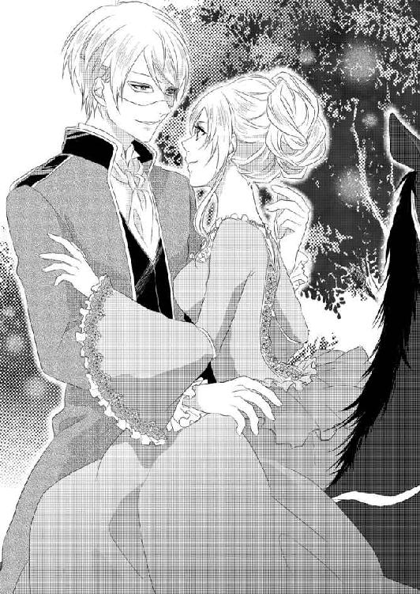
いろいろ思うことはあったが、アガサに説得されてついてきてよかったと思う。全く揺らぐことなく、真っ先に自分をとらえたフランツの瞳。彼の気持ちが変わっていないことが、その一瞥だけで信じられた。
どこで間違いが生じたのかはわからないが、フランツが花嫁にしようとしたのはアガサではなくて自分だった。
あとでちゃんと説明してほしいけれど、今はただ寄り添っていられるだけでいい。
「待ちきれなくて、来てしまった。ようやく君をこの手に抱ける」
馬に揺られながら、フランツが頬を擦り寄せてきた。すでにマスクは外している。
「君の匂いだ」
耳朶に鼻を押しつけるようにされて、くすぐったくて笑ってしまう。
「こんなところで駄目よ。馬から落ちたらどうなさるの」
窘めたら、
「落とさないさ。大事な君を」
などと言われて、戯れのように何度も唇を押しつけられ、耳の後ろを強く吸われた。ぞくんと震えが走る。こんなに密着していて何も感じないわけがない。それでも。
「駄目です。ここは外で人目もあるし、何より馬の上よ？ さすがにそれは嫌だわ」
不本意だけどと制止したら、背後の胸が震えた。笑っているのだ。
「この近くに祖父の残した館がある。祖父から譲られて、私がときどき使っていた。泊まれるように準備させておいた」
「ま、意地悪だわ。最初からそうおっしゃってくださればいいのに」
「サプライズだ。君を攫いに行ったのに、向かった先が野宿だったりしたら、何を言われるかわからないからね。辛辣なお姫様」
「あら、そこまで辛辣なつもりはないわ。野宿でも、ちゃんと下にマントを敷いてくだされば、我慢しますわ」
澄ました声でフランツのからかいに言い返す。今は何を言ってもしても、心が弾んで仕方がない。
「寛大な君に感謝だな。広大な野天でというのも引かれるが、ひとまず屋根のある場所に落ち着こう。もし気が向いたら、そのあとで外に出てもいいし。満天の星の下で君の美しい身体を愛でるのは楽しいだろうな」
「まあいやらしいことを考えてらっしゃるのね。わたしは寝る場所のことを言っただけですわ」
つんと顎を上げたアナに、フランツも笑いながら口づけてくる。
「私も、寝る、場所のことを言っただけだ。......やれやれ。ようやく会えたのに、もう口喧嘩か？ 唇はもっと有効に使うべきじゃないかな」
「そのご意見には賛成しますわ」
またひとしきりキスが続いた。よく訓練された馬は、馬上の主人の動向には関係なく着実に歩みを進め、間もなく館に到着した。
「ごらん、ここだ」
そこはまさに森の館だった。小さな湖畔に建てられたこぢんまりとした建物で、外壁は白漆喰と縦横に巡らされた木軸の対比が美しい。こんもりした森が背後に広がっていて、前面にはちょうど上ってきた月明かりでキラキラと輝く、小さくて美しい湖がある。
「もともと祖母のために建てた館だから、表向きは素朴な感じだが中は贅を尽くしてある」
玄関前で馬を下りると、侍従がうやうやしく出迎えていた。建物の外観と、お仕着せを着た侍従に違和感がある。馬の世話を従者たちに任せて、中に足を踏み入れた。すると。
アプローチの階段は螺鈿細工の大理石でできていた。それを上がった玄関広間の床は、香木のモザイク張り、馥郁とした香りがあたりに漂っている。
柱は金の象眼装飾、天使が舞い踊る華麗な天井画、ぐるりの壁は精緻なタペストリーが覆っている様は、確かに豪華絢爛で、外観から受けるイメージとは全く違っていた。
見惚れていたらフランツに腕を引かれ、正面の大階段へ連れていかれた。
「見学はあとだ。今は君を確かめたい」
「そんなに焦らなくても、わたしはここにいるわ」
「待てないと言ったはずだ」
ぐいぐい腕を引かれ、階段を上がると三つ目のドアを開け放って中に進む。白と金でできた部屋だった。目がチカチカする。壁際に天蓋付きのベッドが据えてあり、薄いレースのカーテンで周囲から隔てられていた。
ふわりとフランツに抱き上げられ、「きゃっ」と小さな悲鳴を上げた次の瞬間には、ベッドに横たえられていた。その上にフランツが覆い被さってくる。
「アナ。まだ信じられない、君がここにいるなんて」
何度も夢に見たんだとフランツが呟く。その間も服の上からアナの身体を撫で回しては唇を押し当てていた。
「片時も忘れたことはなかった。いつも、今君は何をしているのだろうと考えていた」
アナも控えめに微笑み、フランツの髪にふれ、見た目よりも意外に柔らかな感触を楽しんだ。遠慮がちに手を滑らせて、背中を撫でたり肩や腕に触れながら言葉を返す。
「わたしも。戦っているあなたが無事であるようにと、そればかり」
そうだ、とフランツが微笑んで礼を言う。
「スカーフをありがとう。とても励みになった。いろいろ説明することも言い訳することもあるが、全部あとでかまわないか」
「ええ、かまわないわ」
言葉はいらない。今はこの再会を祝して。
「アナ、愛している」
言葉とキスが同時だった。アナは自分からも手を伸ばし彼の身体をかき抱いた。貪るような口づけを繰り返す。角度を変え、舌を絡め、二度と放さないと互いの決意を伝え合う。
口腔内を嘗められ、舌で探られた。長いキスを繰り返す間に、溢れそうな唾液を飲み干した。
フランツの手が忙しなく動いて、アナの身体からドレスを取り除く。旅行用のやや厚めの生地なので手間がかかった。ずらりと並んだホックを外す間、フランツはずっと文句を言い続け、アナはくすくす笑った。心が浮き立ち、信じられないくらい幸せだった。
「なぜもっと脱がせやすい衣装を着ていないんだ」
「まあ。あなたが途中で迎えに来てくださるなんて、思いもしませんでしたもの」
勝手な言い分に呆れながら言い返したけれど、実はアナもそう思った。早く触れてほしいのに、複雑なつくりのドレスをちゃんと脱がせるには時間がかかってしまう。
それがもどかしくてつい焦って彼を急かしてしまう。
ようやく上半身の衣服が解かれ、豊かな胸が露わになった。フランツがぬかずくように唇を寄せながら、その手を下半身に伸ばしていく。
スカートをたくし上げ、靴を放り捨てると靴下も取り去った。あとはドロワーズが大切な場所を守っているだけだ。手慣れた悪戯な手が、ドロワーズの上から局所を撫で擦った。
その間、剥き出しの胸はフランツの口と舌に苛められていた。口腔に含まれ舌で先端を転がされながら吸われると、背筋に震えが走り、胸がきゅっと張り詰める。
「あんっ、そんな、しちゃ、だめ。もっとゆっくり......ああっ」
片方は口で、もう片方は指で。代わる代わる刺激を与えられ、さらに下半身にも愛撫を加えられて、堪らず身悶えた。豊かな乳房が快感に揺れている。
上と下、同時にいたぶりながら、フランツの手は性急にドロワーズを引き下ろした。秘められた場所が露わになる。
「脚を広げて」
乱されたドレスはまだ身体のあちこちに纏わりついている。中途半端に肌が見える肢体は艶めかしく、フランツの情動を激しくかき立てていた。アナは恥じらいながら秘処を晒す。フランツは食い入るようにその部分を見て「綺麗だ」と嘆息した。
繊細な花びらを優しく撫でながら、フランツは真剣な眼差しをアナに向ける。
「すまない。今夜は余裕がない。君を傷つけるかもしれない」
激情を制御できるか自信がないと打ち明け、アナもかまわないと応じる。今はただ互いの思いを確かめたいだけ。好きだから。
「だから平気、して」
わたしも欲しいと潤んだ目を向けると、フランツの強靱な身体がぶるりと震えた。
「これ以上誘惑するな。本当に歯止めがかからなくなる」
「歯止めなんかいらないわ」
その言葉がフランツの自制をぷつりと断ち切った。いきなりドレスを乱暴に脱がし、下着もすべて剥ぎ取られてしまう。
「あなたも」
自分だけは嫌だと目で訴えると、フランツは余裕がない様子で着衣をばさばさと脱ぎ捨てた。すでに勃ち上がっている雄々しい昂りに、アナの目が吸い寄せられた。その存在感に、ごくりと喉を鳴らす。
こんな大きなモノがわたしの中に？ 一度は受け入れているけれど、本当にこれが入るなんて。
ついまじまじと見てしまった。すると目の前でソレはさらに大きくなり、まるでアナの視線に応えるかのようにひくりと動いたのだ。びっくりしてフランツを見上げる。
「どうして？」
フランツは苦笑しながらアナを抱き締める。
「君の魅力のなせる業だ。何度も君のことを思いながらしていた。本物の君がいれば、逸り立つに決まっているだろう」
「わたしのことを思いながら、していた？」
それ何？ と首を傾げられ、フランツは困ったように笑った。
「あとで君に男の生理を教えてあげよう。でも今はこっちに集中して」
サワサワと内股を撫でながら、フランツは秘められた場所に指を忍ばせる。
「もう濡れている。感じた？」
「いや、言わないで」
胸を触られたときから、体内の泉からこんこんと蜜液が溢れ始めていた。フランツが脱がせてくれたからよかったが、もしドロワーズを穿いたまま愛撫されていたら、恥ずかしいシミが滲んでいただろう。
まさかそう思ったことを察したわけではないだろうが、フランツが的を射たようなことを呟いたので驚いた。
「しまったな。ドロワーズの上から愛撫すればよかった」
その言葉でつい連想してしまい、いやらしいと思うのになぜか感じて、さらにじわりと蜜液が滲み出るのに羞恥を覚える。
互いに裸で抱き合えば何も隠せないという真理を、アナもようやく悟りつつあった。
ふっと恥じらいを滲ませたときにフランツが笑みを見せたり、愛撫されて声を噛み殺そうとしても結局出てしまうとか。またはなんとか噛み殺しても、堪えたあげくに漏れてしまう吐息が相手に感じていることを伝えてしまっているなど。
フランツが今熱心に解しているアナの秘処は、まさに咲き綻びる寸前の蕾だった。花びらを撫でられ淡い恥毛を梳かれ、恥ずかしいと身を捩っても引き戻されて、脚を広げたはしたない格好を強要されている。
中に指を二本押し込まれ、圧迫感はあったものの、
「締めつけてくる」
と感動したように告げられれば、自分の内部がフランツの指を歓迎しているのだと思うしかない。それどころか、何度も奥を刺激されると、指では物足りない気持ちが芽生えてきた。
もっと大きくてもっと奥まで届くモノ。一度征服されているから、欲しいモノが何か、アナも理解している。フランツの股間でその力を主張しているアレだ。
唇で乳首を弄ばれ、同時に腰の奥に指を埋め込まれて何度も快感に仰け反っていながら、もう一つ何かが足りないせいでその先に進めないでいる。早くこの疼きを満たしてほしい。なんとかしてほしい。
その一心で、フランツにしがみついていた腕をそろそろと移動させた。淫らすぎると理性が止めるのに手の動きは止まらず、フランツの背中から前に回って、そして腿に触れる彼自身に行き着いた。
硬くて熱い、そして、動いた！
初めて触れたときの感動だ。
「アナ？」
驚いたようにフランツが動きを止め、アナの様子をうかがっている。ソレが動いたときびくっと指を放したものの、アナはまたそろそろと手を伸ばしていった。
自分が何をしたいのか、明確にわかっているわけではないのに、自然に触れて握り締めてしまう。その後どうしていいかわからなくて、手の中でビクビクと震えるモノに当惑し、助けを求めてフランツを見た。
彼は息を詰めて何かを堪えるような顔をしていた。
触ってはいけなかったのかしら、と握った指を開いて彼を解放しようとしたら、
「そのまま！」
鋭い声で止められる。びくっと身体を震わせると、フランツは深呼吸をしてから、宥めるようにアナに懇願してきた。
「触って、そして動かして。君の手はとても気持ちいい」
アナの手の上から握り締め、「こうするんだ」と教えられる。
「それでいい。あまり強くしなくていいから」
自分から触れた熱の塊が、刺激すると反応することに驚きながら、恐る恐る触っていると、フランツが熱い息を吐いた。
「ああ、いい。とても、いいよ」
掠れた官能的な声が、アナの体内の琴線を震わせる。ずくんと子宮が疼いた。そんな声をもっと聞きたくて、熱心に言われたとおりに熱塊を握って手を動かすと、ぬるっとした液が先端から滲みだしてきた。擦り上げれば擦り上げるほど、その粘つく液がどんどん零れてくる。おかげで手が動かしやすくなった。
熱心に弄っていたアナの手がいきなり止まる。フランツが止めたのだ。
「どうして？」
と見上げたアナに、フランツはそっと耳語した。
「君の中でイきたいから」
ぼうっと赤くなって、アナはフランツの肩に顔を押し当てる。埋め込まれたままのフランツの指を強く意識した。
「いいわ、来て」
フランツがそれまで控えていた動きを再開する。体内の指で内壁を突き、かき回した。豊満な乳房を唇で愛撫する。
「あ......、あ......」
たちまち欲情をかき立てられたアナは、もっとというように腰を揺らした。中を探って様子を見ていたフランツが、たおやかな身体を抱き締めながら「堪らない」と呟いた。
指を引き抜き、逞しく漲っているモノを押し当てる。力強い侵入が始まった。
解されていた入り口をかき分けて、灼熱の塊が入ってくる。小刻みに腰を揺らしながら、フランツは奥を目指した。いくら準備をされていても、アナの華奢な腰に彼のモノは大きすぎた。苦しんで悶えるアナを、フランツが何度も口づけを繰り返しながら宥める。
「身体の力を抜いて。息を止めるな」
衝撃で強張ってしまった身体を、フランツが優しく撫でさすった。息を止めるなと言われて、自分が呼吸を止めていたことに気づく。震えるように息を吸い込み、吐いた。身体の力がふっと抜ける。
「そうだ、それでいい」
続けてと促され、短い息を繰り返した。待っていたフランツが、残りの距離をぐっと詰め、蜜路に自身を埋め込んだ。動きを止めたフランツに、アナは潤んだ瞳を向ける。
「入ったの？」
「ああ、全部君の中だ。とても、気持ちいいよ」
「よかった......」
安心したようにほうっと息を吐くと、中のフランツがぐっと膨れた。
「何？」
目を瞠ったアナにフランツが苦笑する。
「可愛いことを言うから、反応したんだ」
アナが、可愛い？ と繰り返して赤くなるのを、フランツは好もしそうに見下ろして唇をちゅっちゅっとついばんだ。
中が馴染むのをしばらく待ってから、フランツは試すように腰を揺らした。途端にアナの粘膜が収斂する。フランツを包み込み、味わうように締めつけた。それに逆らうようにフランツが腰を引くと、中の空洞を嫌がったアナは引き止めようと声を上げる。
「や、ん。抜いちゃ駄目。あ、......んっ、んんっ、そこ、やぁ......」
ぎりぎりまで引いたあと逆送してきたフランツにずんと奥を突かれ、アナが仰け反った。思った以上に強い衝撃だったのだ。
フランツの身体にしがみつき、抽挿が繰り返されるたびにがくがくと身体を震わせる。だがそのうち次第にリズムに合わせて、腰を揺らすことができるようになった。
フランツの汗がぽたりと肌の上に落ちてくる。たったそれだけのことにも、深く官能を揺さぶられた。
「ああっ、ふっ、っあ、......あん」
首を振り髪を乱してアナが喘ぐ。その痴態に煽られるように、フランツも勢いを増していった。思いの丈を突き込んで奥深くを我がものとする。アナの媚肉が痙攣し、二人ともに快感の渦が湧き起こる。
アナは声にならない悲鳴を迸らせ、身を捩り、そのまま達した。頂点でふっと意識を途切れさせながら、体内では強烈な締めつけでフランツを呻かせる。今度こそそれに全力であらがった彼はなんとか踏み止まり、余韻で震えるアナの内部で強引に腰の抽挿を再開した。
グラインドし、小刻みに揺らし、そして引き抜き突き挿れる。
それは達したあとの敏感なアナの身体には、刺激が強すぎた。いややめて待ってと首を振りながら唇を震わせ、それでいて感じる場所を余すところなく抉られて、深い法悦に陶酔する。
艶めかしくくねる身体は、フランツの欲情をさらにかき立て、強く、さらに強くとアナの奥に自らを突き立てる。強靱な腰で粘膜を押し開き、最奥に熱を送り込む。
ずちゅずちゅという淫らな水音は、アナの内部を潤す蜜液とフランツの先走りが合わさったものだ。
叩きつけるように腰を動かしていたフランツが、これが最後と深く腰を押し込んだところで弾けた。ああっとアナも腰を捩りたてる。無意識のまま蠕動してさらに彼のモノを食い締め、最後まで蜜を搾り取ろうと動く。
我慢に我慢を重ねていたせいで、フランツの飛沫はたっぷりとアナの内部に溢れ、腰を引き抜くと中から白濁が滲み出た。粘つく液体がアナの内股を伝い落ちる。
予期せず目にした淫靡な光景に、フランツの視線が釘付けになった。イったばかりの昂りが、たちまち力を取り戻す。それに苦笑しながらフランツは、アナの傍らに身体を横たえた。まだ息を乱している彼女を優しく抱き締める。
心地よい疲れに全身を弛緩させながら、アナも彼に寄り添った。と、腰の昂りに気がつく。
「......？」
見上げた先でフランツは困った顔をしていた。
「絹のような光沢を放つきめ細かな肌、汗でしっとりと湿っていて、吸いつくような君の身体に触れていて、何も感じないはずがないだろう？ だから、もう一度、いい？」
蜜のような甘い睦言でアナを羞恥に導き、欲情して色目を濃くしたバイオレットの瞳で誘惑する。その声にすら感じて意識を蕩けさせたアナは、フランツの求めにこくりとうなずいた。
この人とずっとこうして生きていくんだわと思い、自分からフランツの唇に口づけた。甘えるように額を擦りつけて、「して」と囁く。フランツの逞しい身体が漣のように痙攣した。
「イケナイ子だ。もう誘惑する手管を覚えたのか？」
わざと厳しくした声で咎める。
「誘惑されてくださるの？」
とろりと甘い蜜のような声でアナが答えた。
「されるさ。君からなら何度でも」
フランツは指を伸ばしてアナの秘処を探った。先ほど中に注ぎ込んだ白濁が中を潤している。これならこのまま入るかもしれない。
「いいんだね」
アナのうなずきを待って、待ち受けている祠へ、そろりと自身を含ませる。柔らかくなっている内部は、なんの抵抗もなくフランツを呑み込んでいった。
「あ......、んっ」
アナがすべてを受け入れると、フランツは直ちに抽挿に入った。一度イっているから、余裕をもってアナを翻弄できる、とにやりと笑ったフランツの顔がセクシーで、見惚れてしまう。
乳房を揉まれ、乳頭を指でこねられた。あちこちの性感帯を暴かれ愛撫されると、何度も快感が突き抜けていき、今どこが感じているのかわからなくなるほど、身体のすべてで喜びが爆発した。
さんざん喘がされ声も嗄れ果てて、まだイかせてもらえないまま艶めかしく身体をくねらせる。痴態を晒していることも頭から消え、ただ悦を貪るその姿は、フランツを楽しませたようだ。すぐにはイかせてもらえないのも、その艶姿を楽しみたいかららしい。
愛撫に強弱を持たせているフランツのやり方で、押し寄せる快感に甘く呻きながらもアナにもほんの少し余裕が生まれる。自分から腰を動かしてフランツの動きに同調し、中を蠢かせて、ときにフランツを翻弄した。
「覚えのいい優秀な生徒だ」
フランツがにこりと笑い、額と頬と唇に口づけた。とっても優しい口調だったのに、怖いと感じたのはなぜか。
「でも、初心者の君が私を翻弄するなど百年早い」
いきなり口調を厳しいものに変え、アナの腰をガシッと捕まえたフランツは、勢いよく抽挿を開始した。それまでどこか遊び心満載の緩慢な動きだったのに。
「あっ、あっ......っあ」
激しく揺さぶられて、アナはたちまち絶頂に押し上げられていく。十分に感じていたけれども、アナからすれば、どうしてフランツが急変したのかわけがわからない。それでも傷つけないように細心の注意を払って動いていることは伝わってくるから、ついていこうと懸命になった。
愛おしいと、声にはならないフランツの言葉が聞こえてくる。肌を合わせていれば、気持ちをごまかすことなどできない。素の感情が伝わってくる。
大切に抱いてくれているフランツに促されるように、自ら高みに駆け上がり始めた。
最後は、手を取り合って天空高く放り出される。緩やかな長い滑空を二人で楽しみ、意識を霞ませてふわふわと漂った。
「水は？」
頃合いを見て尋ねてくれたフランツにうなずくと、甲斐甲斐しく上半身を起こすのを手伝ってくれ、枕を重ねて凭れかかりやすいようにもしてくれた。ふうっとため息をつきながら、そろそろと凭れかかる。急に動くと身体のあちこちが軋むのだ。
冷たい水の入ったグラスを手渡され、一息で飲み干した。喘ぎすぎて喉がカラカラだ。飲んだあとでそっと声を出してみると、大丈夫そうだ。なのにフランツに、声を出すことを禁じられる。
『どうして？ 平気よ？』
出すなと言われたから、唇の動きだけで訴えると、フランツは大切そうにアナの肩を抱き寄せる。
「色っぽすぎて、また抱きたくなるから」
甘ったるく囁いてついでのように耳を噛まれたから、「やっ」と首をすくめて逃れた。するとその声がまた色っぽいと口説かれて......。
傍から見ればただのいちゃいちゃだ。
顔中にキスをされている途中で、フランツが本気で言った証を、触れ合った腰の昂りで知る。さんざんした記憶があるのに、しかも最後はなぜか苛められて......。
『そうよ、態度が急変したのはなぜ？』
返事を聞くまでは引き下がらないとじっと見つめていると、フランツは降参したように手をあげた。
「また君にイかされそうになったからだ」
呆れる理由を堂々と口にするフランツの稚気に、毒気を抜かれて笑ってしまう。
「笑い事じゃない。初心者の君に私が翻弄されるなんて許せないだろう」
優しく抱いて口づけながらの台詞に、もうなんと言っていいか。だから一言だけ皮肉を告げておしまいにすることにした。
『わたしのことを初心者と言われますけど、だったらフランツ様はいったいどこで修業して熟練者になられたのでしょうか』
たくさんの女性を弄んだのですか、という非難も込めた言葉に、フランツがうっと詰まった。頼もしい顔が困惑と当惑に歪んでいる。アナは内心でくすくす笑いながら、フランツがなんと答えるか待った。
「すまない。だがこれからは誓って君だけだから」
僅かの逡巡のあとで、フランツが潔く頭を下げた。その男らしい真摯な態度に、アナはまたもや胸を射抜かれたのだ。もとより過去を問題にする気はない。これから自分だけと誓ってくれるのであればそれでいい。
『好き』
思わず言葉が零れ出た。
「アナ......、私もだ」
感極まったようにフランツがきつく抱き締めてきた。
「本気だから、今日は君の中に出した。結婚式が秒読みの今なら許されるはずだ。もし今日の行為で子供ができるのだとしたら、できれば君に似た可愛い女の子がいいな」
アナの髪を撫でたり梳いたり、ときには愛おしそうに口づけたりしながら、フランツが夢見るような表情で告げる。それにうっとりと流されそうになって、アナははっと目を見開いた。
ちょっと待って。とんでもない障害が控えているじゃない！
アナはフランツの胸に手を置いて彼を押し退け、危機感も露わに、『花嫁はわたしじゃないの』と訴えた。
「は？ 何を言っているんだ。私の花嫁が君以外いるものか」
フランツは一笑に付す。アナは懸命に言い募った。
『あなたの花嫁として来たのは、アガサなの』
アナの表情と切迫感に、フランツもこれは冗談ではないと悟ったらしい。
「どういうことだ？」
アナは、何度か声を出して喉の調子を確かめ、そのあとで声に出して事情を説明した。
「結婚申込状には『マルガリータ・Ａ・ゴトフリー』と書かれていて、両親は宰相様にこれはアガサのことかと尋ねたそうなの。すると宰相様は、はいそうですとお答えになり、プロポーズの相手はアガサということに」
「待て、それはおかしい。私はハイランドの公女を花嫁に迎えたいとちゃんと言って......」
「でもハイランドにはわたしとアガサがいるわ」
フランツは、不安そうに見上げるアナを見つめながら眉を寄せた。宰相と話したときの状況を思い出そうとしているらしい。
「......あのときは、クーデターの余波で国内はまだ動揺していて、私が首都を離れることができなかったのだ。だから本来は私が直接出向いて、いろいろ申し開きをしなければならないところを、宰相に任せた。宰相には、行き違いもあるから、直接会って私の謝罪を伝えてくれるよう言づけた。次に会ったときには、必ず私自身の言葉で謝るし説明もするからと」
「でもわたし、お会いしていないわ」
アナは戸惑った目でフランツに言った。
「もしかして、大公殿下からすんなり承諾が得られたので、問題ないと判断したのかもしれない。宰相も不眠不休で動いていたときだから」
しばらくフランツと顔を見合わせていたアナが、わからないわと呟く。
「そもそも宰相様はなぜ『アガサ』だと肯定されたのかしら」
フランツは傷ついた表情のアナを腕の中に引き寄せた。
「わからないが、でもアナ、これだけは信じてほしい。私が花嫁として望んだのは、断じて君一人だ」
そう言ってフランツは、晩餐会の直前自分が狙われたこと、自分との関わりでアナが狙われる可能性があったことを説明した。
「だからあのときは、君を最初のダンスに誘って、特別な人だと知らしめるのを避けたのだ。そのことをちゃんと説明して、そしてプロポーズするつもりでいた。ただどうしても国を離れられなくて」
苦しそうに話すフランツが、嘘を言っているとはアナももう思わない。
「あなたを信じます。でも......、だったらこれからどうするの？」
アガサが花嫁となる方向で、すべては進んでいるのだ。
「首都に帰ったら宰相に問い質す。どうしてこんな間違いが起こったのか。そして解決する方法はないか考える。心配しないで。間違いは必ず正すから」
アナの顔を包み込み、フランツはチュッと誓いのキスをした。
「とにかく今は休みなさい。長旅のあとで疲れているだろう？ 無理もさせたし。朝になったらまたしばしのお別れだ。私は急いで首都に戻って、君を迎える準備をしなければ」
温かい胸に頬を寄せ、アナはこくんとうなずいた。フランツの真意がわかればもう憂いはない。きっと自分にも、そしてアガサにも、明るい未来が待ち受けているだろう。
フランツに抱かれていると、素直にそう信じられた。
彼の腕枕の中、優しく髪を梳かれ睦言を囁かれながら、アナは幸せな眠りに落ちていく。
息が苦しくて目が覚める。こほこほと咳をして目を開けると、気のせいか室内がもやっている気がする。傍らではフランツが眠っていた。寝ていてもしっかりアナを抱え込んで。口許が緩み微笑んでいるように見える。
そっと腕を外して、上半身を持ち上げてみると、やっぱりなんだかおかしい。きな臭い匂いが鼻につき、くしゃみが出てしまった。
「アナ？ どうした？」
フランツが目覚めたらしい。眠そうな声で聞きながら、起き上がろうとしていたアナを引き戻し、腕の中に閉じ込めてしまう。
「なんだか煙たいの」
こほこほと咳をするアナを見て、フランツが身体を起こした。寝起きでぼんやりしていた眼差しが、いきなり鋭いものに変わる。
「煙だ」
「え？」
「アナ、起きるんだ。これを着て。靴も履くんだよ」
ガウンを差し出され、ビーズを散りばめた靴を示される。どちらもフランツが用意しておいてくれたものらしい。
慌てて素肌の上に着込んで、腰紐を結んだ。華奢な足を靴に滑り込ませていると、その間にフランツも慌ただしくシャツとズボンを身につけていた。壁に掛けられていた剣を手にするのを見てぶるっと震える。飾りかと思っていたら、鞘から抜き放った途端ぎらりと物騒な光を反射したので、十分戦闘に使えるものだと悟ったのだ。
剣を見て立ち尽くしているアナに、フランツが微笑みかけた。
「あくまでも用心のためだよ。さ、おいで」
「でも、どこへ？ 何が起こっているの？」
「君もわかっているんだろう？ 火事だよ。逃げないと」
アナは鋭く息を呑み込んだ。一緒に煙を吸い込んで、また咳き込んでしまう。
「この館には今私たち二人しかいない。従者や使用人は、裏手の別館内に住まいがある。厨房などの設備もね。小さな館なので、スペースがなくてそうした造りになったらしい」
急ごうと促され、差し出された手をぎゅっと握った。
ドアに走り、用心しながら開けたフランツが、すぐにバタンと閉めた。
「ここは駄目だ」
アナは余計なことは言わずうなずいた。ほんの一瞬で、見通せる通路の先、階段のあたりにすでに濃い煙があるのを見てしまったのだ。赤い炎もちらりと見えた。
反対側の窓に急ぐ。両開きの窓の外はバルコニーになっているがここは二階。下りるには何か梯子のようなものが必要だ。
「ここで待っていて」
アナの手を放し、フランツが室内に駆け戻った。すぐにシーツやベッド周りのカーテンを引きちぎって取って返してくる。
「結び目を作ってくれないか」
それだけでフランツの意図がわかり、アナは無駄口をきかず差し出された薄いカーテンの方に結び目を作り始めた。フランツは丈夫そうなシーツを剣で引き裂いて、慌ただしく結んでいく。
パチパチと燃える音がここまで聞こえるようになった。煙はさらに濃さを増し、フランツに言われてカーテンの端切れで口と鼻を覆う。火の手が迫っているのはひしひしと感じていたが、フランツが側にいるせいか、さほど恐怖は感じなかった。
彼の言葉に従っていれば、きっと助かると信じていたからだ。
フランツはときおり気がかりそうに外の気配に耳を澄ませていて、どうしたのかと聞くと、
「誰も駆けつけてこないのはなぜだろうと思って」
それは確かにおかしい。ただの失火なら、もうそろそろ誰かが気がついて消火作業にかかっていてもいいはずだ。
フランツの顔がさらに厳しく引き締まった。
「ここにクラウスがいたら」
悔やむように言うのを聞いて、そういえばハイランドにいるときは片時も離れなかった彼の部下がいないことを思い出した。
「その方、どうなさったの？」
「君を迎えに行くのを反対されてね。花婿はでんと構えているものだと説教されたよ。だからこっそり抜け出してきた」
「まあ」
思わずくすりと笑って、笑っている場合じゃないと表情を引き締める。
「おかしかったら笑うといい。悲愴な顔をしていても助かるわけじゃないからね。気持ちを大らかに保っていた方が、活路が開ける」
「はい」
フランツはゆったり構えているが、危機一髪な状況なのは確かだ。
「よし、できた」
フランツはシーツの束を抱えてバルコニーの端に行き、手摺りにしっかりと結びつけた。
「アナ、君のも寄越して」
アナが結び目を作っていたのは薄いカーテンだ。これをどうするのかと思ったら、シーツの横に同じように垂らして端を結びつけている。
カーテンはもう一つあって、結び目のないそれの片方をフランツは紐の代わりにアナの腰に巻きつけた。もう片方はしっかりと自分の腰に結ぶ。
「命綱もどきだ。こうしておけば君が落ちても私が支えられる。さ、おいで」
「どうするの？」
尋ねるとフランツは悪戯っぽい笑みを浮かべた。
「君はおてんばさんだったね。泳ぎもできるし、木登りもできると、アガサから聞いた覚えがある」
「そんなの子供の頃のことだわ。......泳ぎは今でもできるけど」
「そこを見込んで頑張ってほしい。危ないときは私が支えるから」
つまり薄いカーテンでもアナの体重なら大丈夫だから、それを伝って下りろというのだ。
「本当は私がおぶって下りることができれば、君に危険な真似はさせなくて済むのだが、シーツで二人分の体重はかなり厳しい」
だからそれぞれの命綱を作ったのだと、ようやくアナにもわかった。
「危ない！」
いきなりフランツがアナを抱え込んでその場に伏せた。ゴウッと熱風が頭上を吹きすぎる。近くの部屋の窓から噴き出してきたのだ。まともに当たっていたらやけどをしただろう。
現に、フランツのシャツは、背中の部分が熱であちこち黒ずんでいる。いよいよ猶予がなくなってきた。
「早く」
館のあちこちから炎が噴き出し、ごうごうと燃え盛る音が恐怖をかき立てる。こちら側はまだ火の手が回りきらないでいるから助かっているのだ。しかしそれも時間の問題。
アナがカーテンで作った結び目をしっかり握ったのを確認して、二人してバルコニーの手摺りを越える。足場を確かめ身体を固定すると、フランツはその後ろから彼女を抱えるように腕を伸ばして自分もシーツの結び目を掴んだ。
「焦らなくても大丈夫だからゆっくり......、まずい、戻れ」
言いかけたフランツが、下から聞こえた話し声に息を呑み、急いでアナを押し上げた。自分も音をさせないようにバルコニーの内側に戻ると、紐にしたシーツなどを手繰り寄せ、手摺りの側に蹲って下の様子をうかがった。
どうやら気づかれなかったようだと、ほっと胸を撫で下ろす。
「あの人たちが火をつけたのね。誰なの？」
アナが声を潜めて尋ね、フランツから苦々しい返事を得た。
「わからないが、おそらくクーデターの残党あたりだろう。私が君を迎えに来たことが、どこからか漏れたのかもしれない」
ちょうどここの真下に襲撃者たちが集まって、うまくいったと笑い合っている。それを聞きつけて発見される前に逃れたのだから、その意味では運がいいのだが。
「このままでは炎にまかれてしまう」
結局助からない。
「フランツ様」
フランツはアナを腕に抱き、厳しい眼差しで下を覗いていた。十名近くが集まっている。そこへアナを連れて下りたら、とても逃げきれない。
バーンとドアが吹き飛んだ音がして、寝室に入ってくる炎が見えた。間もなくここも火の海になるだろう。
「アナは泳げるね」
「ええ」
何を思いついたのか、フランツが確認してきた。
「絶対に守るから私を信じてほしい」
「もちろん、信じてるわ」
フランツはアナを背中に背負うと、二人の腰を結わえていた紐を離れないようにきつく結び直した。そして音を立てないように注意しながら、バルコニーの端に移動する。隣の部屋から突き出している出窓との距離を目算し、「しっかり掴まって」と注意したあと手摺りから跳んだ。
アナは言われたとおりフランツにしがみつき、ぎゅっと目を瞑っていた。ひゅんと風を切り身体がふわりと宙に浮かぶ。そして着地。信じてはいてもほっとする。
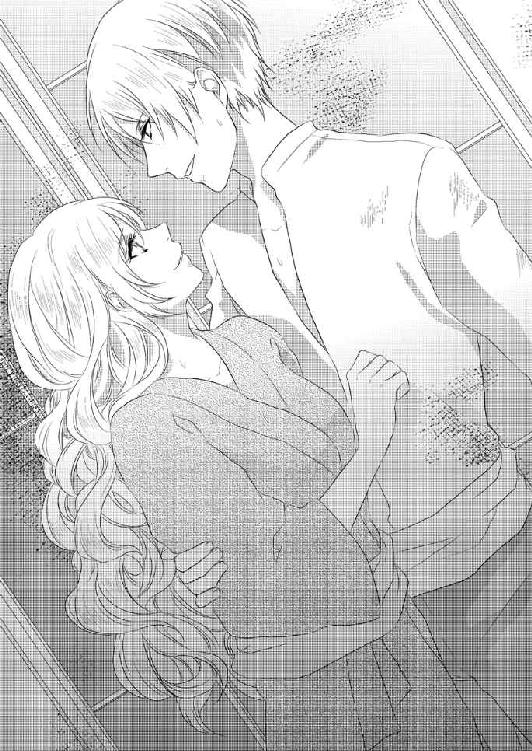
しかし熱い、と感じて目を開けると、目の前に炎が揺らめいていて、危うく悲鳴を上げるところだった。
飛び降りた出窓には、もう火が回っていたのだ。移動したのとは反対側の手摺りを這う炎。熱いし怖い。しかしなんとか声は出さないように頑張った。
フランツは間合いを計って、ぎりぎりまで炎に近づいていく。そして「行くよ」と囁いて、そこからまた飛び移った。炎を掠めて。
移った先は別のバルコニーで、幸いまだ炎は回っていなかった。しかもちょうどここは湖に張り出すように造られている。ようやくアナもフランツの意図を悟った。
「でも飛び込んだら彼らに見つかってしまうわ」
「大丈夫。今は崩れ落ちた木くずなどがどんどん湖に落ちているから、少々音がしても気づかれない」
紐を解き、今度は余裕を持って腰に結んだ。
「こうしていれば、手が離れても君を引き戻せる。深く潜るからしっかり深呼吸して」
と指示される。胸を大きく膨らませ、ぎりぎりまで息を吸い込んで止めた。
「いい子だ」
いい子だと言ったあとで、フランツはアナをぎゅっと抱き締めてキスをした。
「必ず助ける」
きっぱりと告げると、アナを抱えたまま手摺りを蹴って飛び出した。可能な限り遠くへ。腕の中のアナに微笑みかける余裕さえある、長い滑空だった。
ほとんど水しぶきもなく、いきなり水の中に沈む。衝撃と水圧で、せっかく肺に溜め込んだ空気が押し出される。苦しくなりもがいて浮上しようとしたのを、フランツが止めてくれた。そして唇を合わせて、自らの息を吹き込んでくれたのだ。
僅かなそれが、アナを落ち着かせた。今湖上で水音をさせたら、連中の注意を引いてしまう。危ないところだった。
もう大丈夫と彼の手を握って合図し、二人して潜水したまま湖の中を移動した。
ぎりぎりまで息を我慢して、もう限度だとフランツの腕を引っ張って合図する。彼に支えられ、そっと首だけを水の上に出した。
急いで息を吸い込んで、再び潜る。さらに遠ざかって、浮上したのはちょうど湖の真ん中辺り。叫び声が上がらないところを見ると、どうやら気づかれずにすんだようだ。
立ち泳ぎをしながら振り向いて見た館は、すべての窓から炎が噴き出して、ごうごうと燃え盛っていた。もう少し決断が遅かったら、今頃は炎に呑み込まれていたかもしれない。
出窓で危うくその炎を跳び越えたこと思い出して、アナは今さらながらぶるっと震えた。フランツが励ますように抱き締めてくれる。
炎に照らされて、放火犯たちが影絵のように浮かび上がっていた。まだ先ほどの場所にいる。抜け出さないように見張っているのだろう。
「侍従や馬たちが気にかかるが......」
フランツが沈んだ声で呟いた。今は手の打ちようがない。自分たちのことで精いっぱいだ。
「さ、行こう。とにかくここから離れなければ。君が泳げてよかったよ」
フランツに導かれ、岸辺に上がる。びしょ濡れで、疲れきっていた。
「もう少し頑張って」
励まされ、抱えられるようにして歩いた。森の手前に大理石の天使像が建っていた。その台座の前に膝をついたフランツが、刻まれた文字を幾つか弄ると、いきなり像が動いて下へ下りる階段が現れた。
「これは？」
「秘密の通路だ。万一のときの脱出路。まさか本当に使うことがあるとは思わなかった」
感慨深そうに言ったフランツに従って階段を下りる。下りたところにカンテラがあり、明かりを灯したフランツが壁際の仕掛けを触って入り口を閉ざした。
「こっちだ」
フランツに手を引かれて通路を進む。どこかじめっとした空気が、濡れた肌を震わせる。辿り着いた先に木のドアがあり、くぐり抜けると暖炉やソファを備えた部屋になっていた。反対側にまた扉がある。
誰のものなのか、壁にかかっていた毛皮のマントを取ると、フランツはアナに手渡した。
「濡れたままでは風邪をひく。これに着替えて」
「あなたは？」
「そんなやわじゃない」
笑ってフランツは周囲を見回した。
「ここで朝まで過ごしてもいいのだが。......アナ、疲れた？ もう動けない？」
濡れたガウンを脱ぎ捨てて毛皮のマントを着込んでいたアナは、顔を上げてフランツを見た。
「疲れているけど、でも大丈夫よ」
「できれば先に進みたい。ここはまだ彼らに近すぎる」
万一この隠れ家を知っている者がいたら袋の鼠だ、と苦々しく言うフランツは、常に最悪のことを考えて動いているのだろう。
「だったら行きましょう。この先はどこに繋がっているの？」
入ってきたのとは反対側のドアを開けたアナは、暗い通路を覗き込んだ。
「森番小屋だ。よし、行ってみよう」
アナの様子を注意深く見て大丈夫だと判断したのだろう。フランツがアナの隣に立った。マントのフードを頭に被らせ、ちょんとキスを落としてから、手を差し伸べる。
カンテラの明かりを頼りに、それからどれだけ歩いたのか。フランツの話では森の半ば辺りまで通路は続いているらしい。労りながら歩いてくれたので、なんとか歩き通せた。
ようやく辿り着いた通路の端はまた階段になっていた。カンテラを掲げるとその上にドアがあるのがわかる。
「ここで待っていて」
フランツはアナにカンテラを渡し、階段を上ってドアの向こうの気配に耳を澄ませた。そうっとドアを開け慎重に気配を探ってから、アナを手招きする。
森番小屋は、二つのスペースに分かれていた。今出てきた小部屋と、仕切られた向こうの居住スペースと。
向こう側には人が住んでいる気配があった。部屋の隅に薪が積み上げてあり、竈には煮炊きのあとが残っている。ベッドは、寝起きで慌てて出て行ったかのように乱れていた。
「森番は留守のようだ。ちょうどいい」
そう言ったのは、森番が敵か味方か判断できないからだろう。
アナの手を握ったまま小屋を出ようとしたら、いきなり正面のドアが開いた。毛皮の帽子を被り毛皮のチョッキを着込んだ髭もじゃの男が、目を丸くしてフランツたちを見ている。
咄嗟にアナを庇ってフランツが前に出た。緊張の一瞬のあとで、男は顔をくしゃくしゃにして破顔すると、背後を振り向いて叫んだ。
「クラウス様！ 殿下がこちらにおいででしたよ！」
バタバタと駆け込んできたのは、鴨居に頭がつきそうな大男、クラウスだった。フランツたちを見て、その場で固まり、一瞬ののち崩れるようにその場に膝をついた。
「よくご無事で......、公女も......」
そのあとは声も出ないように顔を伏せている。嗚咽を堪えているらしい。フランツは困ったようにアナと顔を見合わせたあとで、歩み寄って肩を叩いた。
「心配をかけた」
「本当によろしゅうございました。こんなことなら、もっと強い言葉でお引き留めするのだったと......」
館の異変に気づいて駆けつけた森番は、妙な輩がいたのでひとまず撤退し、駐屯地に知らせに行く途中でクラウスに出会ったのだという。
経緯を聞いて、フランツの表情が引き締まった。
「何人連れてきている」
鋭い問いに、クラウスもそれまでの憂い顔を一変させ、きびきびと答えた。
「七名ほどです」
「十分だ。不埒な放火魔を捕らえに行こう。ほかの者に告げておけ」
「はっ」
クラウスが急いで出て行った。
「アナ、君はここで待っていて。必ず捕らえて帰ってくるから」
異議を唱えようとしたアナの唇を、そっと人差し指で押さえる。
「ここまで、愚痴一つ言わず従ってくれた君の勇気には脱帽している。だがこの先は戦いの場だ。私に任せて。待つのも君の仕事の一つだよ」
最後は悪戯っぽい口調で締めて、悲愴感を吹き飛ばす。
「私と部下でかかれば、放火魔など蹴散らしてくれる」
ぎゅっと抱き締めて、傍らに控えていた森番を振り向く。
「アナ公女を守ってほしい。頼めるか」
「もちろんですとも」
森番は大きくうなずいて胸を叩いた。
「ということなので、アナ、行ってくる」
これ以上は止めても無駄と思ったので、アナは従順に彼の抱擁を受けた。
「ご武運を」
自ら背伸びして口づける。湖に飛び込んでからこちら、服を乾かす暇もなかったので、フランツの着ている服はじっとりと濡れている。当人は感じていないようだが、正直な肌は鳥肌を立てていた。それに気がついたアナは森番に聞いてみる。
「何か着替えはない？ フランツ様が着られるような服」
「かまわないから......」
と言いかけたフランツに森番は満面の笑みを見せた。
「ございますとも。あなた様ご自身の服ですよ」
そう言って、櫃の中からシャツやビロードの上着、ズボンなどを取り出した。
「覚えておいでですか。森番を拝命したときに頂戴しました。むさ苦しい森番になるな。晴れの席には晴れの衣装を着ろとのお言葉と共に」
「私はそんな気障なことを言ったのか」
面映ゆそうに頬をかいてから、フランツは森番の差し出した衣装に手早く着替えた。森番はさらに剣も差し出してきて、軽く振って感触を確かめたフランツは、森番に微笑みかける。
「助かった。私の剣は湖の中に落としてしまったのだ。......あとは頼む」
と言い置いて、最後にアナを一瞥すると、くるりと背を向け大股で外に出ていった。命令を叫ぶ声、馬のいななき、一斉に跨る気配、そして走り去る蹄の音。
耳を澄ましていたアナは、しんと静まり返った外に背を向けて、森番の勧める椅子に崩れるように腰を下ろした。正直、立っているのも辛いくらい疲れきっていたのだ。それでもフランツと行くのなら気力を振り絞っていただろうが。
あとは彼の無事を祈るだけ。
森番がお湯を沸かして温かい飲み物を入れてくれた。
「ありがとう」
両手に包み込んで少しずつ啜る。フランツが無事に帰ってくるまで、長い時間になりそうだ。
馬を走らせながらフランツはクラウスの報告を聞いた。フランツに出奔された直後は、不在を取り繕うために苦労したという。ところが使用人の一人に不審な行動があり、調べてみると、先のクーデターで捕まった身内がいるらしい。
クラウスはフランツの行き先を男がどこかに知らせたと確信し、危機を感じて直ちにこちらに向かったのだと告げる。
「急いだので人数が揃わないままで、申し訳ありません。ですが知らせは送っておいたので、程なく近衛隊も駆けつけてくるはずです」
「この人数で十分だ。それどころかよく来てくれた。礼を言う」
「もったいないお言葉」
そんなやりとりをしている間に森を抜け、湖の畔に着く。正面にまだ炎を上げている建物がある。裏手に従者たちの宿舎や馬小屋などもあり、安否が気遣われた。
「生存者がいてくれたらいいのだが」
フランツは自らの力不足を痛感しながら、厳しい表情でここからは見えないその場所を睨む。
東の空が薄明るくなってきた。隠密行動ができる時間は限られている。馬を下り、物音を立てないように静かに近づいていった。
放火魔たちは、さっきと同じところにいた。思い通りに事が運んで、油断していたらしい。
逃がさないように左右から挟み撃ちにし同時に襲いかかったら、あっけなく捕まえることができた。口々に喚いている男たちを縛り上げて、顔を隠していた覆面を取り去ると、見覚えのある顔がある。先に逮捕されて牢にいる従兄弟たちの、従者だった男だ。
姿を現したフランツを見て驚愕した彼らは、次の瞬間面を伏せた。失敗を悟って悔しそうにしている。
遅ればせながら、近くの駐留部隊が駆けつけてきた。少し遅れて近衛隊も。焼け落ちた建物を見て皆が絶句している。
手分けして、周辺を捜索した。その結果、別館の従者たちは眠らされていただけで大事ないとわかる。厩舎にいた馬たちも外に引いてこられた。
フランツは愛馬と再会し、無事でよかったと抱き締めてやる。
太陽が東の地平線上に昇り始めた。後始末を近衛隊らに任せ、フランツはアナの元に引き返すことにした。アナをアガサの元に送り届けなくてはならない。
漆黒の愛馬に跨り、森番小屋に向かった。クラウスと数人が従う。
小屋に帰りつくと、アナはベッドで丸くなって眠っていた。
「お疲れだったのでしょう。お茶を飲んでいる途中でこくりこくりとされていたので、少しお休みくださいとお勧めしました」
「そうか、ありがとう」
フランツは、ベッドの傍らに膝をついた。毛皮のマントにくるまったアナは、天使のように清らかで美しかった。自らが冒した危険が蘇り、あの炎の中、この命を守り通せてよかったと、しみじみ述懐する。
彼女をなんとしても助けるという強い意志がなかったら、途中で諦めていたかもしれない。
自分は彼女のためなら、世界を敵に回してもきっと勝てる。
そうっと抱き上げたのに、アナがぼんやり目を開ける。しまった起こしてしまったと覗き込むと、寝起きの顔で「フランツ様？ お帰りになったの？」とアナが呟く。
「そうだ。待たせてすまなかった」
「ご首尾は？」
「もちろん全員捕らえた」
するとアナはにこっと笑った。
「信じていましたわ」
それだけ言うとまたすーっと眠ってしまう。愛しすぎてどうしようかと思った。
抱えたまま外に連れ出し、クラウスの介助を受けて馬に乗せた。後ろからしっかり抱きかかえ、再び起こさないように細心の注意を払いながら宿舎に連れ戻る。
毛皮のマントにくるまれたアナを見て、アガサは目を丸くしていた。
「いったい何が......」
「今日はここにとどまるよう指示を出しておいた。アナをゆっくり休ませてやってほしい」
そんなに無理をさせたのかと眉を吊り上げたアガサに、フランツは簡単に事情を説明する。
「危険な目に遭わせてしまって、本当に申し訳ない。不徳の致すところです」
と真摯に謝罪した。アガサは困惑しきった顔をしている。
「なんと言っていいか。無事に連れ帰ってくださったのだから感謝すべきなのでしょうけれど。この先の安全は保証してくださるのでしょうね。アナは大切な妹なんです」
「もちろん。命に代えても守ります」
「それと、花嫁について誤解があることは？」
「アナから聞きました。その件も到着までに考えておきます」
きっぱりと請け合って、ひとまずその場をあとにする。寝ているアナを一目見てから、フランツは急ぎ足で部屋を出た。結婚式までに目処をつけなければならないことばかり。
クラウスが首を傾げている。
「なんのことです？ 花嫁がどうとかとは」
「私の花嫁はアガサ公女なのだそうだ。アナは付き添い役だと」
「......そんな馬鹿な」
さすがのクラウスが絶句している。
「私もそんな馬鹿なと言いたい。どうして間違いが起こったのか調べて、正さなければ」
だが国の正式な交渉で成立した婚姻だ。果たして覆せるのか。
クラウスがそう考えていることは、顰めた顔つきから察することができた。フランツも危惧は抱いている。だが、花嫁にしたいのはアナなのだ。なんとかしなくては。
馬を走らせて首都に帰る間、フランツはずっと考え込んでいた。
第五章 祝福のバージンロード
目を覚ますと、すぐ側でアガサが心配そうに覗き込んでいた。
「アガサ？」
頭がぼうっとしていてちゃんと考えられない。
「大冒険だったそうじゃない、昨夜は」
悪戯めかして言われ、ようやく意識がはっきりしてきた。がばっと身体を起こす。昨夜身につけた毛皮のマントのままだ。前がはだけそうになって、慌ててかき合わせる。
「フランツ様は？」
「先に首都に帰られたわ。あなたを迎える準備をするために。ね、言ったとおりだったでしょ。あの方はアナしか見ておられないって。よかったわね」
祝福されると、じわりと喜びが湧いてきた。
「アガサ、本当にありがとう。わたしを連れてきてくれて」
抱きついて、頬にキスをした。
「わたしもほっとしているわ。でも、これからどうやってわたしとあなたを入れ替えるのか、それが心配よ」
「きっとなんとかしてくださるわ。わたし昨夜あの方と一緒にいて、つくづく感じたもの。もう駄目かと思ったときでも、どうにかしてしまう方だったわ」
アナは火に追われて逃げ惑った話をした。バルコニーから飛び移ったこととか、結局湖に飛び込んだことなど。思い出してみるとよく無事だったとアナ自身感じる。
聞いていたアガサは、途中から真っ青になった。フランツから触りだけ聞いたものの、そこまで切迫していただなんて思いもしなかったのだ。襲撃をさらりと躱した印象だったのに。
「アナ......」
考えるより先に妹を抱き締めていた。
「あなたがそんな危険に遭遇していたというのに、わたしったら知らないで寝ていたなんて」
双子なのにどうして危機感を感じなかったのかしら、と悔しそうに言ったアガサを、アナは抱き締め返し、宥めた。
「結局それほど危険じゃなかったのかも。フランツ様がちゃんと守ってくださったから」
そのまま二人はしばらく抱き合って、お互いの温もりに癒しを求めた。望んだ結婚とはいえ、二人の間には間もなく距離ができて、こうして抱き合うこともできなくなるのだ。
「手紙を書くわ」
アナが言うと、アガサもうなずいた。
「わたしも書く」
「わたしたちはいつも一緒よ」
「もちろんだわ」
真情を吐露し合ったあとはなんとなく恥ずかしくて、アナは視線を泳がせながら湯浴みをしたいと言い出した。
「火事で煤を被ったり、湖で泳いだりしたそのまんまだから」
アガサは待っててとアナを置いて部屋を出ると、風呂の準備をさせた。
運び込まれたバスタブでゆっくり湯に浸かり、ほかほかに茹だって出たあとは軽い食事を取り、再びベッドに押し込まれた。
「休ませてあげてくださいって、フランツ様に言われたもの」
アガサは悪戯っぽく言って、アナがベッドから出るのを許さなかった。元気そうにしていても、疲れがまだ取れていないのがわかっていたからだ。
その日一日横になったおかげで、だいぶ疲労は抜けていった。体調を最優先してくれたフランツの気持ちが、アナの心を温める。
翌日から再開された花嫁行列では、健康そうなピンク色の頬をした同じ顔の公女たちが、にこやかに沿道の人々に手を振っていて、それがハイランドの人々の心をとらえるのだった。
やがて花嫁行列は首都に到着する。都の門は大きく開かれ、美々しく装った近衛隊が整列して花嫁を出迎えた。王宮の前には、皇太子の紺と金の正装を纏ったフランツが、国王と共に待ち受けていた。
すらりと伸びた逞しい身体に、その衣装はとてもよく似合って眩いばかりに輝いていた。馬車の中の公女と見比べて、美男美女だと沿道の人々の熱狂はますます高まっていく。
馬車列は優雅にだく足を踏みながら進み、国王とフランツの前でぴたりと止まった。御者の熟練がうかがわれる。
フランツが進み出て馬車のドアが開くのを待ち受けた。最初に出てきたアナに、続いてアガサに手を差し伸べ、馬車から降りるのに手を貸す。公女たちはフランツの左右に立ち、一緒に国王の前に進み出た。
「アガサです」
「アナです」
二人一緒に優雅にスカートの端を摘んでうやうやしく礼をする。続いてアガサが国王にエスコートされ、アナはフランツと一緒に、深紅の絨毯を踏んで王宮に向かった。
その光景に、居並ぶ人たちの間には当惑が広がっている。花嫁はどちらなのだ、という。国王がエスコートしている公女か、はたまた皇太子がエスコートしている方か。
全く同じ顔の公女たちを誰も見分けられないのだ。
リリエンタールの貴顕たちはこそこそと囁き交わしながら、王族のあとに従った。
こうしたことは、前夜フランツから来た手紙で指示されていた。極力二人の違いを際立たせないように、そしてできれば人々を幻惑するようにと。
何か考えがあってのことと、アナもアガサも素直に従っている。
玉座の間で、歓迎式典が行われた。ドーム型の天井にはフレスコ画が、壁は白い漆喰に金の装飾が巡らされている。カーテンはどっしりした深紅に金の房飾りがついていた。豪華で華やかな部屋だった。
公式行事はそれだけで、あとは結婚式の準備となる。アナとアガサに用意されたのは、真ん中のドアで行き来できるコネクティングルームだった。双子が離ればなれにならないようにというフランツの配慮を感じる。
淡いピンクと白の壁紙は、もともとは王女のために設えられた部屋だかららしい。ドレッサーやベッド、その他の家具類もパステルカラーで装飾されていた。
内心の不安を抑えて、侍女たちが用意してくれたお茶を飲んでいると、正装から日常の宮廷服に着替えたフランツがやってきた。瞳に合わせたのか青紫色のサテンの上着に少し濃い色のウエストコートを着込んでいる。
フランツは水入らずでひとときを過ごしたいと侍女たちを下がらせ、おもむろに宰相と話した結果を告げた。
「宰相は『アガサ』と聞かれて単純に『Ａ』はアガサなのかと思ったそうです。もし『アナ』と先に言われていたら、そちらにうなずいていたとのこと。何か問題がありましたかと聞かれて、何もないと言っておきました」
「何もないってそんな、大ありではないですか！」
呆れたアガサが抗議しようとするのを、フランツが遮る。
「宰相は知らない方がいいのです。私が立てた計画では」
「え？」
首を傾げる公女たちにフランツは、彼の計画を打ち明けた。このまま変更せずに結婚式を挙行すると。
「今さらアガサと結婚するとおっしゃるの？」
今度はアナが気色ばんで抗議する。それをフランツが制した。
「私は『マルガリータ・Ａ・ゴトフリー』と結婚するのです。結婚申込状にはそう書いてあるから、なんの問題もない。どうです？ 違いますか？」
しれっとした顔でとんでもない欺瞞を告げるフランツに、アナもアガサもぽかんと彼を見つめるばかりだった。
「で、でも、そんなの。許されるはずが......」
アナが詰まりながら抗議する。
「誰が許さない？」
アナは何か言わなくてはと焦ったが、アガサに先を越された。
「ええ、そうね。誰も気がつきませんわ。わたしたちを見分けられるハイランドの侍女たちはここにいないんですもの。ねえ、アナ」
熱心に請け合って、アナに同意を求めてきた。リリエンタールの侍女たちは、しょっちゅう間違えているしとアガサは続ける。
「フランツ様は、あの最初のときを除いて、絶対に間違えたりなさいませんね」
「それは、想いの深さですよ。反省しましたから」
にこりと笑うフランツにアナは口籠もる。
「確かに気がつかないかもしれないけれど。......でも、騙すことになるわ」
うなずいていいのかいけないのか、なんだか頭がぐるぐるしてくる。道義的に考えればいけないことだ。ハイランドの人々を、そしてフランツの両親を騙すわけだから。良心がちくちく痛む。でもそうすればフランツと結ばれる......。
フランツがクックッと笑いながら、指を振ってアナの指摘を否定する
「誰も騙したりしない。何度も言いますが私が結婚するのは『マルガリータ・Ａ・ゴトフリー』という名のハイランドの公女なのです。アナ、君の洗礼名は『マルガリータ・Ａ・ゴトフリー』だろう？ 違う？」
「それは、そうですけれど」
双子が産まれたときの習慣で、名前は一つしかない。公式文書にはアナもアガサもそう書く。
「あなたが祭壇で書く結婚誓約書に、堂々とそう書けばいいだけです。何も問題はない」
断言されて、それでもうなずくのを躊躇っていたアナの前に、それまでにやにやしていたフランツがふっと真剣な顔になり膝をつく。
「アナ、心から願う。私と結婚してほしい」
そう言って両手を取り、左の薬指にキスをした。
「ここに私の指輪を嵌め......」
それから掌を裏返して、そこにもキス。
「ここに私の気持ちを受け入れて......」
続いて手を握ったまま立ち上がり、見上げたアナの額にキス、さらに甘い魅惑の眼差しで誘いながら、両方の頬にキス。
キスのたびに肌が震え、頭の芯が痺れたようになって、身体の中心に火が灯った。何度も彼の愛撫を受けた場所が疼き始め、アナは頬を赤らめそわそわと視線を逸らす。
そうしてなんとか目を逸らしても、フランツの神秘的なバイオレットの瞳はどこまでも追いかけてきて、逃げられない。意識がぼうっとし始め、自分が何を拒んでいたのかわからなくなってきた。
「返事を、アナ」
促されたときには、フランツの唇は今にもアナのそれに触れそうな距離にあった。吐息が唇を掠め、ぞくりと疼く。今度はちゃんとしたキスをされるのかと身構えたら、右の端、左の端とずれて、そこで止まった。
焦らされて、唇がうずうずする。すぐにでもフランツの口づけが欲しい。けれど彼は、アナがうなずかない限り、キスはしてくれないのだ。
「私は君が欲しい。君は私が欲しくないの？」
唇に息がかかる距離で囁かれ、情熱を宿した熱い瞳で覗き込まれる。それが、最後のとどめだった。この唇が欲しいと強く願う。
アナは降伏の吐息を漏らし、自ら残りの距離を縮めた。彼の首に両腕を投げかけ唇を押し当てる。降参だと態度で示したのに、フランツのそれは頑なに引き結ばれて緩まない。
どうして？ といったん唇を放して見上げると、フランツがおもむろに切り出した。
「それは承諾するということ？」
アナはこくこくとうなずいた。そして改めて彼の唇に自分のそれを触れさせたが、まだ彼の唇は硬いまま。これ以上どうしたら......。
困惑してフランツを見つめていると、ようやくフランツが条件を告げた。
「ちゃんと君自身の口から言ってほしい」
求められている言葉がわかった。アナは瞼を伏せ、自らの胸の覚悟を確かめる。そして目を開いたとき、揺るがぬ覚悟でその言葉を口にした。
「あなたと結婚します」
言ったと同時に、いきなりフランツに抱き上げられた。そのままぐるぐると振り回される。爆発的なフランツの歓喜の表現に巻き込まれ、目が回った。
「まあ、ちょっと待って、フランツ様。そんなにされたら......」
目眩がすると訴えようとした唇を、情熱的なキスで塞がれる。
「んっ、んんっ」
待ち焦がれたキスに、言おうとしていた言葉など吹き飛んで、そのまま夢中になって酔いしれた。
最初から舌を絡ませて、激しく貪り貪られる。かき抱かれ、めくるめく官能の世界に誘われた。強烈な疼きが込み上げて身体が震える。しがみついて、もっと、もっとと求めていった。
身体を押しつけて、こんなに熱いのだと訴える。して、今すぐというアナの心の叫びに、背中を撫で擦るフランツの大きな手が腰から下に伸びていく。
二つの膨らみを今まさにフランツの手が鷲掴みにしようとしたそのとき、「こほん」と遠慮がちな声に、冷水を浴びせられたようになり一気に陶酔から覚める。
「もうほんとごめんなさい。邪魔するのは無粋だと思ったんだけど、さすがにそれ以上はわたしも見ていられなくて」
「......ぁ」
アガサもいたのだったと今さらなことに気づかされ、そんなことも忘れて夢中になっていた自分が恥ずかしく、アナはフランツの胸に押し当てて表情を隠した。
フランツが大切そうにそんなアナを腕の中に庇い、アガサを見た。
「申し訳ない。つい嬉しくて夢中になってしまった」
「恋人同士なら当然ですわ。けど、恋人たちの、その、感情の発露はわたしには眩しすぎて」
照れたような響きを感じて、アナは恐る恐るアガサに目をやった。なんと顔を真っ赤にしている。本来赤らめるのは、こっちなのに。いや自分も十分に赤くなっているとは思うが。
フランツが優しくアナの肩を押しやった。
「さ、残り少ない時間、二人でたっぷり話をしておいで。式の準備は進めておくから」
アナははにかみながらうなずき、アガサを見た。彼女も照れながら微笑んでいる。互いに手を伸ばししっかりと握り合う。
自分の決断は、アガサにも大変な苦労を押しつけることになるのを、改めて認識した。ハイランドでは、アガサが結婚すると思われている。そこへ帰国するのだから、言ってみれば針の筵。それを承知で、アナに結婚を勧めてくれた姉の好意を強く感じた。
「ありがとう、アガサ、何もかも」
「何言ってるの。あなたがわたしでも同じことをしたでしょ。幸せになってね。大丈夫。お父様やお母様にはわたしがちゃんと話すわ。二人ともアナが幸せならってきっとおっしゃるはずだもの」
抱き合う姉妹を微笑みながら見ていたフランツは、その場でかちんと踵を合わせ正式な礼を取った。
「式の準備を急がせます。それまで名残を惜しんでいてくれたまえ」
きびきびと出て行く後ろ姿にアナは見惚れ、そんな妹にアガサも微笑んでいた。
ばたばたと日が過ぎて、いよいよ当日がやってきた。その間アナとアガサは用心深く振る舞っていた。おかげでハイランドの侍女たちはますます二人の区別に悩み、絶対に間違えないフランツに賛嘆の眼差しが向けられる。
晴天のその日アナが目覚めると、ちょうど吉例の花火が打ち上げられていた。大輪の花が結婚式当日であることを知らしめる。自分のために打ち上げられる花火。ふつふつと喜びが湧いてきた。
洗顔と朝食を済ませたあと、どちらでしょうと迷う侍女頭に微笑み、アナが一歩前に出る。いよいよ華やかな舞台が始まる。ほっとしたように会釈する侍女頭に導かれ、部屋に残るアガサに「いってきます」と挨拶を送った。アガサは胸許で小さく手を振って見送ってくれる。唇が「頑張って」と言っていた。
浴室で徹底的に磨かれ、ガウンを羽織った状態で化粧室に送り込まれる。侍女たちに取り囲まれ、化粧と髪のセットが始まる。
長い髪を結い上げられ、白い愛らしい花を散らされる。ベールにもその花が散りばめられていて、可憐な花嫁の雰囲気を盛り上げるアイテムになっていた。
健康な肌のアナには、薄化粧で十分だ。薔薇色の頬で微笑んだ彼女に、侍女たちが感嘆のため息を漏らす。
髪と化粧が終わると、いよいよドレスが持ち込まれた。ハイランドで作られた婚礼衣装だ。嫁いだあとはその国の衣装を着るのが慣例だが、式のときだけは生国のドレスを身につけることを許される。
アガサと二人で意見を出し合い作り上げたドレスだ。たぶんそのときからアガサには、今日のことが頭にあったのだろう。アナが打撃に打ちのめされている間も、アガサは先のことを考えていてくれたのだ。
下着をつけコルセットで身体を締められる。豊かな胸と細いウエストが、いやが上にも強調された。たっぷりのペチコートの上に、レースをふんだんに使った純白のドレスがふわりと被せられる。繊細な銀糸の刺繍と、縫い止められたダイヤが明かりに煌めいて、ほんの少し身動ぐだけできらきらと煌びやかな光を放った。
背中にあるボタンを留めてもらっているときに、身支度を終えたアガサがやってきた。アナの着ているウエディングドレスと意匠を揃え、やや簡略化したドレスを纏っている。色は花嫁に配慮したクリーム色。
アナを見るなり「まあ綺麗」とため息をつき、惚れ惚れと見つめてきた。
「ありがとう。あなたも素敵」
艶やかなピンク色の唇を綻ばせると、出来栄えを見守っていた侍女頭から叱責が飛ぶ。
「笑ってはいけません。口許に皺ができます」
慌てて表情を引き締め、澄まし顔をつくった。アガサがくすくす笑いながら、侍女が用意したスツールに腰を下ろす。
「下でフランツ様にお会いしたわ。そわそわしていらしたわよ。わたしについてそこまで来られたのだけど、侍女たちや衛兵に止められて」
アガサが楽しそうにその情景を描写してくれたので、アナもつられて笑いかけ、怖い顔をしている侍女頭に気づいて、再び急いで笑みを消す。
「さ、できました。あとはベールだけです」
結婚で皇太子妃になるため、リリエンタールの皇太子妃がつけるティアラとペアのネックレスが宝物庫から出され持ち込まれていた。ダイヤと真珠を散りばめた、清楚ながらゴージャスな装飾品だ。
ティアラを載せ、ネックレスをつけ、ベールを被る。ベールは裾を引くドレスよりもさらに長く、優雅に流れていた。
「さあできましたよ。本当にお美しい公女様で。皇太子殿下が待ち望んでおられるのも当然ですね」
それまで厳格に侍女を指図し、アナにも容赦なく駄目出しをしていた侍女頭が、ようやくほっとしたようにしみじみと見上げてきた。
ウエディングドレスに身を包んだアナは、事実輝くように美しかった。もともとの美貌に、豪華なドレス、華麗なベール、煌びやかな宝石類、それらすべてが合わさって、誰もが見惚れる素晴らしい花嫁に仕上がったのだ。
「本当に素敵」
ようやくそれだけ言って、感激したアガサが目許を拭った。それを見たアナもじわりと涙を滲ませる。
「いけませんよ。花嫁が涙を浮かべては。せっかくのお化粧が」
二人の涙を見て取った侍女頭が割って入り、その慌て振りに、しんみりした気持ちが吹き飛んだ。
出来上がった花嫁姿を、王室お抱えの肖像画家がせっせと写し取っている。肖像画は、両親の元に一枚が贈られ、そして王宮のギャラリーに飾られるのが一枚、計二枚描かれることになっている。ここでざっとスケッチして、あとで油絵に仕上げるのだそうだ。
やがて刻限がやってきた。侍女頭がベールを下ろす。このときを待っていたはずなのに、いざドアが開かれ式場へ向かう段になって足がすくんでしまった。
わたし、本当に花嫁になっていいのかしら、という一瞬の迷いだ。
「どうかなさいましたか？」
侍女頭に声をかけられて我に返り、心配そうにアガサが見ていたことにも気がつき、凍りついていた足がようやく一歩前に出た。
歩き出せばあとは普通通り。ドレスの裾を捌きながら階段を下りて礼拝堂に向かう。長いベールは汚れないように侍女たちに守られ、一行はしずしずと進んでいった。
礼拝堂の扉が大きく開かれる。祭壇のすぐ側には国王夫妻が並び、左右にはリリエンタールの貴顕がずらりと詰めかけて、華やかな式典を見守っている。アナが現れると、その美しさにざわめきが起こった。
バージンロードの先にいるフランツが、共犯者の笑みを向けてくる。彼は純白の、いつもより裾が長い上着を着込んでいた。前のボタンをきっちり留めている。
ベールの陰でアナも微笑み返した。
荘厳な音楽が奏でられる中、花嫁であるアナを連れてバージンロードを歩くのは、ハイランドの大使だ。大公の命令で見届け役を担っている。
さあ、ここからが正念場よ、とアナは気を引き締めた。大使はアナとアガサの区別がつくのか。差し出された大使の腕に自分の手を預ける。ベール越しにちらりと観察したが、特に違和感を感じている様子はない。
それでも短い距離を歩く間、緊張は緩めなかった。
フランツが待ち受ける場所まで来たとき、ようやくほっとする。ここから先は何があっても彼に任せておけば大丈夫だ。それだけの信頼をすでに彼に抱いている。
大使からフランツに引き渡されると、流れていた曲が代わり、パイプオルガンの音色がいっそう冴え渡った。
式は滞りなく進み、指輪の交換のあと結婚誓約書が差し出される。アナはしっかりした手つきでさらさらと署名した。『マルガリータ・Ａ・ゴトフリー』と。
すぐ側で介添えのアガサが、ほうっと長いため息をついた。やはり彼女も相当気を張っていたのだろう。だがこれで、すべての手続きが終わった。もう誰もこの結婚に異議を唱えることはできない。
アナはちらりとアガサと笑みを交わし、フランツにエスコートされて祭壇の前に戻った。
結婚の成立が宣言され、厳かな式が終わる。
アナはフランツと共にバージンロードを引き返して、礼拝堂を出た。新婚夫婦はそのまま王宮のバルコニーに向かう。
外苑には大勢の民衆が押しかけていた。そこへ二人が現れると歓声が沸き起こる。タイミングよく花火も上がって、祝福の嵐はいつ果てるともなく続いていく。
何度か手を振り歓呼の声に応えてから、アナとフランツはバルコニー脇の控え室に下がった。侍女たちがベールやドレスを整え座れるようにしてくれる。
背凭れのないスツールに腰を下ろすと、アナは小さく嘆息した。フランツが椅子を近寄せてくる。
「疲れた？」
「ええ」
「あと少しだから、頑張って」
そう言って、励ますようにアナの手を軽く叩く。
「あと少しって、まだ晩餐会があるのでしょう？ 一晩中って聞いたわ。王宮のだけでなく、市庁舎のそれにも出席するって」
式の流れは何度も繰り返し説明されている。王宮以外にも各地の市庁舎などで祝賀会が開かれていて、首都での祝賀会には、新婚夫婦が顔を出す慣例があるらしい。
ハイランドにはない習慣なので、聞いたときは王家と国民の間が近いのだなと感じたものだが。そうなると、ますます明け方まで解放されることはない。
するとフランツがくすりと笑った。
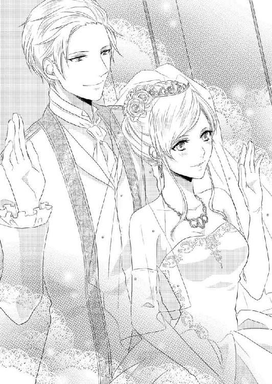
「それは建て前だよ。首都の祝賀会に参加するという名目で王宮の晩餐会を抜け出し、二人だけになるための」
「え？」
とフランツを見上げたアナの唇に、フランツがチュッと口づける。侍女たちがいるのに、と赤くなりながらそちらに視線を向けると、彼女たちは訳知り顔でよそを向いている。見てみない振りというのはこういうものなのだろう。
「粋な風習だろ。そもそも新婚夫婦にお預けさせるなんて酷じゃないか」
フランツは堂々と言っているが、それは夜の生活をほのめかす台詞で、アナはますます顔が上げられない。恥じらうアナが可愛いと、頬をさらりと撫でられた。弾かれたように顔を上げ、燃えるようなフランツの眼差しに気がついた。引力に引きずられ、ふらりと身体が揺れる。
それをフランツが抱き留めた。耳許に鼻先を擦りつけ匂いを嗅ぐ。
「いい匂いだ。堪らないな。このまま何もかも放り出して、君とベッドに籠もりたい」
呻くように呟いて嘆息した。掠れた声がフランツの本気度を伝えてくる。
お仕着せを着た従僕が晩餐会の開始を伝達しにやってきた。
「仕方ない。義務を果たしに行くか」
本当にしぶしぶといった風情でフランツが立ち上がるから、アナもくすりと笑う。侍女たちが立ち上がったアナのドレスやベールを整えた。
晩餐会の間アナの耳には、フランツの言葉がずっとこびりついていた。『このまま何もかも放り出して、君とベッドに籠もりたい』とか『新婚夫婦にお預けさせるなんて酷じゃないか』とか。
特に『新婚夫婦』という言葉は、何度蘇ってもうっとりしてしまう。考えてはいけない、と思うのにふわふわした気分が抜けなくて、何を食べたか、誰と話したか、ほとんど記憶にない。
やがて頃合いを見てフランツが立ち上がり、祝賀会の方へ移動すると告げて、アナと共に祝福の声の中退場する。六頭立てのお召し馬車が大玄関に待ち受けていた。フランツと乗り込むとドアが閉ざされ、ようやく二人きりになる。
ほんの少しの間だが、ほっとした。フランツがアナの肩を抱き寄せる。素直に頭を彼の肩に預け、しばしの休息を取った。
「言ってなかったが、綺麗だよ、アナ。皆が君の美しさに驚いていた。夫として鼻が高かったな。この素晴らしい女性は自分のものなんだと、声を大にして叫びたかった」
「あなただって。正装がとてもよくお似合いよ」
互いに褒め合ったあとで、おかしくなって笑った。
「市庁舎は顔見せだけで退散しよう、というか、絶対そうする」
きっぱり言ったフランツにアナは少し赤くなる。それが何を意味するかわかるがゆえの恥じらいだ。そこがまた可愛いとフランツは、彼女を抱き締めキスをする。
祝賀会が開かれている市庁舎は、王宮からなだらかな坂を下り、四方の道が合わさるところにあった。ゴシック調の重厚な建物だ。宴たけなわの最中に姿を見せたフランツとアナに歓声が沸く。名誉市民の称号がアナに贈呈され、フランツが謝意を述べた。
その後席が温まる暇もなく辞去を告げても、参加者たちは温かい拍手で送り出してくれる。
アナたちが出てくるのを待っていた馬車は、石畳の敷かれた路を港に向けて走りだした。そこに、今夜の宿となるこぢんまりした離宮があるのだ。
「一時間程度かかる」
そう告げながら、フランツがアナの手を取る。何をするんだろうと見ていたら、薬指の指輪に口づけたあとその手をいきなり自分の股間に導いた。突然そんなことをされ、あまつさえ思いも寄らぬ熱い塊に触れたことで驚愕したアナは手を引っ込めようとしたが、上から押さえつけられてかなわなかった。どくんどくんと脈打つモノに動揺する。
「......ここは馬車の中よ。外には護衛の兵もいるのに」
赤くなった顔で睨んでも、フランツはにやりとするだけだ。
「大丈夫。君が声を我慢してくれればわからない」
「そんな問題じゃ......」
なおもあらがおうとしたアナにすっと顔を近づけたフランツは、内緒話のように打ち明けてきた。
「実は結婚式で君を見たときから、ほぼ半勃ち状態でずっと我慢していたのだ。今二人きりだと思った途端我慢が切れた。君が魅力的なのがいけない」
腰に来る美声で口説かれては堪らない。アナの中にも期待と興奮が湧き上がる。それでも簡単には素直になれない。何しろここは馬車の中。外で警戒する騎士の声も聞こえるし、車輪の音や石畳を走るときの揺れが、アナを臆病にするのだ。
「とてもそんなふうには見えませんでしたわ。落ち着いていらしたし。そうよ、それにわからなかったもの......」
そこ、と口にできなくて口籠もる。今手で触れているフランツの命の膨らみ。
「上着の丈が長いのはなぜだと思っている。前ボタンがきっちり留まるデザインなのも。隠すためだよ」
くっくっとフランツが笑いながら明かした真実に、アナは目を丸くする。無意識に視線が下がっていた。
「わからないだろ、君が大きくした今でも」
その通りだからつられてうなずいて、アナは狼狽した。
「わたしったら、なんてはしたない......」
「いいんだよ、はしたなくて。それが駄目と言うなら、君が欲しくてこんなふうになっている私の方がもっとずっとはしたない男じゃないか」
アナは慌てて違うと首を振る。自分のことを欲しがってくれるのはとても嬉しい。
「同じだ。ね、だからかわいそうな私を慰めて？ 君のこの手で」
最後に見せた淫蕩な笑みに引きずられる。丸め込まれたという気がしないでもなかったが、アナ自身の触りたいという欲求が勝った。
恐る恐る布の上から握り込んでみる。ぴくりと動いた。驚いて手を放そうとしたが、フランツは許さなかった。
「気持ちいいよ、もっとして？」
アナの手を押さえる強引さとはうらはらに、肩を抱き覗き込む瞳は甘く蕩けるようだ。それに誘われ、ぎこちなく手を動かす。
「はあっ」
熱い吐息が耳朶を掠め、艶めかしさにぞくぞくした。自分の手が彼の快感を引き出しているのだと実感する。もっと気持ちよくしてあげたいという思いが自然に込み上げ、熱心に擦り続けた。
「そこ、もっと力を入れて」
フランツの指示通りにすると、昂りはますます大きくなっていく。押し込められたままでは苦しいんじゃないかと心配になった。
「じゃ君の手で出してやって？」
「どうやって」
当惑するとフランツが面白そうに笑い、アナの手をウエストに導いた。
言われるままもたもたとボタンを外し前立てを開く。下着をずらすとはち切れそうになったフランツのモノが飛び出し、アナの手を打った。
「おっきい」
考えるより先に言葉が飛び出して、慌てて口を押さえた。フランツが堪りかねたように笑い出す。くっくっと声を噛み殺しながらも笑い続けるフランツに、アナは恨めしげな視線を向ける。なんだか悔しい。
どうしたら笑うのをやめさせられるかしら......、と考えてぱっと閃いた。フランツが止める前に屈み込んで彼自身を口に含む。
「......っ、アナ！」
狼狽したようにフランツがアナを引き起こそうとする。いやいやと首を振って、彼の腰にしがみつき、懸命に大きなソレを頬張った。
やり方など知らない。ただ舌で嘗めたり吸ったりするだけ。自分がとんでもないことをしているという頭も、そのときのアナにはなかった。ただフランツの笑い声を止めたくて......。
「......んっ、......ふぅ......っぁ、くっ」
止めた笑い声の代わりに聞こえてきたのは、聞いているだけでぞくぞくするフランツの苦しそうな吐息。背骨から駆け上がったなんだかわからない感覚が、じいんと頭の後ろを痺れさす。
彼の指が髪の毛に差し込まれかき回された。セットが崩れるという意識はなかった。地肌に触れられてぞくぞく感はますます高まっていく。なんだかもやもやしてじっとしていられない。
アナは口淫を続けながらドレスの中でもじもじと脚を擦り合わせた。なぜかわからないが腿が合わさった場所が切ない。
髪の毛を触ったフランツの手がアナの顔に伸びてきた。頬や耳に愛しそうに触れている。アナが口にしたモノをちゅっと吸い上げると、その手がひくりと痙攣した。どうしたのかと口に含んだまま見上げると、フランツは眉を寄せ歯を食い縛って快感に耐えていた。
そのストイックな横顔に胸がきゅんとする。
もっとそんな表情を見たくて、いっそう熱心に昂りを嘗めしゃぶった。すると先端の方から粘つく液が滲み出てきた。一度口から出し、そこをしげしげと眺めてみる。するとまたたらりと溢れるモノが。
零してはいけないと慌てて舌で嘗める。と、もっと量が増えて......。
いっぱいに口に含んだものだから唾液とその液体で口の周りはべとべとになり、溢れて下の方まで濡らしてしまう。
啜ると妙な味がして、でも媚薬効果でもあるのか、それを飲み込んだあとはかっと身体が熱くなった。
昂りを出し入れしながら、合間にほうっと息を吐く。
「感じてる？」
掠れ声で言って、フランツが手を伸ばし息を確かめてきた。
「熱いな」
自分でもそう思う。なんとかして、とフランツに助けを求めると、フランツはアナの身体を抱え上げた。
「あ......っ」
しゃぶっていた昂りから放されて、アナは焦った。もっとしたいのに。
けれどもフランツに唇を塞がれて、すぐに意識を搦め捕られてしまう。角度を変え何度もキスを繰り返してから、フランツが苦笑しながら唇を放した。
「まずいものだな、これは」
すっかり蕩けた意識でフランツに身体を擦り寄せていたアナは、まずいと言われてぎくりと彼を見上げる。
「違う違う、キスのことじゃない。君が嘗めてくれていた先走りのことだ」
「さきばしり？」
首を傾げると、フランツが嬉しそうに笑う。
「本当に無垢のままなんだね。嬉しいよ」
チュッチュッと戯れにキスをしたあとで、秘密めかして先走りとは最初にでてくる液のことだと教えてくれた。
「気持ちいいとどんどん溢れてくる」
アナはとろんとした目で、剥き出しになっているフランツの逞しい熱塊を見た。濡れていて、見ている間にもまた先の方から滲み出ている。
「感じているの？」
「もちろんだよ。君のせいで早漏の汚名を着せられそうだ」
「そうろう？」
またわからない単語が出てきてアナが困った顔をすると、フランツが満足そうに頬を擦り寄せてきた。
「いいから君はこっちに集中して」
もう一度キス。口の中を嘗め回しながらフランツはアナの衣装を緩め、背中をサワサワと撫でた。背筋に何度か震えが走り、アナは「んっ」と首を振った。
「わたしも、したい......」
さっきまで口にしていたモノ。それで感じたとフランツが言ってくれた行為を。
「あとでね」
軽くいなして、フランツは背中から前に手を回してきた。同時にアナの体勢を変え、膝の上に乗せてしまう。後ろが緩んでいるから、レースに包まれた胸をフランツが触るのになんの障りもない。
最初は布の上から触られてもどかしさに喘いだ。
「敏感だね。もう硬くなっているよ」
ピンと乳首を指で弾かれて「あん」と声が出る。指先で硬くなったそこを弄られる。揉んだり摘んだり引っ張ったり。そのたびに息を詰めて身悶えた。
やがて、胸を覆っていたレースが引き下ろされる。豊かな胸が露わになった。
「綺麗だ」
感嘆の声と共に、フランツが顔を伏せてきた。乳房を含まれ強く吸われると、「あ、あ」とあられもない声が出てしまう。もう一方は指で弄られ続けているので、どちらも気持ちよくてもうどうしていいかわからない。
悶えて髪を乱しながら仰け反った。するとますますフランツの口に乳房を押しつけるようになって......。
「可愛い」
「いや、言わないで」
フランツはさらに技巧を尽くして胸を苛めながら、一方の手でドレスを捲り上げる。軽やかなレースがふわりと広がった。もじもじと脚を擦り合わせる様子が、フランツにも見えてしまう。
「すごいな。ドロワーズに染みができているよ」
ちょんと脚の合わせ目をつつかれて、「やんっ」と身を捩った。自覚していたから、暴かれて指摘されると、羞恥でかあっと熱が上がる。
「恥ずかしがらないで。さっきは私の熱り立っているモノに触れただろう？ 先走りも君に見られたし」
「......でも」
「君の場合はその恥じらいも初々しくていいけど」
でももっと感じてくれたら嬉しい。そう言って、フランツはさらなるアナの弱みを探し始めた。胸を代わる代わる愛撫されながら、下方を彷徨っていた手がドロワーズの中に侵入してくる。熱くて堪らない場所が空気に晒された。それで沈静化するどころか、フランツの手がさらに熱を高めるような行為を仕掛けてくるのだ。
ふっくら盛り上がった場所の恥毛を梳き、指で花びらを撫で擦る。堪らず奥から溢れてくる蜜液を指にとって、アナの前で振って見せたりした。
いやいやと羞恥で顔を覆うと、フフフと笑ってその手はまたアナの秘処に伸びていく。指先で輪郭を撫でてから、ゆっくりと奥へ沈み込んでいった。痛みはない。ただもどかしいだけ。
そうしてアナは、自分の真の欲求は指などではなく、ついさっき口に含んでいたあの逞しいものなのだと唐突に悟った。奥深くまで満たされて絶頂に至った記憶が、ふつふつと蘇る。最初は何もわからず、彼が侵入してきたときは痛くて......。
でも巧みに宥めて快感に導いてくれた。そのあとも、気持ちいいことばかりされて。
あれが、欲しい。
「見えないからもどかしいな」
指を揃えて奥を弄っていたフランツが呟き、ふっと笑いかけてきた。いきなり腰を抱えられ、座席に戻される。抵抗を思いつく間もなくスカートをさらに押し上げられ、脚を広げられた。そして先ほど自分が膝をついたように今度はフランツが床に腰を落とし、あられもなく開かされた中心に顔を近づけてくる。
「いやっ」
さすがにそれは耐えられず、脚をばたつかせて逃れようとしたら、フランツが下から悪戯っぽく見上げてきた。
「いいのかな？ 騒ぐと気づかれるよ」
そのタイミングで、外から護衛の騎士が声をかけてきて、アナは冷水を浴びせられたように固まった。
「お疲れでしたらどこかで休憩を取りますが」
硬直したアナに笑って見せてから、フランツは「必要ない」と返事をした。「失礼いたしました」の言葉を残し騎士が離れていく。
身体はまだ固まったまま、アナは小さく息をついた。心臓が破裂しそうに高鳴っている。自分のこのあられもない姿。純白のウエディングドレスを乱され、胸は剥き出しだしスカートは捲り上げられている。ストッキングに包まれた脚を抱えられ、ドロワーズも引き下ろされて淫らな様を晒して。これを見られたら......。
「ほらね。だから静かに」
しいっと人差し指を唇に当ててアナの抵抗を押しとどめながら、ついに彼が秘処にキスをしてきた。ざっと総毛立つ。肌がぴりぴりと敏感に震えた。
「......っ」
密やかな部分にフランツの舌が這う。繊細な花びらも小さな突起も、そして淫らに蜜を溢れさせている秘裂にも舌が伸びてきて嘗められた。尖らせた舌がさらにその奥まで浸入し、熱い粘膜まで餌食になる。ぞくぞくとした快感が腰から背筋を駆け上がり、脳を灼く。
声を我慢するように言われているから、必死で喘ぎ声を喉の奥に押し込める。するとますます身体が熱くなって、些細な愛撫にもひどく感じてしまった。
「君はここも綺麗だ。見せてあげたいよ」
白く濁ったような意識の中でも、なんてことを言うのかと、慌てて首を振る。
「そう？ 嫌なの？ 見たくない？ 残念だな。本当に素敵なのに」
そうしてまたフランツしか許したことのない場所を舌で蹂躙され、悦楽の渦に叩き込まれる。やがて、舌でたっぷり濡らされとろとろに蕩けた場所に、熱い塊が押しつけられた。
じりじりと侵入してくるそれを、アナの内部は嬉々として迎え入れ、蠕動して奥へ引き込んだあとは、放さないと締めつけた。
「ああ、いい。上手に呑み込めたね」
フランツはアナの受けた衝撃を和らげようと、すべてを納めきったまましばらく動かなかった。その間にキスをしたり剥き出しの乳房を愛撫したりして、快感を高めていく。
ドレスを着たまま、頭にはベールを被ったままの花嫁姿で、アナは淫らに蕩けていく自分をどうしようもなかった。
強靱な腰が、馴染んだ頃を見計らって動き始める。初めはゆっくり、次第に勢いを強め、ときにはグラインドしたりしてアナの反応を確かめた。
繊細な場所がフランツの薫陶を得て、妖艶な組織に開花する。自ら中を絞り込み、灼熱を味わい、引き出そうとするフランツに抵抗する。抽挿が激しくなるにつれ、アナも忘我の境地に引きずられていった。
何も考えられない。貪欲にフランツに与えられる快楽を取り込み、もっとと喘ぎながらその魅惑的な肢体を駆使して彼を煽る。潤んだ艶めかしい眼差しでフランツを誘い、甘い吐息で彼の情動をかき立てた。
「声、出、ちゃう......っ」
必死で訴えると、フランツはびっしょり汗をかいた顔で獰猛に笑う。
「かまわない。世界中に聞かせてやればいい。君がどれだけ感じているか、その声が天上の美声にも劣らない素晴らしいものであることも」
いやいやと首を振ったのに、フランツはかまわず攻め立てた。せめて自分の掌で塞ごうとしたのに、その手も押し退けられ、聞く人の官能をかき立ててやまない声を引き出されてしまう。
「あ、あ......んっ、あぁぁ、やぁん......つぁ......、はぁ、ぁぁ......」
嫋々と零れ出る艶声は、またフランツも追い詰めていった。
「......っ」
王子らしからぬ悪態をついてなんとか踏み止まろうとしたのに、
「フランツ、様......」
名前を呼んでしがみついてきたアナを見た途端、すべての我慢が吹き飛んでしまう。ぎりっと歯軋りをしながら、せめて一緒にといっそう奥深くを穿つ。アナの乳房を揉みしだき追い上げた。
腰を震わせて中にすべてを注ぎ込んだとき、アナもまた最後の階を駆け上がっていた。
静まり返った馬車の中で、しばらくは二人の荒い息が空気を乱し続ける。
やがてフランツが身を起こし、アナの中から自身を引き出した。
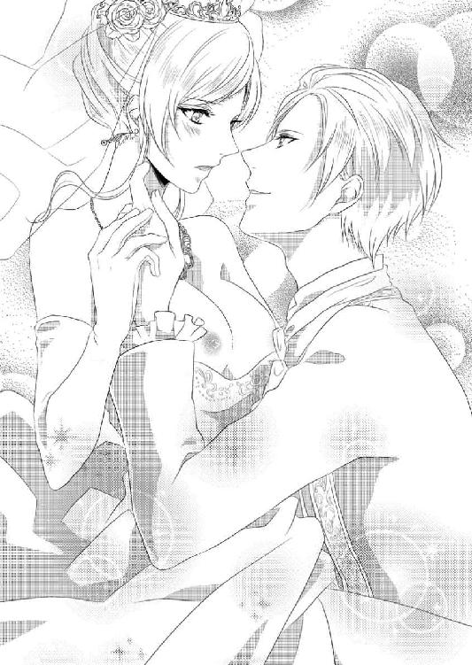
「......ぁ」
あえかな声にフランツの身体がぶるっと震えた。達したはずの性器がまた力を持ち始める。それを強い自制心で押しとどめ、フランツはアナを抱き締めると狂おしく顔中にキスを降らせた。
「素敵だった。君は本当に素晴らしい。自制心がない私に、自分でも呆れている。君のために薔薇の花びらを散りばめた風呂やベッドを準備させておいたのに。花で溢れる寝室も、豪奢な夜着も。珍しい果物や最高級のシャンパンも。それなのに我慢できずにこんなところで挑んでしまうなんて」
繰り言を言いつつも、素敵だった、綺麗だったと何度も繰り返しアナを褒める。キスでぽってりと膨らんだ唇を、アナは綻ばせた。
「ではそこに着いたら、わたしを喜ばせてください」
アナのつもりでは、フランツが整えてくれた設備で楽しませて、という意味だったのだが、聞いたフランツは別の解釈をした。目がきらりと光る。獲物を捕らえた猛獣の眼差しでアナを見据えて笑う。
「もちろんだとも」
彼の真意が、この激しい交情を再現する、だったことを、アナは館に着いてから、その身でたっぷり知らされたのだった。
薔薇のお風呂を見ることもなく、豪奢な夜着を着ることもなく、シャンパンを飲む暇さえ与えられず、裸でベッドに横たえられて。
「あ、そんな、待って......いやいや。駄目、そんなことをしたら、ああっ。......あ、あんっ。そこ、もっと......。ああん、や、フラ、ンツ様......、して」
抵抗していた声はやがて愛撫に蕩け、新婚の二人の蜜夜は、いつ果てるともなく続いていくのだった。
あとがき
ロイヤルキス文庫様では初めまして、橘かおるです。
最初お誘いをいただいたとき「ロイヤルキス」という名前にうっとりしました。いかにもゴージャスで華やかでステキな響きではないですか。が、すぐに青ざめましたよ。そんなゴージャスで華やかなお話が、自分に書けるのかと。
プロットからして試行錯誤でしたが、華やかな描写にはもっと悩まされました。宮殿やお城、貴族の館などの映像を見るのはとても楽しかったし、王子様やお姫様のドレスも煌びやか〜。うっとり〜。しかしこれをどうやって文章に書けばいいのだと当惑しました。橘の筆力ではとても書ききれないと泣きが入ったとき、担当様から「取り敢えず普通に書いて、あとから描写を追加していけば」と的確な助言をいただき、なんとか息を吹き返した次第です。
もともと豪華絢爛なお話は大好物なので（読むのは......笑）、じきに豪華な描写を書くことに快感を覚えるようになってしまいました。本来主題はそちらではないのに（笑）。
ともあれ、書き上がったお話がこれで、双子の公女を巡るスイートなお話になりました。大好きな人に姉と間違えられて、悲しくて悔しくて、許せな〜いと思ってしまった妹姫。あとから謝罪されてもそう簡単に素直にはなれませんよね。好きならちゃんと見分けてほしい。見分けられないのなら、それは本当の好きじゃない、なんて。ついつい妹姫に感情移入して、書きながら自分でも切なくなってしまいました。双子だとこんなこともあるのね、と。
そしてそんな、本来は活発で明るい妹姫を熱愛するのが、隣国の王子様です。いろいろ事件も起こるのですが、最初にやってしまった大きなミスを王子様がどうやって挽回するのか、そしてお姫様の心をちゃんとゲットできるのか、あたりがこのお話の見どころではないかと思います。皆様も一緒になって、はらはらしていただければいいなと願っています。
さて、今回イラストを引き受けてくださったのはｇａｍｕ先生です。ラフをいただいたとき、主役の二人の華やかさにうっとりしました。ラフなのに色もつけていただいて、しばらく見惚れていましたよ。ｇａｍｕ先生、ご迷惑をおかけしたのにもかかわらず、素晴らしいイラストをありがとうございました。
ロイヤルキス文庫にお誘いくださった担当様、素敵なチャンスをいただいたこと、心から感謝しています。いろいろと不安な中、適切な助言をいただいて、素敵なお話が出来上がったように思います。お世話になりました。
そして最後に手に取ってくださった読者の皆様。このお話はいかがだったでしょう。楽しく読んでいただけたのなら、とても嬉しいのですが。感想などいただけると、跳び上がって喜びます。
それではまた、どこかでお逢いできますように。
橘かおる。
甘い匂いにふと目を開けると、フランツに抱えられて、温かな湯に浸っていた。周囲には深紅の薔薇の花びらが浮かんでいて、甘い匂いはその花びらから立ち上っている。
「薔薇のお風呂......」
「そうだ。準備させていたのに、またもや後回しになってしまった」
背後から懺悔するように呟きながら、フランツが項に鼻先を擦りつけてきた。
「薔薇の花より君の方が芳しい香りがする」
息がくすぐったくて首を竦めた。
フランツはゆったりと湯船の縁に凭れ、長々と足を伸ばしている。その上に抱かれたアナは、彼の腕に寄りかかるようにくつろいでいた。ウエストに回されていた手が、ときおり上の方に伸びてくる。
「あん......、も、駄目......っ」
乳首をつんとつつかれて、悪戯な手を軽く叩く。
「駄目？」
「駄目です。昨夜から何度したと......」
言いかけてじわりと赤くなる。
結婚式のあとの、いわゆる初夜はなんと馬車の中だった。我慢できないと挑まれて、アナ自身も欲しかったから抵抗できなかった。
今夜のためにいろいろ準備しておいたのにと、情熱が満たされて落ち着きを取り戻してから、フランツが悔やむように言った。
薔薇の花びらを散りばめた風呂やベッド。花で溢れる寝室、豪奢な夜着。
そして珍しい果物や最高級のシャンパンなど。
それは乙女なら誰もが夢見る初夜の設えだ。
それなのに、当の宿舎についてもアナは結局フランツが用意したそれらを目にする機会がないまま、さらなる情熱の嵐に巻き込まれていった。
かろうじて意識したのは、薔薇の花びらを散らしたベッドだけ。
何度も睦み合って、ついには意識を飛ばしてから、フランツがバスルームに連れてきてくれたようだ。汗や体液で淫らに濡れていた身体は、すっかり綺麗になっている。フランツが清めてくれたのだろう。
二人で上り詰めた至上の快楽を思い出すと、身体の奥の残り火から小さな炎が上がった。彼の逞しい胸に擦り寄って、駄目と言ったその口でキスを求める。舌先をほんの少し突き出して挑発すると、フランツはたちまちその挑発に乗ってきた。
舌先同士を触れ合わせ、戯れのように押し合いながら笑みを交わす。
フランツのそれを深く迎え入れ、自分からも進んで舌を絡ませた。ちゅくちゅくと水音がするころには、アナもキスに夢中になっていた。
口の中をフランツの舌が縦横に動き回る。口腔内にある感じる場所を、フランツが次々に暴いていき、そのたびにアナは快美に身体を震わせた。
「あ......、あ......んんっ」
アナが身じろぐと、その動きに合わせて湯が撥ねた。そのたびにふわりと薔薇の香りが立ちこめて陶然となる。
うねるように腰を動かすと、下にあるフランツ自身にはっきりした変化が現れた。熱く激しく燃え上がっていく。
フランツの手に胸を揉みしだかれた。乳首を指で挟まれ引っ張られる。快感が駆け上がって脳髄が痺れた。
「っあ......、やぁ、ん」
さんざん愛し合って、もう無理だと思っていたのに、こうして触られると身体の奥の泉からは、しとどに蜜が滴り落ちてくる。フランツの腕がアナの身体を持ち上げ、向きを変えさせた。正面に来た乳首を舌で捉えられる。
「ああっ」
いきなり走った快感に声を放って仰け反った。嘗めしゃぶられ、歯を立てられる。痛みを感じることで、快感もより強くなった。
「も、う、駄目......なのに」
言いながらもアナの手はフランツの頭に伸びて、もっとというように抱き寄せていた。代わる代わる胸を吸われ、頭の中が白く濁っていく。腿の間がひどく切ない。もじもじと無意識に擦り合わせていると、フランツの指が秘裂に潜り込んできた。
「アナ、アナ......、欲しい」
中をくじられ喘ぎながらうっとりと目を開けると、猛禽のような眼差しに射抜かれる。
「わたしも」
身を投げかけて甘やかな降参に身を委ねた。
フランツが微笑んでチュッと唇を啄んだ。そして少し腰を持ち上げられ、慎重に落とされる。フランツの昂りが待つその上へと。
昨日からたっぷり愛されていた場所は柔らかく綻んで、屹立したモノを揉み込んでいく。感じる場所を抉られて、アナは甲高い悲鳴を放った。
最後はすとんと腰を落とし、フランツのすべてを内部に納める。
馴染むまで待ってくれたフランツが、頃合いを見て腰を揺すると、じわりと陶酔の波が広がっていく。
「あん、あ、やあ......あ、ぅ」
霞んだ意識の中で、悦楽を追い求める。フランツの動きに合わせ、アナも腰を揺らし始めた。
「そうだ、アナ。そうして君からも求めてきて」
長い夜はまだ続いていく。アナが豪奢な夜着を纏い、最高級のシャンパンを味わえるのは、まだ先のことになりそうだった。
おしまい♥
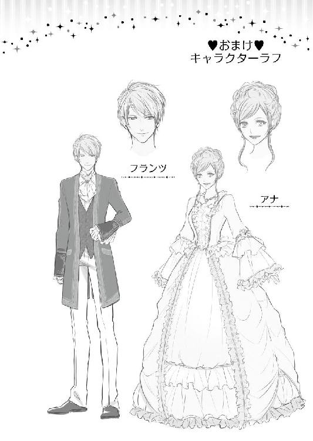
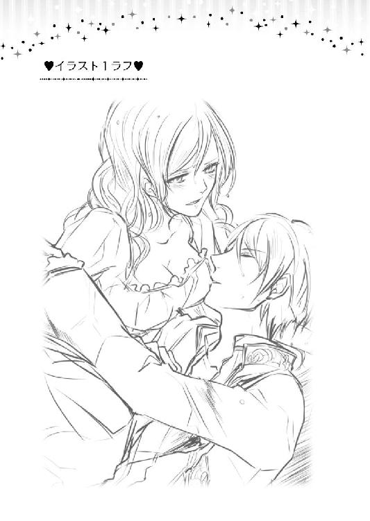
蜜夜の花嫁〜皇太子様に魅入られて〜
電子第１版発行 ２０１４年６月13日
著 者 橘かおる
発行所 株式会社ジュリアン
東京都千代田区九段北１―５―９―３Ｆ
０３―３２６１―２７３５
ＨＰ http://www.julian-pb.com/
※本電子書籍は左記の作品に基づき製作されました。
発行 株式会社ジュリアン
ロイヤルキス文庫『蜜夜の花嫁〜皇太子様に魅入られて〜』
（初版発行 ２０１４年３月30日）
(c)Kaoru Tachibana/julian Publishing2014
※本書の一部、あるいは全部を無断で複製複写（コピー）、転載、上演、放送することは法律で認められた場合を除き、著作権の侵害となるため、禁止します。